ViewTouch
User Manual — Custom Retail & Hospitality Edition
For cashiers, bartenders, servers, kitchen staff and managers
Ver. 261110
Effective with paigeent1 ver 0.9.505 (Custom Fork Edition, paigeent1/viewtouch)

Contents
- Getting started
- Logging in, clocking in and out
- The floor: tables, takeout and open checks
- Taking an order
- Check options: rush, transfer, move, merge, split
- Paying and closing a check
- Customers, gift cards, house accounts and rewards
- The host stand: waitlist and reservations
- Kitchen, bar and expo screens
- Cash: banks, drawers and tips
- Manager screens
- Reports and End of Day
- Changing the screens (edit mode)
- Phones and tablets
- Backups, safety and starting over
- The self-order kiosk
- Languages (Español, Français, Português, 中文)
- Keep running if a computer fails
- Retail POS Workstation, UPC Barcodes & Parent/Child Costing
- ViewTouch Label Utility v1.2 & ZPL Barcode Printing
- Custom Hardware, USB Receipt Printer, Top Status Ribbon, DIRECTV & Tablet Fleet
- Quick reference
- ID checks for age-restricted sales
- The guest screen
- Billboards
- Labels from any screen
- ILSA price book sync
- ILSA sales history
- Receipts, receipt barcodes and check numbers
- Site Setup, Hardware Configuration and Screen check
- Store computer commands (owner appendix)
What's new in Ver. 261110
What changed after the November 8 edition (Ver. 261108):
- Dates on a touch calendar. Every screen that asks for a date or a time opens a calendar instead of the keyboard: months on the left, the days in the middle, the year with big + and − on the right, then OK. The date fields are bigger and show the day in words (Tue, Sep 1, 2026). Reports → Dates… now shows the days you pick right away (chapter 2, Choosing a date).
- Time Clock report for payroll: Reports → Time Clock, laid out like the old ILSA printout, on the screen, on paper and as a PDF. New Store Settings: Store address and Store phone (chapter 12).
- The cash drawer opens only on the terminal's own printer, and only when that printer's cash drawer setting is on. It never opens another printer's drawer. When it can't open, the screen says why in red (chapter 10).
- USB receipt printer on the store's Pi: the Rongta RP850 works, logo, barcode and all (chapter 21).
- The Retail screen: MISC MDSE and MISC FOOD/BEV open departments, VOID ITEM / RESTORE ITEM on the item touched, CANCEL SALE always closes the sale, a new right column, and Reprint Receipt opens Look Up Checks. After a time-out the screen comes back to Retail Mode (chapter 19).
- Find is quicker with the big price book and easy to read: the list takes the width, PG UP / PG DN are on the right, and the search line says Searching… or how many it found. A 🏷️ Retail Mode button on the order screen, Tables and Open checks goes back to the Retail screen (chapter 2).
- Find a Tablet… on the End of shift screen makes a lost tablet beep and flash until someone finds it (chapter 14).
- Two serial scanners on one register (one for products, one for IDs): ViewTouch listens on every USB-serial port by itself (chapters 2, 23 and 30).
- Store computers (owner):
vt-share file names say which computer they came from, vt-touch-map --watch notices a touchscreen that came back untied, and vt-wipe-transactions --remove-gift-cards (chapter 31).
What's new since November 2, 2026
What changed in this store edition after the manual was rebuilt on November 2:
- The Retail screen has CASHIER DUTY (X report, drawer, No Sale, past receipts, open checks, time clock), CANCEL SALE with a reason, VOID ITEM / RESTORE ITEM on the touched line, DISCOUNTS for an item or the whole sale, PRICE CHECK mode, 📷 SCAN for the tablet camera, and ALPHA LOOK UP opening the new Item Look Up screen (chapter 19).
- ID checks for tobacco and alcohol: scan the back of the ID before the sale goes on (chapter 23).
- The guest screen: the order during a sale; messages, pictures and videos between guests, added by touch from Dropbox (chapter 24). Billboards: TVs around the store showing the same pictures and videos (chapter 25).
- Labels from any screen, tablets included: End of shift → Labels… (chapter 26). The Label Utility is now v1.2, with Quick Label, Test Print, Save As and Rename, and manager-only template changes (chapter 20).
- The ILSA price book keeps prices and costs up to date by itself every 15 minutes (chapter 27), and the old ILSA sales history (receipts and reports) can be looked up (chapter 28).
- Receipts: reprint as a customer copy, a gift receipt (no prices) or the store's copy; an optional barcode that opens the check when scanned; the UPC above each item; voids and error corrects left off unless turned on (chapters 5, 11 and 29).
- No Sale asks why and prints a slip; X Report mid-shift; the Exceptions report saves each exception ticket as a picture, and End of Day saves a paperless summary (chapters 10 and 12).
- Reports → By Employee: each person's items and sales, for spiffs. Every line now keeps who rang it and its cost at the time of sale (chapter 12).
- Gift cards: where each card was sold, Purchased By / Purchased For, Transfer / Replace Card, PINs shown to managers only, and subscription cards (chapter 7). Subscription only promotions (chapter 11).
- Menu Builder: 🏷 Retail screen only categories, 🚫 No discounts, cigar sizes, maker and product groups, a better spreadsheet import, and quick with a 30,000-item price book (chapter 11).
- Pay lists the check's items with each tax on its own line (chapter 6). Find finds every word typed, in any order (chapter 2).
- Printers: a printer in error no longer holds up printing; every screen says so with a Reprint button (chapter 11).
- Store computers (owner): Site Setup, Screen check, two touchscreens, serial scanners, standby on or off per computer, and the store computer commands (chapters 1, 18, 21, 30 and 31).
What's new in the Custom 0.9 Retail & Hospitality Fork
Built on top of ViewTouch Modern 0.9, this store edition (paigeent1/viewtouch) adds specialized retail tobacco/cigar inventory controls, barcode validation, ZPL label printing, thermal receipt formatting, and tablet fleet management:
- Dedicated Retail POS Entry Mode & Full-Screen Retail Workstation: the Retail POS Entry screen with big touch keys, a central PLU/numeric keypad, BOX ↔ STICK parent/child unit toggle, 1-tap Retail ↔ Hospitality mode switching, a start screen per terminal (Manager → Terminals → Start screen), and a 3-way Menu Builder mode chooser (Hospitality, Retail Inventory, Events & Admissions) and live Profit ($), Gross Margin %, and Markup % calculations (chapter 19).
- Primary UPC and Alt UPCs: Every item has a Primary UPC and any number of Alternate/Promo UPCs. Barcodes are saved exactly as typed or scanned: no check digit is added or tested, only the shape (4 to 40 letters or digits) and duplicates. A scanned 11-digit code, or a 13-digit EAN with a 0 in front, still finds the 12-digit item. Scanning an unknown barcode on a selling screen opens the centered Item Not on File — Yes (Y) / No (N) window and ignores rapid repeat scans (chapters 2 and 19).
- ViewTouch Label Utility v1.2: Launched from Manager → Label Utility, reading the store's database read-only (it never writes to it). Renders every label at 203 DPI as a 1-bit picture with whole-dot UPC-A/Code-128 barcodes, Print UPC / ↻ Next UPC barcode selection, your 4 standard label templates, Quick Label, Test Print…, Save As…, Rename Template, Delete Template / Restore Standard Labels (managers), and an 8-handle Visual Label Designer using Arial, Arial Black, and Courier New fonts (chapter 20).
- Customer First/Last Name Profiles & Enhanced Gift Cards: Split First Name and Last Name customer fields (with 5,538 migrated ILSA customer profiles), Gift Card Sell, Reload, Balance, and Cash Out of a small balance (Store Settings → Staff hours → Cash out gift card balances under ($)), PatronPal imported Purchased By / Issued To fields, and an 8-column landscape Gift Cards Report with 5 views: Summary, Activated, Active Balances, Inactive, and Transactions (chapters 7 and 12).
- ESC/POS Font B Receipt Sub-Lines & Compact Choice Text: Free modifier choices print on guest receipts unless Store Settings → Receipts → Free choices on receipts is turned off; 2-space indented modifier sub-lines and
Opened <time> - closed <time> timestamps print in compact Epson TM-T88 Font B (9×17 dots, 56 chars/line) while on-screen modifier choices scale cleanly to 0.65 height (chapters 4 and 11).
- Top Status & Live Weather Ribbon, DIRECTV Control & Android Tablet Fleet: Configurable top status ribbon showing live local weather by store ZIP code, Wi-Fi signal, tablet battery, time, and customer count; DIRECTV tuning pages for each receiver with a Frequently Used channel column; and 64-bit Lenovo Android tablet kiosk management with top-left yellow Terminal Name badges, camera barcode scanning, screen dimming with touch to wake, and Manager-PIN tablet reboot (chapter 21).
What's new in 0.9
- A computer only for ViewTouch: one line installs it on a fresh Raspberry Pi; the computer locks itself down and starts on the ViewTouch home screen (start ViewTouch, network, time, updates, restart, reset; on the main register the store's setup screens), and the first time you set it up by touch (chapter 1).
- 12-hour times everywhere ("9:30 PM"), typed as "4:30 PM" or "16:30"; the clock is set from the internet.
- Handhelds: their screen sleeps, and after it was off a while the next touch asks for a PIN (their check comes back); each device can have its own start screen; phones don't edit pages (chapters 1, 2 and 14).
- Android tablets only for ViewTouch: home screen, pinned, starting when the tablet turns on (chapter 14).
- Pictures by touch: the logo and store pictures are chosen from thumbnails of your Pictures, Documents and Downloads, or a USB stick (chapter 13).
- Floor plans: Main shows every table with the walls, windows, doors, the bar and the patio; Dining Area, Bar and Patio show each room bigger, with tabs between them. A table on two plans is the same table (chapter 3).
- Draw your own room: walls, doors, windows, a bar counter, booths, plants, fences and named areas, chairs around the tables, and anything turned to any angle (chapter 13).
- The host stand shows the floor plan, on big screens and phones, with zoom (chapter 8).
- Phones show the floor plan too: tables where they stand, touch one to open it; moving a check picks the table on the plan (chapter 14).
- Store Settings in sections, with Find a setting; settings made for fingers (− / + numbers, switches, lists as rows); the tip pool as one table; changes marked and kept until saved; and About: the version and where the store's data is (chapter 11).
- Start pages are chosen from the floor plans: each job (or person) starts on the room they work (chapter 2).
- Coupon codes (typed or scanned), barcode scanners for items, coupons and gift cards, and holding a guest's card on a bar tab (chapters 2 and 11).
- Forecast: a coming day from past weeks, the prep list and what to order (chapter 12).
- Receipts and kitchen tickets print in the store's language (chapter 17).
- Log waste (a dropped burger, lettuce gone bad) and par levels with an order list by vendor; prep labels on a label printer; Waste and Labels on the kitchen screen (chapters 9 and 11).
- Store Check: are we ready to open, and what went wrong lately (printers, backups, the standby, a crash), marked on the Manager page (chapter 11).
- High Contrast outlines every button; text size Largest; both for a person on any screen, or for one screen (chapters 2 and 13).
- French, Portuguese and Chinese (chapter 17).
- Stock counts: count the shelves, and Reports → Stock shows what went missing and what it cost (chapter 11).
- Count a drawer bill by bill, and blind counts (chapter 10). Voids and comps ask why, and the Exceptions report adds the reasons up; the Changes report shows who changed what on the manager screens, the menu and the pages (chapter 12).
- The host stand knows when tables free up (Free ~10m), who's next up for a table, and regulars by their phone number, with their visits and allergies (chapter 8).
- Table nudges for servers (Nothing ordered · 9m, Last order 30m ago), and Often added items on the order screen (chapter 3).
- A cash tip for the server when someone else takes the payment, and notes for the next shift (chapters 10 and 12).
- Unusual activity flagged in the Exceptions report, servers needed each hour in the Forecast, and a price watch when deliveries cost more (chapters 11 and 12).
- Phone versions that share the page's buttons: edit a page for standard screens and for phones with the Standard | Phone switch; a button's words, colors and actions are the same on both, only where it sits is the phone's. Show on puts a button on both, or one kind of screen only (chapter 14).
1. Getting started
ViewTouch is a point-of-sale system for restaurants. Every screen is made of buttons you can move, resize and restyle yourself (chapter 13), and it runs on Linux computers, touch screens, Raspberry Pi and Android tablets.
One store, any number of screens
One computer keeps the store's data: checks, menu, staff and reports. Every other screen (a terminal) connects to it over the network. All screens see the same checks and tables, and a check open on one screen can't be changed on another at the same time.
The store's Raspberry Pis (owner)
The store computers in this edition are set up with the store's own commands, not the general installer below. Paste them on the Pi; each one ends with ; beep3 so the Pi beeps when it's done.
- A fresh Pi:
vt-install "Store name"; beep3 installs everything, gets ViewTouch and starts this site's settings. Then vt-server; beep3 builds ViewTouch and starts it.
- At boot: a new Pi starts ViewTouch by itself (and so does the desktop shortcut). This starts the version already built, with the guest screen and the scanner, without building it again. By hand:
vt-start; beep3.
- After an update:
vt-server; beep3 builds ViewTouch again, then restarts it. It always says how it went: Server rebuilt and restarted, or ViewTouch didn't start: and the reason, with the last lines of its log. A build that fails leaves the running ViewTouch alone.
The other store commands are in chapter 31, Store computer commands (owner appendix). This Pi's own settings (scanner, guest display, tablets, TVs, ID checks, ILSA) are in Manager → System Config → Site Setup (chapter 30).
Setting up a new computer. On a computer with Linux (Raspberry Pi OS 64-bit, Debian 13, Fedora or Ubuntu) and an internet connection, open a terminal and paste:
curl -fsSL https://raw.githubusercontent.com/ViewTouch/viewtouch/main/modern/packaging/install-viewtouch.sh | sudo sh
It asks one question:
- Only for ViewTouch (registers, kitchen screens, kiosks, time clocks; recommended). It installs ViewTouch, locks the computer down and restarts it. From then on everything is by touch: see A computer only for ViewTouch below.
- Next to the desktop: it installs ViewTouch beside the computer's desktop and asks what this computer is, in a text menu (below).
On Raspberry Pi OS and Debian 13 it downloads ViewTouch ready-made (a minute); elsewhere it builds it (a few minutes). The text menu's choices:
| Choice | What that computer does |
|---|
| 1. Main register | Has a screen and keeps the store's data. Other screens join it. |
| 2. Back-office server | Keeps the data with no screen (a box in the office). |
| 3. Another register | A register that joins the store. |
| 4. Kitchen screen | Shows the orders to make. |
| 5. Self-order kiosk | Guests order on their own and pay at the counter. |
| 6. Time clock | Staff clock in and out and see their schedules. |
| 7. Standby server | A live copy of everything that takes over if the main computer stops (it asks for a pairing code). |
To change it later, run sudo vtmodern-setup again; vtmodern-setup status shows what's set up and the newest backup. A screen that joins the store shows a Join screen the first time: pick the store and type a pairing code (next section).
Screens start full screen at boot and have no way out for staff. To close ViewTouch on a screen, a manager touches Manager → Close ViewTouch twice.
A computer only for ViewTouch: the home screen
The store's Raspberry Pis set up with vt-install run ViewTouch on the Pi's desktop and start it at boot; they don't use this home screen. It is for computers installed with Only for ViewTouch above.
A computer installed Only for ViewTouch (like a Raspberry Pi register) has no desktop. It starts on the ViewTouch home screen, and ViewTouch opens on top of it. The home screen shows when a manager closes ViewTouch (Manager → Close ViewTouch), and if ViewTouch ever stops by itself it says so and starts it again after 5 seconds. If it stops three times in a few minutes, it stays on the home screen: restart the computer, or call for help.
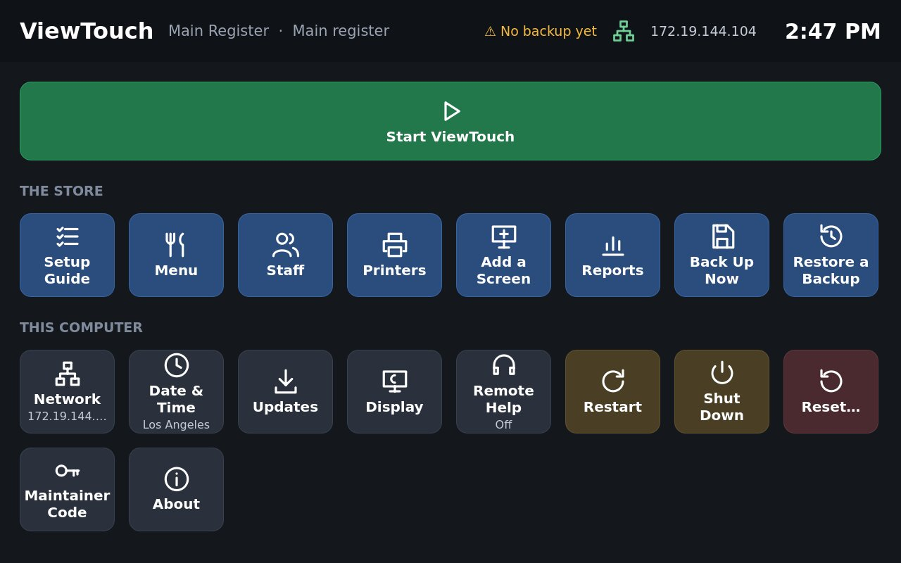
The home screen of the main register.
- Start ViewTouch, the big green button.
- The store (the main register only): Setup Guide, Menu, Staff, Printers, Add a Screen, Reports: each opens ViewTouch right there once a manager logs in. Back Up Now makes a backup.
- This computer: Network (a cable, or Wi-Fi with the on-screen keyboard; always the store's own network, never the guests' Wi-Fi), Date & Time (the time zone, and whether the clock is set from the internet), Updates (Check for a New ViewTouch looks on the internet and offers Install ViewTouch 0.9.… when there's a newer one: it's checked to be ViewTouch's own and never an older version, the tablets' app comes with it, and the home screen starts again on it; or a new ViewTouch from a USB stick, also only one signed by ViewTouch; security updates for the computer install by themselves each night. Store Check says when a new ViewTouch is out), Remote Help (lets a technician connect while it's on), Restart, Shut Down, Reset… (start over and choose again what the computer is, or erase the store; a backup is made first) and About.
The computer's settings (Network, Date & Time, Updates, Remote Help, Reset) ask for this computer's PIN, chosen in the first-time setup. Give it only to managers; it isn't anyone's ViewTouch PIN.
The first time the computer starts, it asks by touch: what it is (main register, register, kitchen screen, self-order kiosk, time clock), its name, the network, the store's time zone (touch it: the computer may start on another one) and the settings PIN. Then ViewTouch starts; the main register opens on the setup guide once a manager logs in.
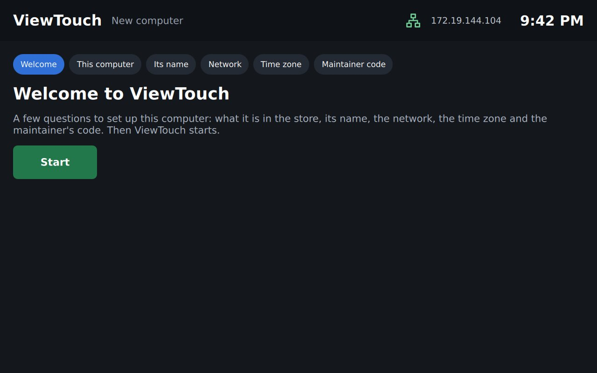
The first-time setup.
Locked down means: ViewTouch runs as its own account that can't log in; the desktop is off; a firewall lets in only ViewTouch's screens; remote access (SSH) is off until Remote Help turns it on; the clock is always set from the internet; a frozen computer restarts by itself. The administrator account made with Raspberry Pi Imager still works for a technician: Ctrl+Alt+F2 on a keyboard, or over the network while Remote Help is on.
Adding a screen or tablet (pairing)
- On any store screen: Manager → Terminals → Pair a Device. A code like
K7QM4-XHP2W appears. It works once, for 10 minutes.
- On the new screen or tablet, ViewTouch shows Join a ViewTouch store with the stores it found. Pick yours, type the code and a name for the screen (for example "Bar"), and touch Join.
- The new screen now appears in Manager → Terminals, where you choose its receipt printer and whether it has a cash drawer.
Tablets (owner): each store's tablets are also listed in Site Setup → Tablets, with their name and fixed address (+ Tablet). That list is what Check tablets and Send app update work on (chapter 30).
The demo store
A new store starts with a demo café: a menu, a floor plan, staff and settings, so you can try everything right away. These are the demo PINs:
| PIN | Person | Role |
|---|
| 1234 | Morgan | Manager (everything) |
| 1111 | Sam | Server |
| 2222 | Casey | Cashier |
| 4444 | Jo | Bartender |
| 3333 | Riley | Busser (clocks in, shares tips) |
| 5555 | Rosa | Server whose screens are in Spanish (chapter 17) |
Change the PINs and staff in Manager → Employees before you open for real.
Phones and handhelds
Every page works on a phone or handheld held upright. The order screen has the check on top and Void, Send and Pay at the bottom. Other pages are laid out again for the tall screen: buttons two or three across, big enough for a finger. Lists such as Manager → Employees show the list first; touch one to open it, and ‹ List goes back.
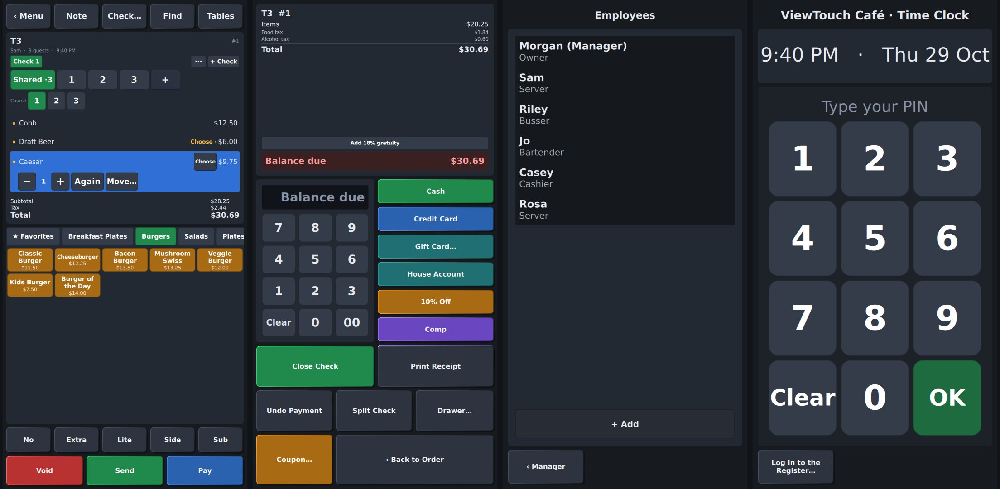
On a phone: a menu page, Pay, Employees and the Time Clock.
A screen counts as a phone when its short side is under 600 (most phones; a folding phone switches as it opens). To choose for a screen, use Manager → Terminals → Screen layout.
- The screen sleeps on phones and handhelds, as on any phone (tablets and registers stay on). When it was off for a while, the next touch asks for a PIN: Type your PIN to go on. Their open check comes back as soon as they log in. How long: Store Settings → Screens → Handhelds: ask for the PIN after the screen was off (30 seconds to start; 0 every time, −1 never).
- Phones don't edit pages. Pages are made on a bigger screen (the main register or a tablet) and reach the phones as soon as they're saved.
- Pictures (a logo, a menu photo) are chosen with Android's own photo picker.
Your first day: the setup guide
The first time a manager logs in, the setup guide walks through making ViewTouch yours, one step at a time: your store's name and the lines at the top of receipts, your logo, your colors, your taxes, your first menu items and your team. Skip any step with Next; Finish Later closes it until a manager logs in again, and Manager → Setup Guide… brings it back anytime.

Welcome |

Your logo |

Your colors |

Your team |
On a phone the guide fills the screen, one thing under another; each step scrolls, and Next and Finish Later stay at the bottom.
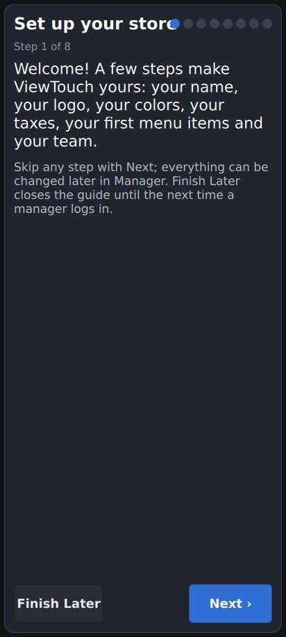
On a phone |
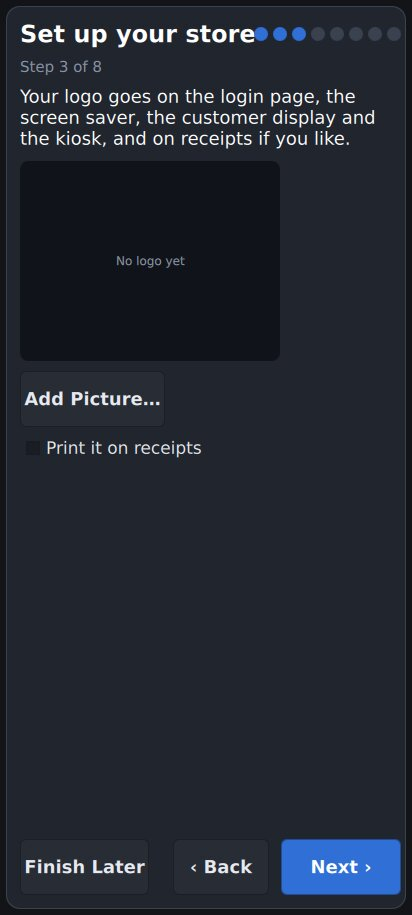
Your colors |
The demo's staff (Morgan 1234, Sam 1111…) have PINs printed in this manual. Add yourself as a manager with your own PIN, then touch Turn Off the Sample Staff. If you're logged in as Morgan, Morgan goes off when you touch Finish; then log in with your own PIN.
2. Logging in, clocking in and out

The login screen.
- Log in: type your PIN and touch Enter (or Log In).
- Clock in / Clock out: type your PIN and touch Clock In or Clock Out. You can also clock in after logging in.
- If you work more than one job (a bartender who also serves), it asks Which job today?. Each job has its own pay.

Clocking in with two jobs.
- If the store uses the schedule rule (Store Settings), you can clock in only from a few minutes before your scheduled shift until it ends. A manager can clock you in from the schedule.
A screen nobody touches dims after 10 minutes (Store Settings → Dim the screen after). Touch it once to wake it: that touch doesn't press anything.

The screen saver.
The screen saver (Touch to Wake) shows the store's logo from Store Settings → The store → Store logo, on every screen, tablets included. If the logo can't load, a built-in store logo shows.
Kitchen screens by station
Each cook can have a screen with only their station's orders. On the kitchen screen, touch Station… until it shows yours (Grill, Fryer, Cold Line…); the screen remembers it. A burger combo's fries appear on the fryer's screen as their own line, "with COMBO BGR", and the fryer bumps them. The expediter's screen shows which stations are still working on each order.

The fryer's screen.
Managers: name the stations in Store Settings → Kitchen stations, one per line, and set each menu item's Made at in Manager → Menu. Want one screen for the whole kitchen? Leave Kitchen stations empty: there's no Station button, and every order shows whole on the Kitchen screen.
Orders for later
Taking a phone order for 6:30, or for Saturday? Touch Ready Later… on the check (or Check… → Ready Later… on any order). Pick the day, the hour and the minutes, then Done, and order as usual. Send saves it: the kitchen gets it by itself 20 minutes before it's due (Store Settings → Orders for later go to the kitchen). The ticket and the kitchen screen say READY AT 6:30 PM, and the open checks list shows when each is due.

Ready tomorrow at 6:30 PM.
An order for another day is paid on that day, and it doesn't hold up tonight's End of Day. As Soon as Possible turns an order for later back into a regular one.
Event tickets
Selling seats for a wine dinner, a class or trivia night? The demo's Wine Dinner Ticket (on the Drinks page) is one: each sale says how many are left, and when all 40 are sold the button shows SOLD OUT. Voiding a ticket gives the seat back. The date and time print on the receipt.
Managers: Manager → Menu → Event tickets: seats and Event date and time (like 2026-10-09 19:00). Turn on Don't show in the kitchen for tickets.
Substitutes
A guest wants a salad instead of fries? Order the burger with No Side, touch Sub in the bar at the bottom, then the salad. It goes on the burger as "SUB House Salad" at its substitute price (+$3.00), not as a $8.50 salad of its own.
Managers: Manager → Menu → Can be a substitute, and its Substitute price.
Not sure what a button does? Hold it
Press and hold any button for a moment: instead of doing anything, a card at the top says what it does (Sends the new items to the kitchen and bar, Adds Classic Burger ($11.50) to the check). Great for a first shift. Touch the card to close it.

Popular today
The Popular card on each menu opens today's best sellers, the most ordered first. It fills itself in as the day goes, so the things people order most are always one touch away.

Another Round
At a busy bar or table: once drinks have been sent, Another Round appears next to the check's name. One touch orders the same drinks again (the ones sent last, with the same sizes and choices); touch Send.
After Send: only a manager can void
Once an order is sent, a server, bartender or cashier can't take items off or change them. −, + and Choose go away on sent items (only Again, which adds a new one, stays). Touching Void on a sent item brings up Manager approval: a manager types their PIN and that one void goes through, and the check's history says who approved it. A server's own PIN doesn't work there. Before Send, anyone can still fix their order.

The Dashboard: today at a glance
Manager → Dashboard shows how the day is going: net sales compared with the same day last week at this time, the number of checks and the average check, labor as a percent of sales (amber when it's getting high, red when it's too high), open checks, how long the kitchen is taking, who's on the clock, today's best sellers, and anything running low or sold out.

Running low: "5 left"
When an ingredient gets down to its Low at amount (Manager → Inventory), the dishes that use it show how many can still be made, like 3 left, so you can warn guests. The number counts down with each order; at zero the dish sells out by itself, and comes back when a delivery is received.

Arrange the menu by touch
On Everything, a manager touches Arrange…. Touch an item to pick it, then ◀ Earlier or Later ▶ to move it, or a color to paint its button. Done goes back to taking orders. No page editing needed.

Change an item right here: a manager holds an item's button (or picks it in Arrange and touches Edit…; + New Item adds one). The card has its name and price, or Sizes… (each size with its price), What's on it (lettuce, tomato, onion: each one can then be No, Lite, Extra or on the Side), its Kitchen name, the Choices it asks for, For sale or Sold out, and its color. Save is one Undo step; All Settings… opens it in the Menu Builder.
A look for each screen
Want the bar's screen dark and the patio tablet light? In Manager → Terminals, choose the screen and pick its Look. Only that screen changes; every other screen keeps the store's look.
Course pacing: fire the next course in a few minutes
When a later course is on hold, touch ⏱ next to Fire Course 2 and pick In 10 min (or 5, 15, 20). The kitchen gets it by itself then; the button shows when. Touch Fire Course 2 to send it sooner, or ⏱ → Don't fire it to go back to firing it yourself.

Kitchen times: late tickets
The kitchen screen learns how long each dish usually takes from the times it's bumped. Each ticket shows its time and its target (7:32 / 12m), turns amber as it gets close, and red with LATE when it's over. To set a dish's time yourself, use Manager → Menu → Kitchen time (minutes).

Opening and closing checklists
Write your store's opening and closing tasks in Manager → Settings (Opening checklist, Closing checklist, one per line). Whoever does a task touches it on the Checklists page (on the Manager page, and on the Log Out page for everyone); it shows who did it and when. End of Day tells you how many closing tasks are left, and the Checklists report keeps each day's record.

Time off and shift swaps
On the Time Clock, after typing your PIN:
- Ask for Time Off…: pick the day (the next four weeks are shown; Another day… picks one further off on the calendar), a reason if you like, and Ask.
- Give Away next to one of your shifts: it shows up under Up for grabs on everyone else's Time Clock, where a coworker can Take It.

A manager decides in Manager → Schedule → Requests…: Approve or Don't approve. Approving a swap gives the shift to whoever took it. Your requests and their answers are listed on the Time Clock under My requests, and the Dashboard shows how many are waiting.
Overtime warnings
When someone is within two hours of overtime (by the store's daily and weekly rules, Manager → Store), the Time Clock tells them how long they have left, clocking in says so, and the manager's Dashboard marks them in amber. Once they're in overtime it turns red.
Fixing a time punch
Someone forgot to clock out, or clocked in late by mistake? Go to Manager → Schedule → Time Punches…. Choose the punch (the last month's are there), fix Clocked in, Clocked out (both on the calendar, with the time; Clear on Clocked out means still clocked in), the breaks or the job, write the Reason for the change, and Save. + Add adds a punch someone missed; to remove one made by mistake, tick Remove this punch, give the reason, and Save.
Every change is kept: the Labor report marks changed punches with a * and lists what changed, who changed it and why.
At End of Day, anyone still clocked in is listed (in red if it's been over 12 hours) with Clock Out Now.

Time Clock: clock in and out, and see your schedule
On the login screen, touch Time Clock & My Schedule and type your PIN. You see whether you're clocked in, your hours today, and your shifts for the next two weeks. Touch Clock In, Start Break / End Break or Clock Out. It never logs you in to the register, and goes back to the keypad by itself (or touch Done).

Want a screen just for this, like a tablet by the back door? In Manager → Terminals, choose that terminal and set Screen to Time Clock. It then always shows the Time Clock; Log In to the Register… at the bottom is for managers who need the rest.
Choosing a date: the calendar
A box that asks for a date shows the day in words, like Tue, Sep 1, 2026. Touch it and a calendar opens, not the keyboard. It says Choose a date (or Choose a time, Choose a date and time).
- The month: the 12 month keys on the left.
- The day: the month's days in the middle, weeks from Sunday. Today has a ring around it.
- The year: on the right, with big + and −.
- A time: hour keys 12 to 11, minute keys by 5 with −1 / +1, and AM / PM.
- Today (or Now, or Current Date and Time) jumps there. The red Clear empties the box, only where it may be empty. Cancel leaves it as it was. The green OK keeps your choice.
The calendar is on every screen with dates: Reports → Dates… (From and To), ILSA History's From and to, Look Up Checks and Find a Check (Since…), the ILSA receipts (Day…), Time Punches, Promotions (First day, Last day, From, Until), a menu item's event date, Meal periods (Starts at), the Schedule (a shift's times and Go to the day), time off and reservations (Another day…) and the Menu Builder's price changes for later.
The ID check's date of birth is still typed on its own keypad (MM DD YYYY): that's quicker than 40 taps on the year.
Discounts are a manager's
Only managers give discounts: 10% Off, Comp, Staff Meal and custom ones. When a server, bartender or cashier touches one, the Manager approval pad asks for a manager's PIN. A staff meal is still recorded as the server's meal.
Custom discounts: on the Pay screen, type the amount on the keypad, then touch $ Off (type 500 for $5.00 off) or % Off (type 15 for 15% off).

To let one trusted person give discounts without a manager, open Manager → Employees, choose them, and set Give discounts and comps to Allow.
Oops: Undo
Took the wrong item off? For a few seconds the bottom of the check says Removed Bacon Burger with an Undo button. Touch it and the item comes back where it was, with its choices.

On the check: ID checks, error corrects and voids
- When an ID was checked, the check shows a line like ID checked 21+ · DOB MM/DD/YYYY · expired ID. The Retail screen shows the same line (chapter 23, ID checks for age-restricted sales).
- A retail item taken off with VOID ITEM (an error correct) shows struck through with ERR CORR; a voided line shows VOID (chapter 19).
More of an item: − 2 + and Again
Four burgers? Touch the burger once, then + three times: the check says 4 × Bacon Burger. Under the item you just added (or any item you touch on the check) are −, the number, + and Again:
- + and − change how many. − on the last one takes it off.
- Again adds one more made the same way (Medium Rare with onion rings) as its own line, so you can change it, say, to well done.
- Something already sent to the kitchen only has Again; to take one off, use Void.

Swipe an item on the check: left takes it off (a void once it's sent, which needs a manager as usual), right adds one more. While you slide, the line shows Remove, Void or +1, and turns bright once letting go will do it. A short slide does nothing.
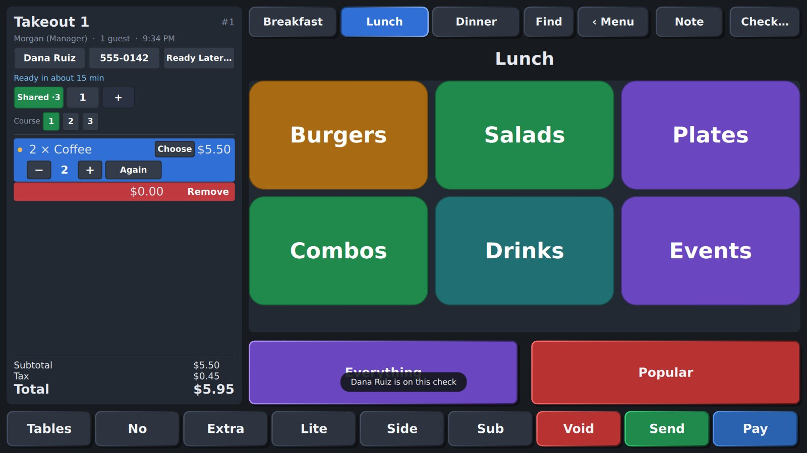
Deliveries and drivers
Deliveries on the Tables page shows every open delivery, the oldest promise first, colored by where it is: gray not sent to the kitchen, amber cooking, green ready to go, blue out with the driver (and for how long), teal back. Late promises are in red.
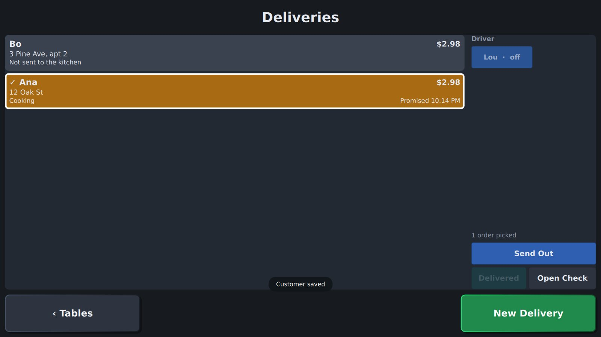
- Send it out: touch the orders going together, touch the driver, Send Out. The check stays with whoever took the order: the sale and the tip are theirs (unless the check is transferred to another server). The driver collects the payment, into their own bank.
- Back: touch the orders, Delivered. The driver logs in, Open Check, and takes the payment. Paying a check that's out counts as delivered too.
- Drivers: give someone the Delivery driver role (or driver as another job) in Manager → Employees. Drivers carry their own bank (the cash they collect, their change and tips) unless their Cash handling says otherwise, and check out like a server.
- Delivery fee: Store Settings → Delivery fee adds it to every delivery once something is ordered (not for food; no tax; no discounts). Taking it off is a void, so it needs a manager.
- Report: Reports → Drivers: deliveries, sales, fees, tips and the average time out, per driver.
Separate checks at one table
A party of six, each paying on their own? Open the table as usual and take the first guest's order. Then touch + Check at the top of the check: a new check opens for the same table, without leaving the menu. Touch a number to go back to any of them. With many checks (a party of 20), the row stays on one line: ‹ and › show the others. The top of the check says which one you're on, like T5 · Check 3.

The ⋯ button next to + has more:
- One Check per Seat: if you used Seat − / + while ordering, one touch gives each seat its own check.
- Print Every Check: a receipt for each.
- Put Them Back Together: one check for the whole table again.

Something on the wrong check? Touch it, then Move…, and pick the check it belongs on (or A New Check).

Each check is sent and paid on its own. Later, touching the table on the floor plan asks which check to open.
Each person's own screen
In Manager → Employees, each person can have:
- Text size: Bigger, Biggest or Largest button and check text, just for them. A screen read from afar can have its own too (Manager → Terminals → Text size); a person's own wins while they're logged in.
- Look: their colors on any screen while they're logged in. High Contrast (black, with every button outlined in white and the colors that mean something at their brightest) is for anyone who reads the screen better that way.
- Left-handed: the check moves to the right of the order and Pay screens, the menu to the left.
- Start screen: the floor plan they see first after logging in, like the Bar for a bartender.
- Language.
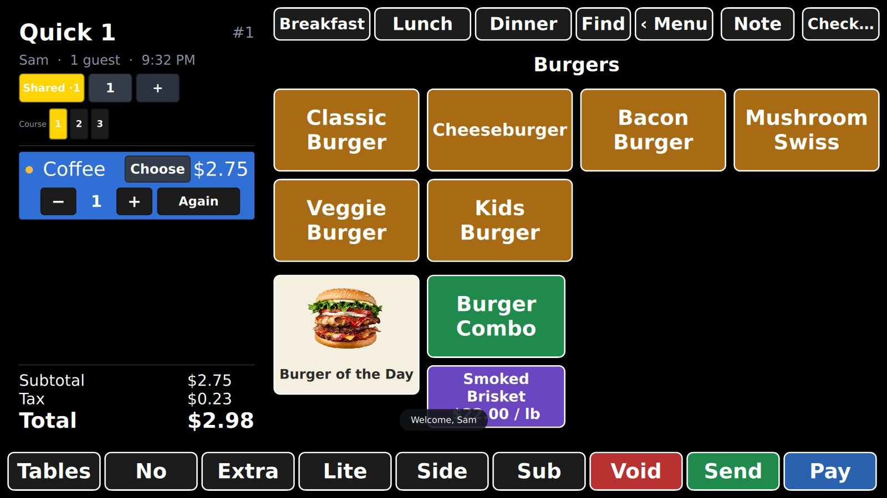
High Contrast.

The order screen for someone left-handed.
In Manager → Store Settings → Start pages, Servers start on, Bartenders start on and the others pick the floor plan each job starts on: the Tables page, the host's Seating screen, or another room drawn in the editor (a page with tables). Left empty, hosts start on Seating and everyone else on Tables. A person's own start screen (Employees) wins over their job's.
A device's own start screen wins over both: Manager → Terminals → the device → Start screen. The patio handheld opens on the Patio floor plan, a takeout tablet on Open Checks, whoever logs in. It can be a floor plan, Open Checks, a menu, Tabs or Deliveries.
Switch User
Someone else needs the screen in the middle of your order? Touch Check… → Switch User (or Switch User on the floor plan). They type their PIN and work; when you type yours again, on this screen or any other, your check opens right where you left it. The same happens if the screen logs you out by itself after sitting idle.
Ring items in by number
Know the menu by heart? Every item can have a number (Manager → Menu → Number). With a keyboard, type the number on the order screen and press Enter; on Find, type the number and touch the item. The demo menu's burgers are 101 to 107, salads 201 to 204, drinks 301 to 308.
Barcode scanners
Any USB or Bluetooth barcode scanner that acts as a keyboard works; nothing needs setting up. Scan:
- An item's package on the order screen to ring it in. Give items their barcodes in the Menu Builder (Barcodes: touch the field and scan the package; several are fine), in Manager → Menu, or with a Barcode or UPC column in an imported spreadsheet.
- A coupon on the Pay screen (or any screen with a check open) to take it off the check.
- A gift card to look it up: the Gift Card page opens with its balance.
A scanner types faster than anyone, which is how ViewTouch tells it from someone typing. When a text field is open (the coupon or gift card number), the scan goes into it instead.
Where a scan counts
- Scans count on the Retail screen, the order screens, Pay, and screens with a search or scan field: Gift Card, Find, Item / UPC Builder (the Menu Builder), Manager → Menu, Find a Check, Reprint Receipt, Look Up Checks, Labels, stock counts and deliveries.
- Anywhere else (the tables, the Manager page…) a scan is ignored, with no message.
- Item Not on File — Yes (Y) / No (N) comes up only on the ordering pages, Retail, the Menu Builder, Manager → Menu and Find. On the other scan screens it just says <code> isn't on file. On the Gift Card screen an unknown code says <code> isn't a valid gift card.
Codes that still match
- A UPC-A read as a 13-digit EAN with a 0 in front finds the 12-digit item, and the other way round.
- An 11-digit code (a UPC-A without its last digit) finds the 12-digit item.
- A code with letters that is no coupon or gift card says That code isn't a product barcode. It is never offered as a new item and never shown on the screen (so a driver's license number isn't displayed).
Owner: scanners on a USB-serial adapter work too, on any port and as many as there are ports (one for products and one for IDs, say): ViewTouch listens on every USB-serial port except a printer's, and finds a scanner plugged in later by itself. A driver's license is known by what it says, whichever scanner reads it. Their settings are in Site Setup → Scanner: Serial scanner port (Auto, Off or a port), Speed (baud), a live test (Test: scan anything with this screen showing) and Restart ViewTouch (new port or speed). USB scanners that type like a keyboard need no setup, including a second one just for IDs (chapter 23).
Find an item by typing
Don't know where something is on the menu? Touch Find at the top of the order screen and type part of its name: cob finds Cobb, bur every burger. Every word you type must be somewhere in the name, in any order: oliva mel finds OLIVA V MELANIO. An item's own number or UPC comes first, then names that start with the first word, then the rest.
- The search line has a bright yellow border and a blinking cursor as soon as Find opens: just type, no need to touch it first. A keyboard plugged in types there too (its digits still ring item numbers and scans).
- At the right end of the line it says Searching…, then 12 matches, 1 match or No match for ….
- The results take the width of the screen. Each row has the name in bold, under it the UPC and the item number, and the price on the right. About six rows show at a time.
- ▲ PG UP and ▼ PG DN are on the right: each touch goes one page. The best 50 come first; More… under the last row shows the next 50.
- Allergy warnings and SOLD OUT show on the row. Touch a row to order the item; the text clears for the next one.
Find is quick even with the 31,700-item price book, and so is a price check scan.
Back to the Retail screen: the order screen, Tables and Open checks have a 🏷️ Retail Mode button (on the order screen, just above the check). One touch goes back to the Retail screen.

Sold by weight
Some things are sold by the pound, like the demo's Smoked Brisket. Touch it and the Weigh page asks how much: type the weight from the scale (125 is 1.25 lb) and it shows the price as you type. Touch Add. The check says "Smoked Brisket 1.25 lb" with its price.

The Weigh page: 4.58 lb at $22.00 a pound.
Managers: Manager → Menu → Sold by weight, with the price per pound (or ounce, or kilogram).
Combos
A combo (the demo's Burger Combo) asks for its parts like any other choice: how it's cooked, a side, a drink. Sold-out parts are grayed out. Some cost a bit more (Lemonade +$0.30).

A Burger Combo: temperature, side and drink.
To make one: Manager → Modifier Groups → new group, turn on Options are menu items, and type the items' names, one per line. Then add the group to the combo in Manager → Menu. The parts use up their own stock and appear on the Items report. The kitchen only sees the parts it makes: a drink (its menu item goes to the bar) is left off the kitchen ticket.
Messages between screens
Touch Message… (on the kitchen screen, or the Manager page) to send a note to everyone, the kitchen screens, the floor, or one person: "Need a runner", "86 salmon". It appears across the top of their screens until someone touches OK.
For something everyone should see all shift, pick Show it: Until tonight (or tomorrow night, or a week). It stays up, and shows again to each person who logs in, until then. Whoever posted it, or a manager, can Take Down it early. A message can stay up at most a month, and at most twenty can be up at a time.
Bar tabs
Tables → Bar Tabs shows every open tab. Touch New Tab…, type the guest's name (or "red jacket"), and touch Open Tab: the menu opens. The tab stays on the list all night, even empty, until it is paid. Touch a tab to add the next round, then Pay as usual.
Holding the guest's card
- Touch Open Tab & Hold Card instead, and the guest taps or inserts their card on the reader. The bank sets $50 aside on it; nothing is charged. Pay shows Card held: Visa •••• 4242.
- When the guest leaves, touch Card on File… on Pay and pick the tip (No Tip, 15%, 18%, 20%, or type it). The card is charged for the tab and the tip. If that's more than was held, the bank is asked to hold more first. If it says no, the held amount is charged and the rest is still owed.
- Paid another way (cash, another card): the hold is let go when the tab closes, and so does Let the Card Go. A guest who walks out can still be charged.
- Managers: Store Settings → Bar tabs: hold the guest's card for sets the amount (0 turns it off). It needs a card reader on the screen and the internet.
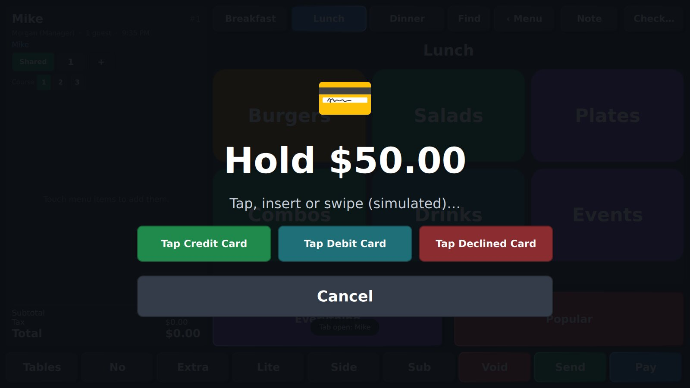
Card on File…: the card held, charged with the tip.

Three open tabs.
Log Out, breaks and your tips

Log Out: your clock status, open checks, tips owed and next shift.
Touching Log Out opens the End of shift screen; it doesn't log you out yet. Log Out on that screen does.
- Start / End Break starts or ends a break. Clocking out ends a break too.
- Cash Out My Tips pays you the card tips you're owed, after any tip-outs to bussers and the bar.
- My Bank… is where you check out your cash at the end of the shift (chapter 10).
- Your next shift from the schedule is shown under your name.
- Labels… opens the Labels screen to print shelf, price and cigar labels, on any screen, phones and tablets too. No manager is needed (chapter 26, Labels from any screen).
- Find a Tablet… makes a tablet left lying around beep until it's found (chapter 14, Find a tablet). Anyone can use it.
3. The floor: tables, takeout and open checks
The floor plan. Green tables are yours, amber ones are other servers'.
The store comes with four floor plans, with tabs across the top to switch: Main (every table, with the walls, doors and the patio), Dining Area, Bar and Patio (each room on its own, bigger). A table on two plans is the same table: T1 open on Main shows open on Dining Area too, and touching it on either opens the same check. Each job (or each person) can start on the plan they work (chapter 2, Each person's own screen).
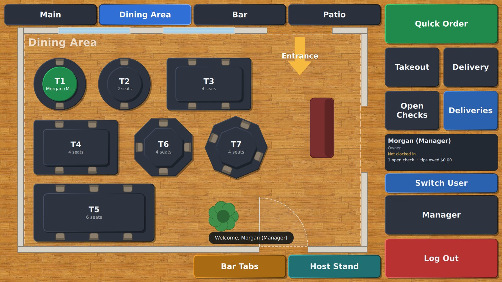
Dining Area |
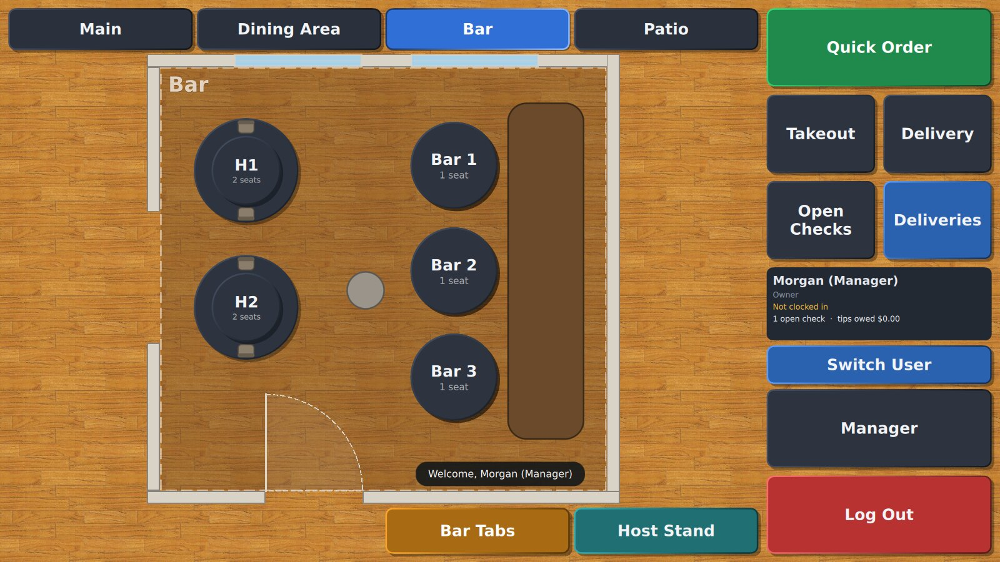
Bar |
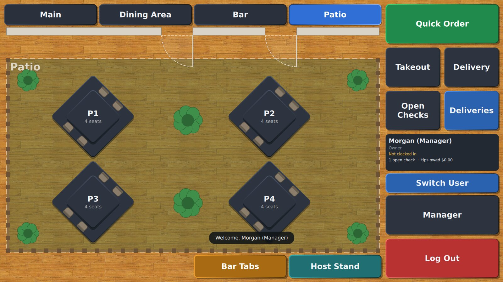
Patio |
- A table: touch it to start a check there, or to open its check if it has one. The table shows the check's total once it's open.
- Nudges: a table that needs a look says so, with ⏰: Nothing ordered · 9m (seated 8 minutes or more and nothing sent yet), or Last order 30m ago (25 minutes since anything was sent, and the check not printed yet: time for dessert, or the check). Printing the check or taking a payment clears it.
- Often added: under the check, up to three items that usually go with what's on it, from the last four weeks' checks (Often added: + Fries + Soda). Touch one to order it, like its menu button. It's only a hint: nothing pops up, and it learns as sales add up. Sold-out items aren't offered.
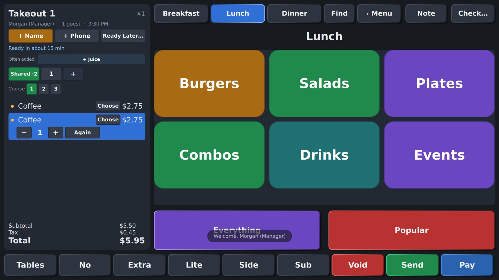
- Regulars: when the guest is on file (picked from the list, or seated from the waitlist with their phone number), ★ Regular · 7 visits · Allergic to nuts shows under the check: how often they've come, and their note from Customers.
- Quick Order: a counter sale with no table.
- Takeout / Delivery: opens the menu right away. The check has + Name, + Phone (and + Address for a delivery) and Ready Later… at the top: touch one, type, Save. Typing three digits of a phone number (or letters of a name) shows regulars who match; touch one and their name, phone and address fill in. Name and address stay amber until they're filled.
- Same as Last Time: when the customer is a regular (picked from the list), a button shows their last order, like Same as Last Time: 2 × Coffee, Water. One touch puts it on the check, at today's prices; anything sold out is left off, and it says so.
- Ready in about 20 min: under the name, what to tell the caller. It starts from the usual time (Store Settings → Takeout is usually ready in, Deliveries usually arrive in) and adds a few minutes for each order the kitchen is still making. At Send it becomes the promise, Promised for 6:45 PM, which the Deliveries screen shows too.
- A name before Send: Store Settings → Phone orders need a name before Send stops a takeout without a name (or a delivery without an address) from going to the kitchen. Each person (Employees) and each screen (Terminals) can say otherwise; the screen's setting wins, then the person's, then the store's.
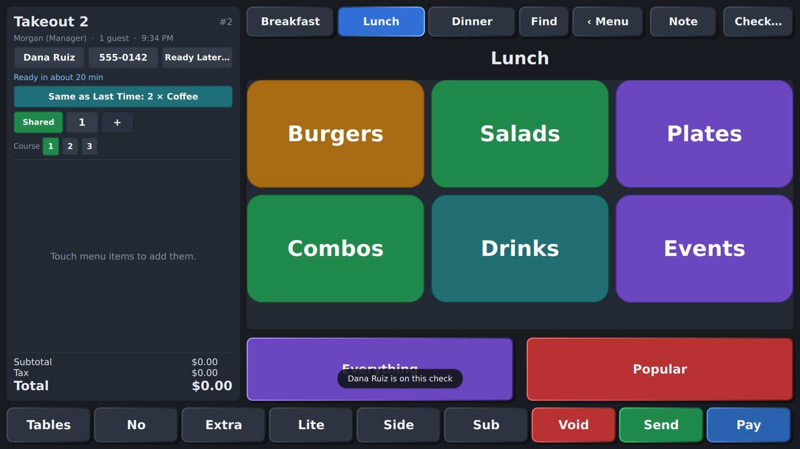
- Open Checks: your open checks (and, for whoever takes payments, the kiosk's orders waiting at the counter); touch one to open it. All Checks shows everyone's: someone else's is dimmed with a 🔒, and opening it asks for a manager's PIN. Managers and cashiers can open anyone's; give anyone else that with Manager → Employees → Open other people's checks. A driver can open the deliveries they're carrying. Past receipts are on the Retail screen's Reprint Receipt (Look Up Checks, chapter 19).
- 🏷️ Retail Mode (on Tables and Open checks) goes back to the Retail screen.
- Host Stand: seating, table states, the waitlist and reservations (chapter 8).

How many guests? Type the number (or use − and +), then Start Order.
Tables of 6 or more get the party gratuity automatically (18% to start; Store Settings).
A table's name is 1 to 40 characters, with no spaces at the start or end. A longer or empty name isn't taken.
4. Taking an order

The order screen: the check on the left, the menu on the right, the order bar at the bottom.
The tabs at the top switch between the Breakfast, Lunch and Dinner menus. The menu that fits the time of day opens by itself. Touch a category (Burgers, Salads, Drinks) to see its items, and touch an item to add it to the check.
In a store with a Retail screen, 🏷️ Retail Mode above the check goes back to it (not on phones).

An item page. Touch an item to add it.
Choices for an item
Some items ask for choices on the Choose page beside the check. A burger asks how it's cooked and for a side (onion rings and sweet potato fries cost extra).

A burger's choices: Temperature (choose 1) and Side (choose 1).
Other items ask for a dressing (choose 1), a protein (optional, priced), fillings (up to 3), a drink size… The groups and their options are set in Manager → Modifier Groups (chapter 11), and the self-order kiosk asks for the same choices.

The Choose page. Required choices must be made before Done; Cancel Item takes off what was just added. Touching Choose on an item already on the check changes it: Cancel Changes puts its choices back and leaves it on the check.
An item still missing a required choice can't be sent. Its amber Choose button on the check reopens its choices.
No, Extra, Lite, Side
No, Lite, Extra, Side and Sub along the bottom change how something is made. Touch one (it lights up and says what it's waiting for), then the thing it's for:
- No onion on the burger: touch the burger on the check, then No. Its choices open by themselves; touch Onion. The burger now says No Onion (in red on the Choose page), and so does the kitchen ticket. No and Lite are free.
- Faster: hold a choice. On the Choose page, hold any choice for a moment: No, Lite, Extra or On the Side. Touching it again the same way takes it off; another way changes it (Extra Bacon becomes Lite Bacon).
- Extra costs more: Store Settings → Extra: percent added (50 = half again) and/or Extra: amount added (e.g. $0.75, even on a free choice). Extra then a whole item (not a choice) is a bigger portion at that price.
- Sub swaps a side: Sub, then House Salad or Caesar, in place of the fries, at its substitute price (Manager → Menu → Can be a substitute).
- A "No" doesn't count as the choice: No Fries on a burger still needs a side.
The demo burgers have a Toppings group to try it on: lettuce, tomato, onion, pickles and mayo come on it; cheese, bacon, avocado and jalapeños cost extra.
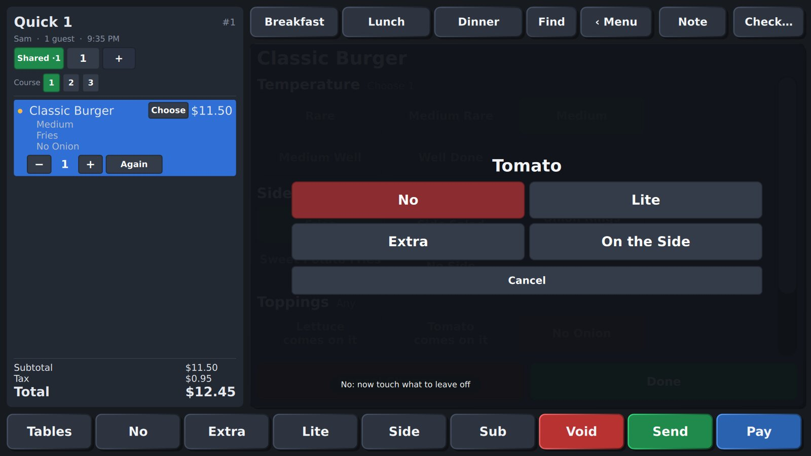
Hold a choice: how to have it |
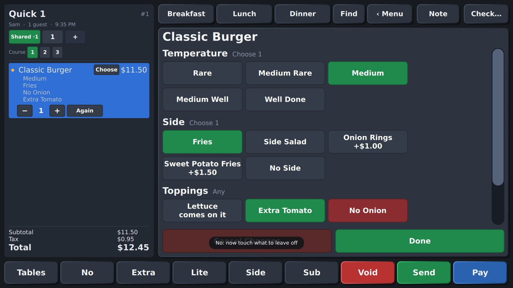
No Onion, Extra Tomato |
Seats and courses

Seat and course controls at the top of the check. The Caesar is for seat 2, course 2, and held.
- Seat − / + sets the seat for the next items. Touch an item first to move it to another seat. The kitchen sees "S2".
- Course 1 2 3 sets the course. Send sends course 1; later courses wait, marked HOLD, until you touch Fire Course 2.
Notes for the kitchen

Note: type a note ("no pickles") and Add Note.
Send, Void and Pay
- Send sends new items to the kitchen and bar (their screens and printers). Items rung on the Retail screen are handed over at the counter: they never go to a kitchen printer or screen. Retail items (a cigar, say) rung on a bar or table check go to the humidor printer or Humidor station when the store has one, and otherwise nowhere, never the kitchen (chapter 9).
- Void removes the selected item. An item not sent yet just comes off. Voiding a sent item asks why (below), needs permission (managers), prints a VOID ticket and is kept in the audit report.
- Pay goes to the payment screen (chapter 6). It lists the check's items, with each tax on its own line (Food tax, Alcohol tax, Merchandise tax, Room tax). Tables puts the check away.
Why? Voids and comps
Voiding something already sent, or a discount or comp, first asks why: one touch on a reason (Took too long, Guest didn't like it…), then the manager's PIN if one is needed. Cancel leaves it as it was. The reason goes on the check's history, and Reports → Exceptions adds them up.
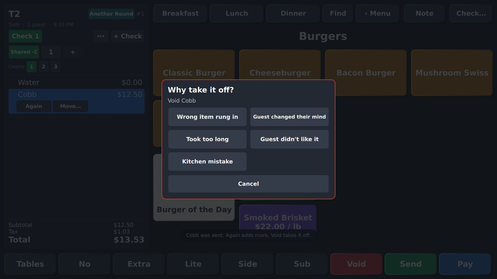
The lists, and whether to ask at all, are in Store Settings → Voids, comps, No Sale and Cancel Sale; each person can be set otherwise (Employees → Asked why on voids and comps).
5. Check options
Touch Check… (top right of the order screen).
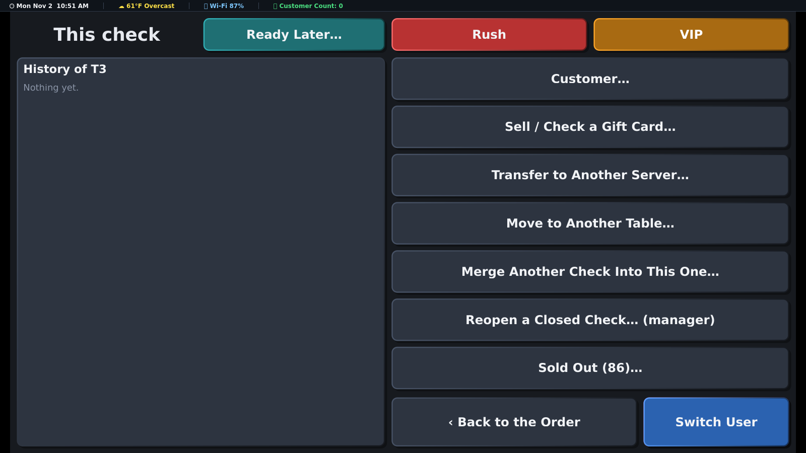
Check Options, with the check's history on the left.
| Button | What it does |
|---|
| Rush | The kitchen does this check first: its tickets jump to the front with a red frame, and printed tickets say RUSH. Touch again to turn it off. |
| VIP | A gold frame in the kitchen, for extra care. |
| Customer… | Find a customer or put one on the check (chapter 7). |
| Sell / Check a Gift Card… | Sell, reload or check a gift card. |
| Transfer to Another Server… | Give the check to someone else. |
| Move to Another Table… | The party moved. |
| Merge Another Check Into This One… | Two tables joined: items, payments and guests come along. |
| Reopen a Closed Check… | Managers: reopen a check closed today (to fix a mistake or refund). |
| Sold Out (86)… | Mark items sold out, or back. |
Servers can transfer, move and merge their own checks; managers can do it to anyone's. Everything is recorded in the check's history.

Transfer |

Move to a table |

Merge |
Split a check

Split Check (on the payment screen): touch an item, then the check it moves to, or + New check.
- One at a time: on a line like "2 × Cheeseburger", each touch of a check moves one of them. Touch All 2 first to move the whole line.
- Share This Item…: cuts an item into even pieces (a $30 bottle of wine 3 ways: three $10 pieces, "Wine (1/3)"…). Move each piece to its check. The kitchen makes it once. Put Back Together makes it whole again.
- Split Evenly…: the check becomes 2 to 9 checks of the same amount. Whole items go around first; what's left is shared in pieces. Any leftover cent goes on one check.
Reprinting a receipt: which copy
On Look Up Checks (Retail → CASHIER DUTY → LOOK UP CHECKS), touch the receipt, then Reprint…. It asks which copy:
- Customer copy (no date of birth): the usual receipt.
- Gift receipt (no prices): each price and the total print as
*****.
- With date of birth (store's copy): only when an ID was scanned on the check. It needs a manager when Store Settings → Receipts → Reprint with date of birth: manager only is on (it is to start). The check's history says Reprinted with the date of birth.
More on receipts in chapter 29, Receipts, receipt barcodes and check numbers.
Who rang it, who took it
In Find a Check, each line of a check shows rung by <name> <time>, and each payment taken by <name> <time>. This is kept for checks rung after November 7, 2026; older checks don't have it (chapter 12).
6. Paying and closing a check
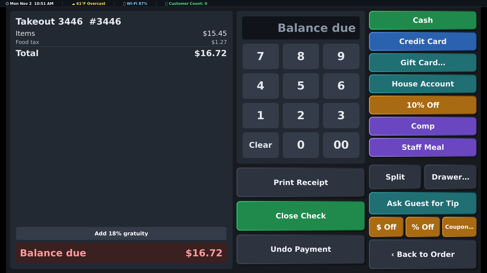
The payment (Settle) screen.
The check's items are on the left, in the Order summary: the items, their choices, voids and the totals, with each tax on its own line. Nothing can be changed there; go back to the order for that. The payment panel and keypad are to its right.
- Type an amount on the keypad, or leave it empty to pay the whole balance.
- Touch how they pay: Cash (gives change), Credit Card, Gift Card…, House Account, or a discount (10% Off, Comp).
- For a card tip, touch 15%, 18% or 20%, or type an amount.
- Touch Close Check. Print Receipt prints one; Undo Payment takes the selected payment off.
- Ask Guest for Tip shows tip choices on the customer display (below).
- Add 18% gratuity adds the party gratuity by hand.
- Promotions (Happy Hour…) and rewards appear as discounts by name.
- A closed check keeps the tax rates it was closed with. Reprints, refunds and reports of an old check show the tax actually charged, even after a tax rate changes.
The customer display
A second screen facing the guest shows their order as it's rung up, the total, tip choices and a thank-you. The whole guest screen is in chapter 24, The guest screen.

Between guests: your messages, pictures and videos in turn. |

The order, with their rewards. |

Tip choices, a custom amount, or no tip. |

Thank you, change, points, and a receipt choice. |
- Between guests: each message shows for 7 seconds, each picture for 10, and videos play to the end. During a sale the order is in the left third.
- Guests can join rewards by touching Earn rewards. First the Your privacy notice comes up with Accept / No Thanks, then the phone keypad, then ✉ Touch to add your email for offers. Only their first name (or the last four digits) is shown, never the number.
- The tip they choose goes on their card payment.
- After paying they choose Print receipt, Text me (when texting is set up) or No receipt.
- Turning it on: Manager → Terminals → the register → Customer display: Off (the second monitor mirrors the first) or On: the second monitor faces the guest. Changing it restarts ViewTouch on that screen.
- Its look and messages: Store Settings → Customer display: the color, the picture on the left side between guests (or a video there instead), and Customer display: between guests with + Add a message and + Add a picture or video (pictures and videos are picked by touch from Dropbox; chapter 24).
Card readers (Stripe)
There are two ways to take cards with Stripe: a reader beside the register (any register: a Linux touch screen, a tablet), run from the store's computer, or ViewTouch running on a Stripe Reader S700 as a handheld.
A reader beside the register
A Stripe S700 or WisePOS E sits on the counter next to the register, on the store's Wi-Fi or network. Touch Credit Card on the Pay screen: the amount appears on the reader, the guest taps, inserts or swipes, and the payment lands on the check with the card. The reader runs Stripe's own software; nothing is installed on it, and nothing needs Stripe's app review.
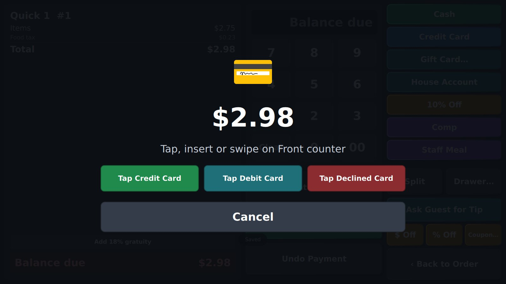
Waiting for the card on the reader beside the register (in Stripe test mode, with test-card buttons).
- Manager → Store Settings → Stripe secret key (see below).
- Manager → Terminals → Card Readers… → + Add: on the reader, swipe in from the left edge → Settings → Generate pairing code, type the code and a name ("Front counter"), Save. The first time, Stripe also needs the store's street address. It shows up in the list when Stripe has paired it.
- Manager → Terminals → the register → Card reader: Reader beside it: Front counter.
- Cancel clears the reader. While the card is being read it says to wait a moment.
- Declined, or the guest pressing cancel on the reader: nothing goes on the check, and it says why.
- The store's computer follows the payment with Stripe, so a register that drops off the network loses nothing: the approved card still goes on the check.
- Tips: Store Settings → Card tips are asked on: the customer display (Ask Guest for Tip), or the reader's own screen (turn on tipping in the Stripe Dashboard → Terminal → Configurations). With tips on the reader, a store can do without a customer display; the display still shows the order as it's rung, rewards sign-up and the receipt choice.
- Try it without a reader: with a Stripe test key, pair the code
simulated-wpe: a simulated reader. The waiting screen then has Tap Test Card and Tap Declined Card.
ViewTouch on the reader
ViewTouch can also take cards itself on a Stripe Reader S700: the ViewTouch app runs on the reader (Stripe calls this Apps on Devices), and when you touch Credit Card on the Pay screen, Stripe's own payment screen asks the guest to tap, insert or swipe. The amount (with the tip the guest chose) goes to the reader; when the card is approved, the check shows it, like Credit Card · Visa •••• 4242, and so does the receipt with Stripe's payment number. ViewTouch never sees the card number.
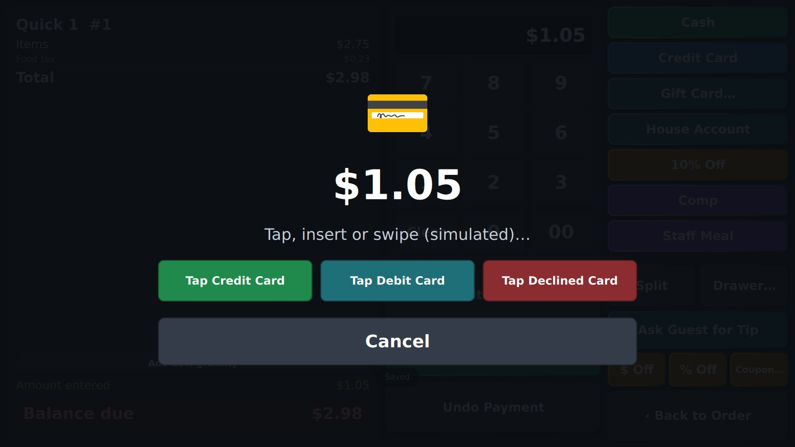
Taking a card (here the simulated reader, for practice): the amount, and Cancel.
- Declined or canceled: nothing goes on the check; it says why. Try again or take another payment.
- Undo Payment on a card from the reader refunds it through Stripe first; the payment comes off the check when Stripe confirms ("refunding…" until then).
- Setting it up:
- Ask Stripe to turn on Apps on Devices for your account (Stripe support, or your sales contact).
- Manager → Store Settings → Stripe secret key: paste your secret key from the Stripe Dashboard (Developers → API keys). It stays on the store's computer; it's never shown again (only its last four), and readers only get short-lived tokens from it.
- Install ViewTouch on the reader (through Stripe: a DevKit for testing, then Stripe's app review and deployment for your readers) and pair it with the store like any tablet.
- Manager → Terminals → that reader → Card reader: Stripe smart reader (this device).
- Practice: Card reader: Simulated on any screen approves cards after a moment (amounts ending in 05 cents are declined), to train staff without a reader.
7. Customers, gift cards, house accounts and rewards
Customers
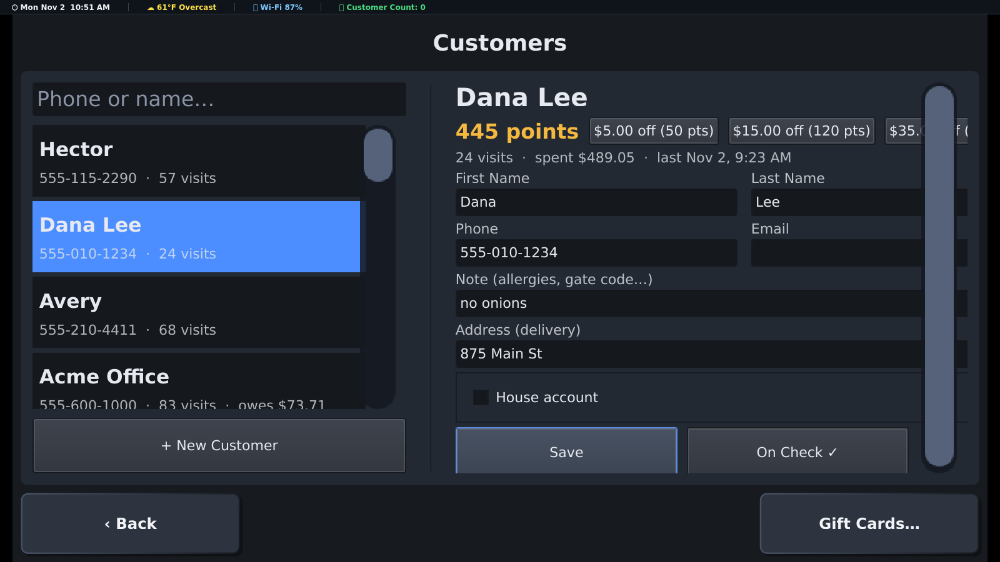
Customers: find by any part of the phone number or the name.
- Each customer has their phone, email, address, a note ("peanut allergy"), visits, total spent and last visit.
- Put on This Check attaches them to the open check, and they earn points when it's paid.
- Takeout and delivery customers are saved by themselves, and the takeout form suggests regulars as you type.
- Forget This Customer… (managers; touch twice): when a guest asks for their information to be deleted (privacy laws such as California's). Their record goes, and their name, phone, address, email and note come off every check and waitlist entry, on every day, on the store's computer and the standby. The sales stay, with no name on them. Not while they owe on a house account. Older backups still hold it until they're replaced; say so in your privacy notice. The screen doesn't wait: today's checks are cleared at once, older days are gone through in the background, and a message then says how many checks it cleared.
- The same customer twice? Saving a new customer whose phone, email or full name matches one on file (or changing a customer to someone else's phone or email) asks first: … looks like a customer you already have. What would you like to do? It lists the matches and why, with Use This One, Update It, Save as New Customer and Cancel. Nothing is merged without asking.
- Print Privacy Notice (anyone) prints the store's full privacy notice for a guest who asks (chapter 11).
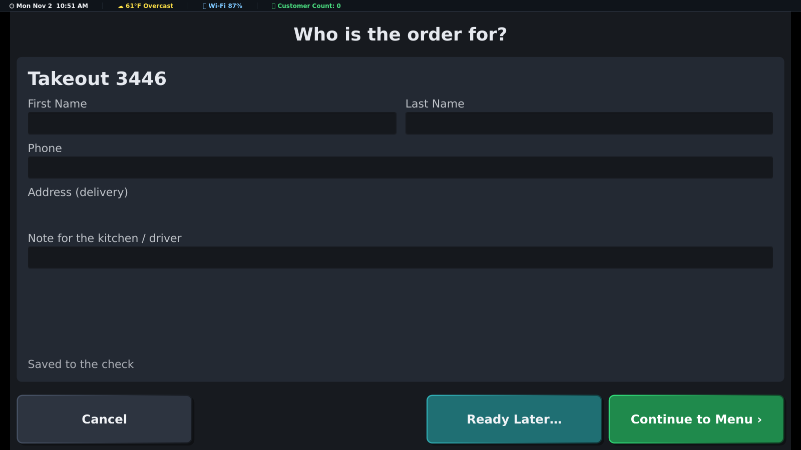
Takeout: who the order is for.
Rewards (loyalty)
- Customers earn points on what they spend (1 point per dollar to start).
- Rewards take money off: 50 points = $5, 120 = $15, 250 = $35 in the demo. On the Customers screen, with the customer on the check, touch a reward button.
- Undoing the reward gives the points back; reopening a check takes its points back.
Gift cards
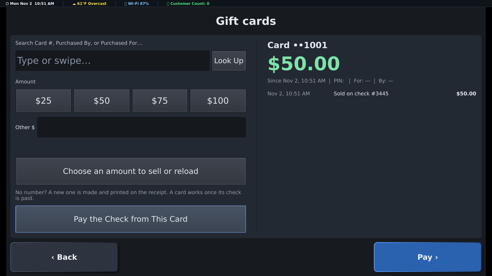
Gift cards: type or swipe the number to see the balance and history.
- Sell or Reload: choose an amount; the card goes on the check and works once that check is paid. No number? One is made up and printed on the receipt.
- Pay the Check from This Card takes as much as the card holds. It sits alone at the bottom, in the middle (or Add Customer… / Bypass & Pay Now there). Transfer / Replace Card… and Cash Out are under the balance.
- Cash Out: some states make a small balance redeemable in cash when the guest asks (California: under $10). With the store's state chosen (Store Settings → Staff hours), the button shows for such a card; the cash comes out of the drawer (or your bank) as a recorded pay out, and the card is empty. Gift cards never expire.
Who bought it, who it's for, and where
- Purchased By is the customer on the check. With no customer on it, Sell asks: Add Customer… or Sell Without Customer.
- Purchased For (Optional: who it's for) is typed on the Gift Card screen.
- Every sale and reload records where it happened: Store Settings → The store → Gift card location (for example "Hat City Ale House"; empty means the store's name). The card's history says Sold on check #12 at that place, and the Gift Card screen shows Issued at:.
- The search box finds a card by its number, Purchased By or Purchased For.
- Cards imported from PatronPal keep their old Purchased By and Issued To names.
Card numbers and subscription cards
- Card numbers starting with 6 are gift cards; numbers starting with 9 are subscription cards.
- A new 12-digit card number must pass its check digit, so a mistyped number is caught. A number made up for a card sold without one is 6, ten random digits and a check digit.
- A new subscription card can't be sold without its customer on the check: Subscription card: put its customer on the check first (Customers…). The card is then linked to that customer, and showing it on a later check puts that customer on the check (for subscription promotions, chapter 11).
Moving a balance to a new card (managers)
- On the Gift Card screen, look up the old card and touch Transfer / Replace Card… beside the balance.
- Choose or swipe the new card.
- Touch Move Balance (Manager).
The whole balance moves (up to $2,000), with the PIN, the kind of card and the names. The old card is closed for good: it can't be paid with or reloaded. Both cards' history shows the move.
Gift card PINs
Only managers see a card's PIN. Everyone else sees ••••, the search doesn't match PINs for them, and the gift card reports print •••• in the PIN column.
First and last names
Customer records in Manager → Customers and Check Options → Customer use separate First Name and Last Name fields, with their visits and spending added up.
The Gift Cards report
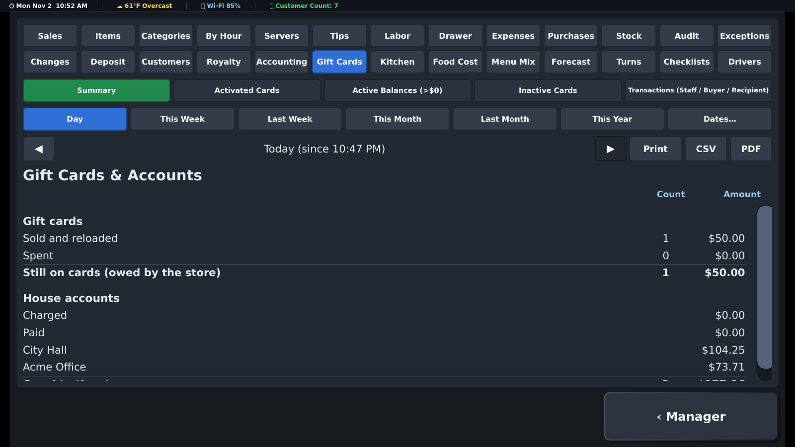
Reports → Gift Cards: 8-column report with Summary, Activated, Active Balances, Inactive, and Transactions views.
In Manager → Reports → Gift Cards, the report provides five dedicated views—Summary, Activated, Active Balances, Inactive, and Transactions—and its card lists have eight columns: Card #, PIN (for managers only), First Name, Last Name, Purchased By (Customer), Sold By, Status / Date and Balance.
House accounts
A manager turns on a house account for a customer (with an optional limit). Put the customer on the check, then touch House Account on the payment screen. Payments on the account (cash or card) are taken on the Customers screen.
8. The host stand: waitlist and reservations
Seating
Host Stand on the Tables page opens the seating screen. Hosts start on it when they log in.
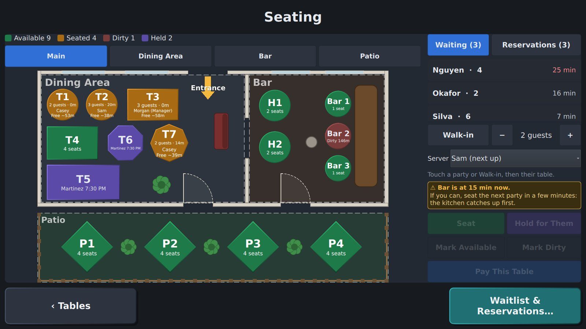
Green: available. Amber: seated. Red: dirty. Purple: held for a party.
The tables are shown on the floor plan, where they really are, with the walls, doors and bar around them. Tabs across the top show Main or one room bigger (Dining Area, Bar, Patio); the screen remembers the last one. On a phone, or for a closer look, spread two fingers to zoom in (up to 3 times) and drag the plan around.
- Seat a party: touch them in Waiting or Reservations (or Walk-in, with − / + for how many), touch their table, then Seat.
- Who gets the table: the Server list starts on whoever is (next up): of the servers on the clock, the one with the fewest guests seated right now, and if that's a tie, the one seated longest ago. Pick someone else if you like; the next party starts on next-up again.
- When tables free up: each seated table says about when, Free ~15m, from where it is (still ordering, eating, check printed, paying) and how long parties that size stayed today (early in the day, the usual: about 50 minutes for 1–2, 65 for 3–4, 80 for more). Paying: free soon means a payment is on it. Tell the waitlist with confidence.
- Regulars: a party whose phone number is on file (Customers), however it's written, shows ★ Regular · 7 visits and their note (allergies, a favorite booth) on the waitlist (on the host stand, a ★ after their name, and the note), and their server sees it on the check.
- A big party: touch several tables to push them together. It shows the seats against the party size. The check opens on the first table; the others show with T5.
- Hold tables for a reservation: touch the party, their tables, then Hold for Them. Nobody else can be seated there. Touch the party when they arrive and their tables are picked again; Seat.
- Taking a table's payment when its server is busy: with Store Settings → Waitlist → Hosts take payments at the host stand on, touch the seated table, then Pay This Table: its check opens on the Pay screen, and after it's paid the host is back at the host stand. (Several checks at the table: pick one.) Hosts can then open any check to take its payment; in Manager → Employees, turn it off for one host, or on for just one.
- Bussing: when a table's check closes, it turns red by itself (and so do tables pushed together with it). Touch it, then Mark Available when it's clean. Mark Dirty marks one by hand.
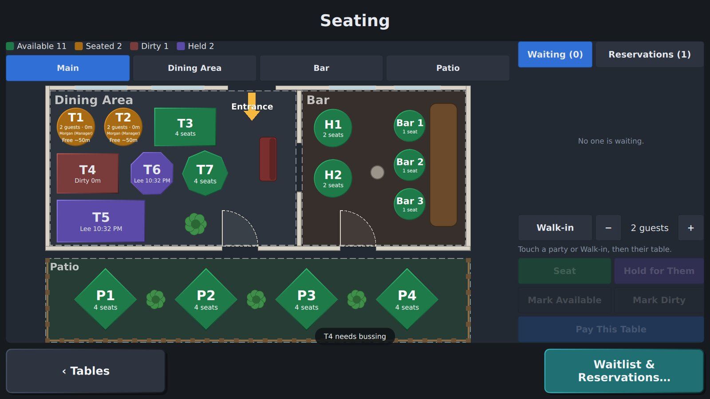
Free ~45m on each seated table; Rosa is next up; Dana ★ is a regular, with her note.
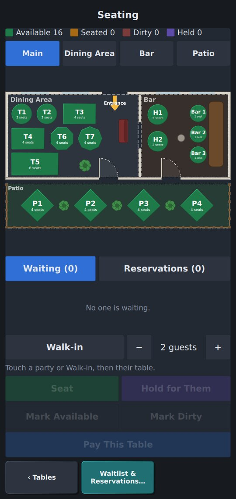 |
On a phone, the tables are on top and the parties below.
Held and dirty tables show on the floor plan too. |
The waitlist

Waitlist on the left; add a party on the right.
- Add to the waitlist: name, phone, party size, a note. The quote (minutes) is worked out for you; change it with −5 / +5. Waits past the quote turn red.
- Table Ready: Notify texts the guest (when texting is set up), or reminds you to tell them.
- Seat Them… lists the free tables, the smallest that fits first. Pick the server and the table: the table's check opens for that server with the party size and name.
- Reservations: book today or up to six days ahead, or touch Another day… for a day further off on the calendar. The time is picked on the time picker (chapter 2, Choosing a date). They're Here puts them at the front of the line; No-Show or Cancel Booking takes them off.

Seating a party of 4: 4-seat tables first, smaller ones dimmed.
9. Kitchen, bar and expo screens

The kitchen screen: one ticket per Send, oldest first.
- Touch a ticket when it's ready (bump). Recall brings back the last one.
- Tickets turn yellow, then red when late (8 and 15 minutes to start; Store Settings).
- Rush tickets come first with a red frame; VIP ones have a gold frame.
- Each station sees only its own items: the bar screen shows drinks, the kitchen food.
- Items can show a shorter kitchen name ("BCN BGR") and a highlight color, and some items (water, "No side") aren't shown at all (chapter 11).
- Long orders continue: tickets fill columns as tall as the screen, oldest on the left, small ones stacked. An order too long for the room left goes on in the next column on a card of its own, marked T5 2/3, with Continued ▸ at the bottom of each card before the last. The guest's allergies are on every card. Touching any of its cards bumps the whole order.
- More than fit: swipe the tickets sideways. 2 more ▸ in the corner says how many orders are past the right edge; touch it to go there.
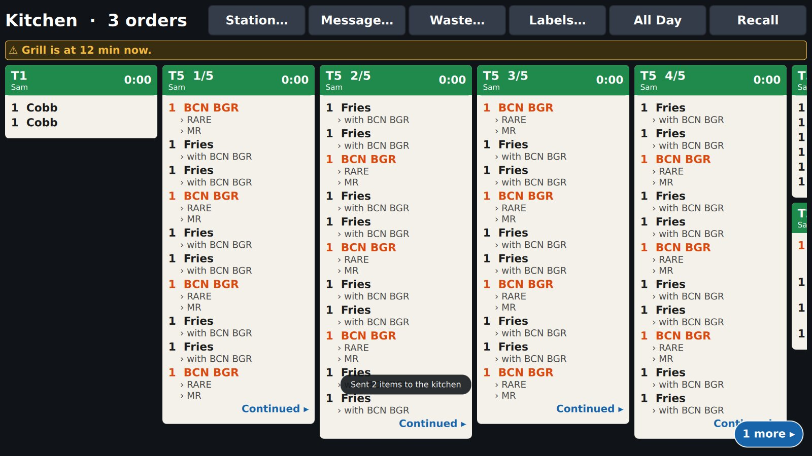
A party of twenty on four cards (T5 1/4 to 4/4).

All Day: everything still to make, by item, for batching.

The bar screen. |

The expo screen. |
Expo (the expediter)
- Every ticket from the kitchen's stations. Each line gets a ✓ when its station bumps it, and the card says what it's still waiting on ("Waiting on: Grill").
- No drinks: drinks go out from the bar, so expo doesn't show them. A ticket of only drinks never reaches expo, and running a ticket out leaves its drinks on the bar's screen. Store Settings → Kitchen → Expo doesn't show lists what's left out (Bar to start); add a station or printer by name, or remove Bar to see everything.
- When everything is made the ticket turns blue: READY. Touch it when it goes out to the table. A ticket that isn't ready needs a second touch.
Kitchen, bar and expo screens need no login. Open them from the Manager screen, or set a screen to start on them.
The kitchen screen also has Waste… (log what was thrown away) and Labels… (print prep labels), both chapter 11. Nobody needs to log in: they're signed by the screen.
A kitchen screen can only be set to one of the store's stations (Store Settings → Kitchen stations). A line sent to a station that has no printer prints no ticket; it doesn't go to the kitchen printer instead.
The humidor runner
A retail item (a cigar, a single from a box, or anything taxed as Merchandise) rung on a bar or table check goes to:
- a printer named "humidor" (or with the id humidor), or
- a kitchen station named Humidor (Store Settings → Kitchen stations), on its screen.
With neither, it prints nowhere and shows on no screen: it never goes to the kitchen. Where it goes is decided when it's rung in. Items rung on the Retail screen are handed over at the counter and go nowhere.
10. Cash: banks, drawers and tips

The drawer screen.
Server banks (the starter setting)
- Each person keeps the cash they take in their own bank, on any screen. The bank starts at the first cash sale. To start with change, type the amount on the Drawer page and touch Start Bank.
- At the end of the shift: Log Out → My Bank… and touch Check Out, then count your cash bill by bill (below). It shows the cash to turn in and whether you're over or short.
- Close or hand over your open checks first (unless the store turned this rule off).
A drawer per screen
Stores can choose a cash drawer per screen instead (Store Settings → Cash handling), or per person (Employees). A manager starts the drawer with a starting amount and counts it at the end.
Counting the cash
Touch Count Drawer (or Check Out for a bank) with nothing typed, and the count sheet opens: a row for each bill and coin. Touch a row, type how many on its keypad, then Next ↓ for the next one. The total adds up as you go; Count Drawer finishes. The drawer screen and its printout list what was counted. (Typing the total on the keypad first still works.)
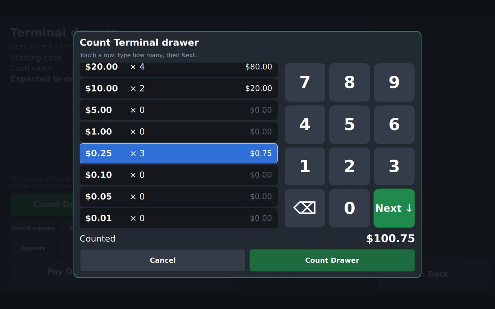 |
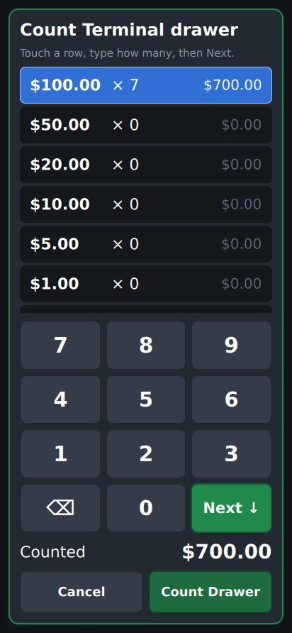 |
Counting by bills and coins, on a terminal and on a phone.
- Blind counts: Store Settings → Cash → Count drawers blind. Whoever counts doesn't see what should be in the drawer, before or after counting, nor whether it came out over or short; managers still do (the Drawer report shows it, marked blind). Each person can be set otherwise (Employees → Counting a drawer).
- Bills and coins (Store Settings → Cash): the store's list, largest first. $100 to 1¢ to start; for pesos, for example, 1000, 500, 200, 100, 50, 20, 10, 5, 2, 1, 0.50.
Pay outs, paid ins and No Sale
On the Drawer page a manager types the amount, touches Reason… (optional), then Pay Out or Paid In. A pay out is an expense: first touch what it was for (Food & supplies, Produce, Ice, Cleaning, Repairs, Other; Store Settings → Expense categories sets the list). Reports → Expenses adds them up.
No Sale
- Touch NO SALE (on the Retail screen, on Cashier Duty, or on the Drawer page).
- It asks Why open the drawer? Touch a reason (to start: Make Change, Forgot to put cash in, Retrieved Item, Other). Cancel keeps the drawer shut.
- The drawer opens, and a slip prints on the terminal's printer: ****No Sale****, the day's No Sale number, the drawer, who, why, the date and the time.
Managers: the reasons are in Store Settings → Voids, comps, No Sale and Cancel Sale → Reasons for No Sale. An empty list turns the question off. The Exceptions report has a No sale: why section.
Which printer opens the drawer
A cash drawer is plugged into a receipt printer, and the printer opens it. ViewTouch opens a drawer only when both of these are right:
- Manager → Terminals → the register → Receipts (and cash drawer) print on: the printer this register uses. Each printer in the list says has cash drawer or no cash drawer.
- Manager → Printers → that printer → Cash drawer is connected to this printer is on. Under it, the printer lists the terminals that use it for receipts and the cash drawer.
- A terminal never opens another printer's drawer instead. If its own printer has no drawer, nothing opens.
- Then that screen shows a red printer alert: No cash drawer on <printer> (Printers > Cash drawer is Off) — the drawer was not opened. It stays until it's fixed or the drawer opens. Store Check lists it too.
- No Sale is still recorded, and its slip still prints on the terminal's printer.
- In Terminals, when the chosen printer has no drawer, a note says This printer has no cash drawer, so cash sales and No Sale won't open one. Touch This printer has the drawer to turn its cash drawer on (it's saved and shows on the Changes report).
- Screens not listed in Terminals use the Receipt printer and its drawer, as before. Terminals with Cash drawer: No cash drawer (and server banks) don't open one at all.
Moving the register to a new printer (a USB one, say)? Turn on Cash drawer is connected to this printer for the new one, or the drawer won't open.
X Report: the day so far
An X report prints X REPORT on the receipt printer: today's Sales report and the Drawer report so far. Nothing resets; End of Day is still the Z. Anyone allowed to open the drawer can print it:
- Retail → CASHIER DUTY → X REPORT (print, nothing reset), or
- Reports (today) → X Report.
The Retail screen's CASHIER DUTY page also has the drawer, No Sale, past receipts, open checks and the time clock (chapter 19).
Tips
- Card tips are owed to the server; Cash Out My Tips pays them from the bank or drawer.
- Tip-outs (Store Settings): for example "busser 15 tips" and "bartender 2 sales". That share of each server's tips (or sales) is split among the bussers or bartenders who worked today, by hours.
- Managers are never in the tip pool or tip-outs (federal law; California Labor Code §351), even on a day they worked a server shift: they keep only the tips from their own tables. Card fees are never taken out of tips.
- A cash tip for the server: when a host, manager or cashier takes a table's payment and the guest leaves cash for the server, type the amount and touch Cash tip for the server on the Pay screen. It shows on the check (Cash tip for Sam); the cash stays in the drawer or bank of whoever took it, which then expects that much more, and it's owed to the server like a card tip (Cash Out My Tips, the Tips report and tip-outs all count it).
11. Manager screens
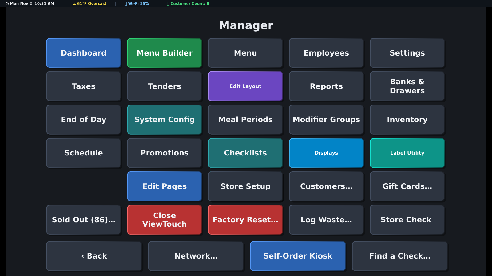
The Manager screen (PIN 1234).
Network… shows the store's computers and printers (chapter 18), and Self-Order Kiosk turns this screen into a kiosk for guests (chapter 16).
This edition's Manager screen also has System Config (opens Hardware Configuration), Label Utility (chapter 20), Store Setup and Displays (the kitchen, bar and expo screens). Hardware Configuration has Terminals, Printers, the tablet buttons, Learn guest touchscreen (2x Tap), Site Setup, Bluetooth scanner, Screen check and Billboards (chapter 30, Site Setup, Hardware Configuration and Screen check). A store whose Hardware Configuration or Reports page was edited gets these new buttons once, by itself.
Every Manager screen works the same way: the list on the left, the details on the right. Touch a record, change it, touch Save (or Undo changes). + Add makes a new one; Remove deletes it.
Building the menu (Menu Builder)
Manager → Menu Builder is the whole menu on one screen. The order screens fill themselves from it: a new item or category shows up on the registers, handhelds and the kiosk as soon as it's saved, with no page editing.
- Categories (left): + Category adds one: its name, its color, which meals it's on (Breakfast, Lunch, Dinner, or All day), and what new items in it start with (which kitchen ticket, where it's made, its tax). Hold one and drag it to move it (or ▲ ▼); that's the order of the buttons on the order screens. Edit Category changes the one chosen.
- Items (middle): the category's items as tiles. + Add Item, or touch an item to change it. Hold an item and drag it to another place: the order screens follow.
- The item's card (right): name, price, category, photo, sold out, on the kiosk or not. What's on it: type the ingredients it comes with, separated by commas (lettuce, tomato, onion, mayo); guests and staff can then have each No, Light, Extra or On the side. Choices it asks for: touch the choice groups it should ask for (Temperature, Side, Dressing…). Add to the Menu / Save are always at the bottom. More… opens every setting (kitchen name, prices by meal, takeout price, recipe…) in Manager → Menu.
- Add Several… (beside the category's name): type or paste a list, one per line or separated by commas, each with its price: Carne Asada 3.50, Al Pastor $3.25, Lengua 4,25. A line starting with a category's name and a colon puts what follows there, and makes the category if it's new: Drinks: Horchata 2.75, Agua Fresca 2.50. It shows what it will add before you touch Add.
- 🏷 Retail screen only (a category's switch): its items are sold on the Retail screen only (scanned or looked up) and left off the bar and restaurant menus and order screens. The ILSA price book's departments come in with it on (chapter 27).
- 🚫 No discounts (on an item, or on a category for all its items): discounts never come off those items, fixed-amount ones included (cigarettes, say). The receipt and the Pay screen show what each discount really took.
- Cigar size (retail items): Length (type 6 1/8, 6-1/8, 6.125, 6⅛ or ILSA's "6+"; it shows as 6 1/8), Ring gauge, and a second ring gauge for shapes like a 52/60 diadema. Labels can print them (chapter 20).
- Maker, Product group and Sub group (items) and a department group (categories): the Labels screen and the label utility use them to sort the tree.
- Import… (under the categories): a menu from a spreadsheet. In Excel, Google Sheets or LibreOffice, save it as CSV (File → Save As / Download → CSV) onto a USB stick or this computer, then choose it. A first row with column names is read by name: Name or Item, Price, Category or Section, Description, Ingredients (Spanish names work too); without one, the columns are name, price, category. Prices like $3.50 or 3,50 are fine. A Photo (or Foto) column names a picture file for each item, like fish-tacos.jpg: put the pictures in the same folder as the spreadsheet (on the USB stick too). Rows whose picture isn't there come in without one, and the preview says which. It shows what it will add, and which rows it leaves out and why, before Import; new categories are made, items already on the menu are skipped, or get the file's price if you turn that on.
Retail columns read too: Cost (the store's cost, never the price; the preview shows it beside the price), Barcode or UPC, More UPCs, Item #, Tax, Maker, Product group, Sub group, Prints to (blank: no printer), and the cigar sizes (Length, Ring gauge or RG, Ring gauge 2 or RG2). An 11-digit UPC also gets its 12-digit form. Importing again finds an item by its first UPC before its name. (The ILSA price book keeps itself up to date and needs no import: chapter 27.)
- Export: the whole menu as one file (in ViewTouch Exports, or the folder set for exports): its categories, choice groups and items with every setting. At another store, Import… that file: what that store doesn't have by name is added, with its choices; nothing it has changes. Photos go along in the file; sales counts and stock recipes stay with each store.
- Print… (beside Import… and Export): the menu with today's prices as a PDF, to print or hand out (in ViewTouch Exports). Type a title and a line under it (address, hours), choose 1 or 2 columns, Letter or A4, with or without pictures and descriptions, and which categories. The first page shows as it will print. Sizes print with their prices; sections from the Menu Builder print as small headings. Make a new one after prices change.
- Starter…: a Taqueria, Café, Burgers & Bar or Pizza menu: its categories, choice groups (salsas, sizes, milks, how it's cooked…) and items with typical prices and what's on them, added to your menu; nothing already on it changes. Then change the prices and names to yours.
- Duplicate (on an item's card) makes a copy right after it, with its choices and what's on it, named Fish Tacos 2: change its name and price and save.
- Choice Groups (the switch at the top left): every group of choices, how many items ask for it, and + Choice Group. A group has a name; how many guests pick (One, Up to…, Any number) and whether it's Required; whether guests can ask for a choice Light, Extra or On the side (dressings, toppings; not temperatures or sizes); and its options, a row each: name, what it adds to the price, and Comes on it for what's already on the item. ▲ ▼ reorder them, ✕ removes one, + Option adds one. It lists which items ask for it. + New Choice Group… on an item's card opens it too.
- ✓ Ready to go / ⚠ 3 to fix (top left) checks the menu for what would trip up service: an item with no price or category, a choice group it asks for that's gone, a kitchen printer that isn't set up, two items with the same name, a required choice group with too few options, a category on a meal period that isn't set up, and (as notes) empty categories. Touch one to go straight to it. Retail-only categories give two summary lines instead (how many $0.00 items, how many same-name items to look over), not a line per item.
- A big price book: only the open category's items (and what a search finds) are loaded, so the Menu Builder stays quick with 30,000 items. A second touch on Import…, Starter… or + Category closes what the first opened. A new item's card turns into the saved item when you save it.
- ↶ Undo (top left, under the check) takes back the last change: a removed item, a moved category, an import or a starter menu as a whole; again for the one before (up to 20). If the menu was changed elsewhere since (another screen, Manager → Menu), it says so and doesn't undo over that change.
- Touching another item, category or choice group with changes not saved asks Save, Don't Save or Keep Editing. + New Choice Group… on an item's card comes back to the item once the group is added, with it chosen (‹ item goes back without one). Prices can be typed 3.50, $3.50 or 3,50.
- Contains (an item's card): its allergens (gluten, dairy, egg, peanut, tree nuts, soy, fish, shellfish, sesame).
- Also a button on (an item's card, for stores with pages of buttons placed by hand, like a Happy Hour page): pick the page, Add Button. It goes in the page's next free place, sized and styled like its other item buttons.
- On a phone the Menu Builder shows one step at a time: categories, then items, then the card.
A store set up before the menu screens filled themselves sees a note at the top of the Menu Builder: its meal pages have category buttons placed by hand, so new items don't show up on them. Switch to Self-Filling replaces those buttons with the self-filling categories, where they were, and keeps everything else on the page; it opens the page editor to look them over, then Save (or Undo). Pages built by hand stay as pages of their own.
★ Favorite on an item's card puts it in the order screen's ★ Favorites, the first tab, together with today's best sellers (12 in all). The item buttons size themselves: as many columns as fit the category's items without scrolling, as big as they can be.
On the order screen, each meal's page shows its categories as buttons (Breakfast, Lunch, Dinner at the top); touching one shows its items, with a button for every category across the top. Everything shows the whole menu, Popular today's best sellers.
Menu items

| Field | Meaning |
|---|
| Name, Price, Family | The family groups items in reports (burgers, drinks…). |
| Tax | Food, alcohol, merchandise, room or no tax. |
| UPC (Primary Barcode), Alt UPC (Secondary Barcodes) | The barcodes as printed on the package; more than one Alt UPC separated by commas. Saved exactly as typed or scanned. Only two things are checked: a barcode is 4 to 40 letters and digits, and no other item has it. No check digit is added or tested. |
| Kitchen ticket goes to | The station: kitchen, bar… |
| Is a modifier | It attaches to the item before it (sides, temperatures). |
| Available | Untick when sold out (86). |
| Modifier groups | The choices it asks for, by group ID. |
| Prices by meal period | e.g. dinner = 14.50. |
| Takeout price, Delivery price | A different price on takeout or delivery checks (0 = the regular price). |
| No discounts, No staff discount | Discounts and comps leave it out; staff meals leave it out (alcohol, say). |
| Kitchen name, highlight, don't show | How it looks on the kitchen screen and tickets. |
| Recipe | What one uses up, e.g. bun 1, lettuce 0.5 (Inventory). |
| Not on the self-order kiosk | Guests can't order it on their own (alcohol never shows there). |
| Description, Photo | What guests see on the self-order kiosk: a line under the name, and an image file on the kiosk's computer. |
Modifier groups

A group is a set of choices: how many are required, and the most allowed (1 = pick one, 0 = any number). Options go one per line, with a price after + and the kitchen's name after |: Grilled Chicken + 4.00 | CHKN. Write | - to leave an option off kitchen tickets.
Employees

- A new person is saved from their First Name and Last Name.
- Name, role (server, bartender, cashier, host, busser, manager, admin) and a PIN of 4 to 8 digits; managers and admins 6 to 8, since they can do the most. Five wrong PINs in a row make a screen wait (30 seconds, then longer each time), and Store Check says someone may be guessing.
- Each permission can be As the role, Yes or No for one person: take orders, take payments, discounts, void sent items, manager screens, edit pages.
- Staff are deactivated, not deleted, so their sales and hours keep a name.
- Language: the screens switch to it when this person logs in (chapter 17).
- Pay rate (an hour, before tips) and Other jobs with their pay, one per line:
bartender 9.00. For the labor cost on Reports → Labor.
Store settings

The settings are in sections: touch one on the left (The store, Receipts, Cash, Staff hours, Tips, Kitchen, Cards, Loyalty, Self-order kiosk, Backups…) to see only its settings.
- Find a setting: type a word or two at the top (tip, receipt, kiosk color). The settings that have them show from every section, each with its section's name above it. Clear goes back to the sections.
- A setting that only matters when another is on shows once that one is on: …points per dollar and Rewards with Loyalty points, …clock in up to (minutes) early with the schedule rule, the offline limits with Take cards when the internet is down, the backup password with Encrypt backups.
- Made for fingers: numbers have big − and + keys (or touch the number and type it; 0 shows what it means, like Never or Not in it), on/off settings are switches, and lists are rows: tip-outs (Bussers · 15 · of tips), the tip pool (a row for each job in it, with its share), rewards, tip choices, checklists, kitchen stations, expense categories, the customer display's messages and the chart of accounts. + Add… adds a row, ✕ takes one out. The same goes for Menu Items, Employees, Payment Types and the other manager pages.
- The store's state (Staff hours): pick yours and its labor and gift card laws are set: daily overtime and double time (California: past 8 and 12 hours), California's seventh day in a row, when a meal break is due (California: by the 5th hour; the person is reminded at login half an hour before, Store Check shows who's late, and Reports → Labor lists late or missed meals, where California owes an hour's pay), and gift card balances to cash out. Federal overtime (past 40 hours a week) applies everywhere. Each can still be changed; these are the usual rules for restaurant staff, so check special cases with your accountant.
- Fees on receipts: an automatic gratuity says what it is and who gets it (For 6+ guests; goes to the server.), and the delivery fee says whether it goes to the driver (The delivery fee goes to the driver, off to start: Store's fee, not the driver's tip.). Put these charges on your menu too.
- About (the last section): the version the store runs (with its build number), this screen's own version (a tablet can lag behind until it updates), the store's computer, where its data is kept and how big it is, the last backup, Updates on this store (each version it has run and when it arrived) and Recent changes (what the latest versions changed), and the license. The version's last number is the build: it goes up by itself with every new build (0.9.1283, 0.9.1284…).
- What you change is marked changed, its section says how many, and the button says Save 2 changes. Nothing is kept until you touch it; Undo changes puts everything back. Leave the page without saving and your changes are still there when you come back.
New in this edition's Store Settings
- The store: Store address (street, then city, state and ZIP, one per line) and Store phone, printed on the Time Clock report (chapter 12); Gift card location (chapter 7), Store ZIP code (for weather) (chapter 21) and ILSA history store (for example BHDAN; chapter 28).
- Receipts: Free choices on receipts, Voids and error corrects on receipts, Customer on receipts, Print a barcode on receipts, Check prefix and Reprint with date of birth: manager only (below, and chapter 29).
- Privacy notice: Privacy notice on receipts, Short privacy notice (receipt and customer display) and Full privacy notice (below).
- Age-restricted sales: Minimum age for alcohol and Minimum age for tobacco (21 to start; chapter 23).
- Voids, comps, No Sale and Cancel Sale (it was "Voids and comps"): adds Reasons for No Sale and Reasons for Cancel Sale.
- Customer display: Customer display: left side between guests (a picture or animated GIF), Customer display: video there instead, and Customer display: between guests with + Add a message and + Add a picture or video, and a Sound switch for each video (chapter 24).
- Top status ribbon: its own section (chapter 21).
- Billboards… at the top of the Store Settings page (chapter 25, Billboards).
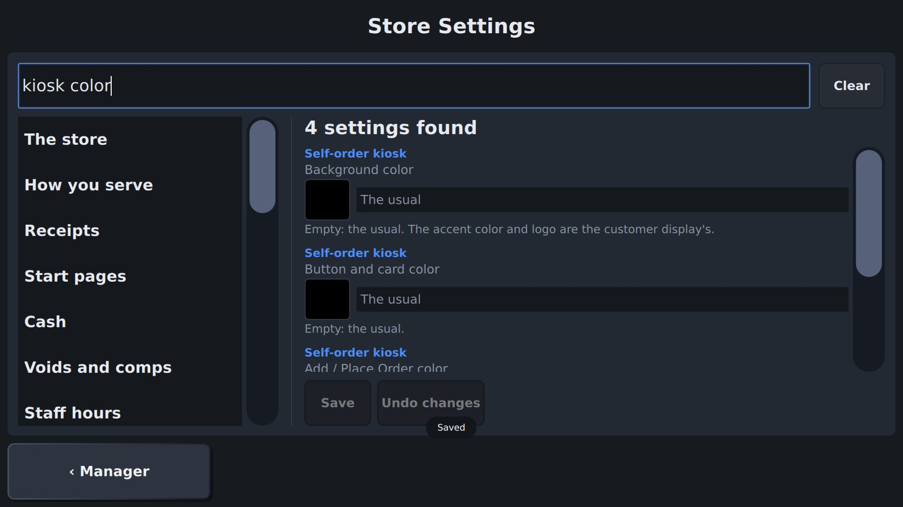
Find a setting |
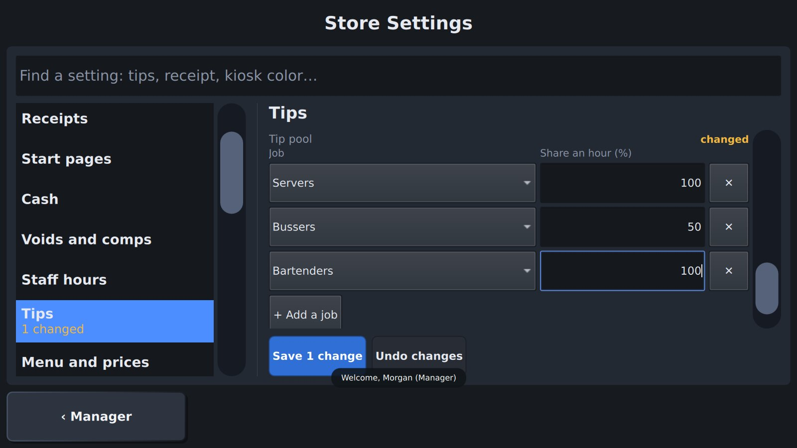
The tip pool: a row a job |
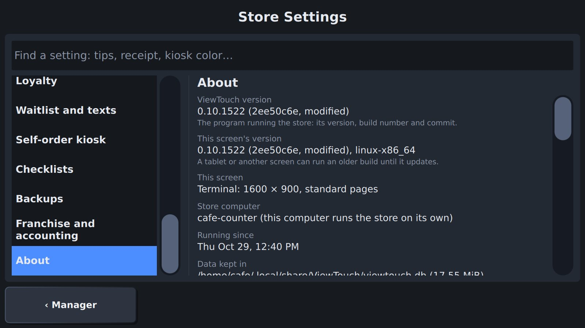
About |
Taxes, payment types, printers and terminals

Taxes |

Payment types |

Printers |
- Taxes also sets Cash rounding where pennies are gone: a check paid in cash is rounded to the nearest 5 (or 10) cents and shows a Cash rounding line; cards stay exact.
- Payment types: a discount can be a Staff meal (the demo has Staff Meal, 50%). Ring your meal, touch Staff Meal on the payment screen, and it records who ate; the Sales report counts staff meals.
- Printers: network (TCP 9100, ESC/POS), CUPS, or a text file for testing; label printers too (Format: ZPL or TSPL, and the label size). After saving a printer, touch Test Print: it prints your logo, text in each size, a sample item and total, and a row of digits that should exactly fill one line (if it wraps or falls short, change Characters per line), then cuts the paper. With a drawer wired to the printer, Test Print + Open Drawer also opens it. A message says when the printer took the page, or why it didn't.
A USB receipt printer on the store's Pi is a Text file printer: File or queue /dev/usb/lp0, Format ESC/POS (chapter 21).
Cash drawer is connected to this printer: turn it on only for the printer the drawer's cable is plugged into. Under it the printer lists the terminals that use it (chapter 10, Which printer opens the drawer).
- 86'd items come back the next day (on unless turned off): an item marked sold out during service (on the order screen or the sold-out list) is back after End of Day. Marked sold out in the Menu Builder, it stays so until changed there (for something out of season).
- Cards when the internet is down (Store Settings, off until turned on; Stripe readers running ViewTouch only): with Take cards when the internet is down, the reader keeps a card it can't send and sends it to Stripe when the internet is back, up to the amount a card and the amount waiting in all that you set. The check shows it as taken offline; it can't be refunded until Stripe has it. The bank only sees it then: if it's declined, the store doesn't get that money, and managers see a red alert with the check and the amount until they touch OK. A reader beside the register driven by this computer (not running ViewTouch) can't take cards offline: Stripe needs the internet for those.
- Receipts while the internet is down: a printed receipt prints as usual, with Approval pending (taken offline) under the card (once it's declined: Declined once sent: not paid), so the guest can leave. An emailed receipt is kept with the check and Stripe sends it as soon as every card on the check has reached Stripe (and, with the internet down, it's tried again every couple of minutes until it goes). A texted receipt or message that can't go out waits and is tried again every minute, for up to a day.
- Updating the tablets: Manager → Network shows the build each screen runs and which need an update. Copy the new tablet app (ViewTouch-b…-arm64-v8a.apk) into the updates folder it names on the store's computer; then, on a tablet that's behind, a manager touches Update Now on the strip at the bottom, and Android asks to install it (the first time, allow ViewTouch to install apps, then Install).
- Allergies: on the order screen, Check… → Allergy…, touch what the guest is allergic to. Items that contain it get a red border and a ⚠ label on the menu, adding one warns, and the kitchen ticket starts with !! ALLERGY !! and marks each item that has it (!! CONTAINS EGG); the kitchen screen shows the same in red. On the kiosk, each dish says what it contains, guests can touch Allergies to hide dishes with what they avoid, and the kitchen sees that as an allergy too.
- Terminals → Start orders on: a category orders opened on that screen start on (the bar's: Drinks); ‹ Menu still shows the meal's categories.
- Terminals: each screen's receipt printer (Receipts (and cash drawer) print on; each printer says has cash drawer or no cash drawer, chapter 10), its cash drawer and screen layout (standard, phone, Self-order kiosk, Time Clock, or Billboard: a TV showing the guest-screen pictures and videos, with no sales; chapter 25), its Customer display (chapter 6), and Pair a Device.
What receipts show
- Choices that cost nothing (No onion, Medium rare) print on the guest's receipt to start. To leave them off and save paper, turn off Store Settings → Receipts → Free choices on receipts; ones that change the price (Extra bacon) always print. The kitchen's tickets always show every choice.
- The UPC each item was rung with prints in small print above its name. Fractions such as ⅛ or ⅜ print as 1/8, 3/8.
- Voids and error corrects are left off the customer's receipt. With Voids and error corrects on receipts on, they print as VOID <item> or ERR CORR <item> with the price in brackets, not counted in the total.
- Customer on receipts: None (to start; a delivery still shows its address), First name only, or Name, phone and address. Kitchen and order tickets always show the name.
- ID checks: ID checked 21+ prints whenever an ID was checked, and ID expired for an expired one. The date of birth never prints on the customer's copy (chapter 5).
- Gift receipts print
***** for each price and the total (chapter 5). A barcode at the bottom is optional (chapter 29).
- Everything fits the paper, 58 mm or 80 mm: long names wrap, and a line too wide for its amount puts the amount on the next row. Addresses and notes typed on several lines keep their lines.
- Letters (Manager → Printers): Accented letters prints ñ, é, ¿ ¡, £ and € on Epson and most receipt printers. If a printer shows them as wrong symbols, choose Plain letters only (é prints as e, € as EUR). The Test Print page has a line of accents to check.
The privacy notice
Store Settings → Privacy notice:
- On receipts: with Privacy notice on receipts on, the short notice prints at the bottom of the receipt, centered in small print, whenever the check has a customer's name, phone or email.
- On the guest screen: the short notice comes up with Accept / No Thanks before a guest adds a phone or email (once a check). Accepting is kept on the customer.
- The full notice prints from Customers → Print Privacy Notice. A copy is also saved on the store's computer as Privacy Notice.txt on the desktop.
{store}, {contact} and {date} in the text are filled in. Clearing a text goes back to the built-in wording.
When a printer needs someone
Network receipt and kitchen printers are asked every 20 seconds how they are. When one runs out of paper, has its cover open, has a paper jam, or stops answering (power, cable or network), a red banner at the top of every staff screen says so, for example Kitchen: out of paper, until it's fixed. Paper running low shows in amber, on printers that can tell. The kiosk doesn't show it to guests. Manager → Network shows each printer's state too. For a printer that doesn't report its state, turn off Manager → Printers → Warn when it's out of paper.
A USB printer in error no longer holds up printing:
- ViewTouch tries a ticket twice.
- Then it keeps the ticket (up to 50 for each printer) and stops sending it by itself.
- A USB printer gets up to a minute to take a ticket (an older printer can be slow on the logo), and only one ticket at a time: while it is still taking one, the next waits for Reprint (the printer is still taking the last ticket).
- Every screen, tablets too, shows Printer <name>: not printing (error at the printer). Fix it, then Reprint. with a Reprint button. Fix the printer, then touch Reprint.
Manager → Network says Not printing (error at the printer): tickets wait for Reprint, and Store Check lists it. Kept tickets are lost if ViewTouch restarts; reprint them from Look Up Checks then.
Receipts on handhelds
A handheld has no printer of its own. Its receipts print on a printer on the store's network:
- Which printer: Manager → Terminals → the handheld → Receipts (and cash drawer) print on. Pick one printer, or Ask each time: then Print Receipt shows the printers to choose from (the bar, the host stand…), so the server prints wherever they're standing. Only printers with Prints receipts on (Manager → Printers) are offered; the kitchen's aren't.
- After a check is paid (Manager → Terminals): Nothing (touch Print Receipt when the guest wants one), Print a receipt (every time, by itself), or Ask: Print / Email / No Receipt comes up as the check closes.
- Email: for a card taken on a Stripe reader, type the guest's email (or let them type it) and touch Email. Stripe sends its receipt for the card payment; no email server is needed. A customer's email on file is filled in, and one typed for a customer without one is saved. Stripe only sends these with a live key, not in test mode. Cash and typed-in cards can only be printed.
- A copy later: Find a Check → the check → Reprint Receipt. On a handheld set to Ask each time, it asks where.
Meal periods

When breakfast, lunch and dinner start (Starts at, on the time picker). Each runs until the next one begins.
Inventory

- Each ingredient's unit, what's on hand, its low-stock mark and its cost. To count the shelves, use Count Stock… (below) rather than changing On hand: a count shows how far off it was.
- Stock goes down as orders go to the kitchen and comes back on a void.
- An item whose ingredients run short sells out by itself and comes back when you restock. You'll see "Running low: …" as items get low.
- Vendors…: who you buy from (phone, your account number, delivery days). Each ingredient can name its usual vendor.
- Receive a Delivery… (below): touch the vendor, type how much came of each item (and its cost if it changed) and the invoice number, then Receive Delivery. Stock goes up, costs are updated for the Food Cost report, and items that had run out come back. Reports → Purchases shows what came in today, by vendor.

Receiving a delivery: what came, at what cost.
Counting stock
Once a week (or each night for the costly items), count the shelves: Manager → Inventory → Count Stock…. Touch a vendor to count one shelf or walk-in at a time, type how many there are of each item, and touch Save Count. Only the items you type are counted; leave the rest empty. What you counted becomes what's on hand.
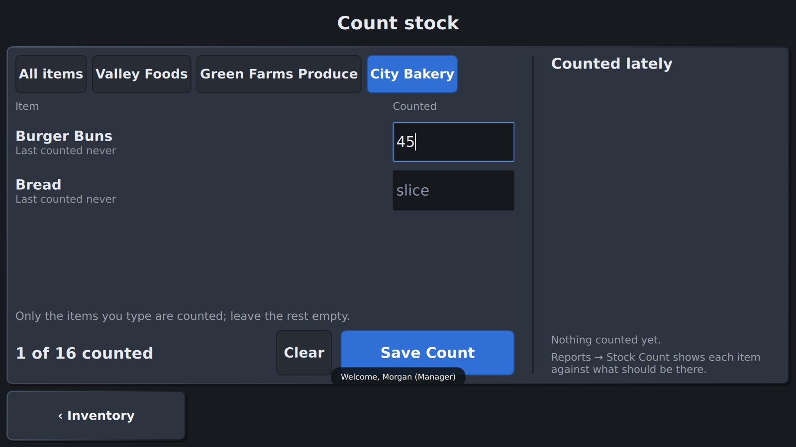
Reports → Stock then shows each item counted: what should have been there, what was counted, how far off and what that cost, the biggest losses first. Should be is the last count, plus the deliveries received, less what the sales used (by each item's recipe), plus any change made by hand to On hand. Coming up short again and again on one item means waste, portions bigger than the recipe, theft, or a recipe that needs fixing.
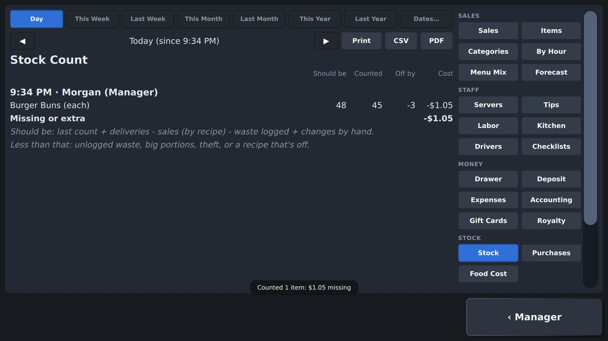
While counting, what should be there isn't shown, so it can't sway the count. Store Settings → Inventory can show it.
Logging waste
When something is thrown away, log it: Manager → Log Waste…, or Waste… on the kitchen screen. Touch the menu item (its recipe comes off the shelf: a dropped burger is a bun, a patty and some lettuce) or Ingredient and the ingredient, how much, and why (Dropped or spilled, Expired or spoiled, Made wrong…; Store Settings → Inventory sets the reasons), then Log Waste.
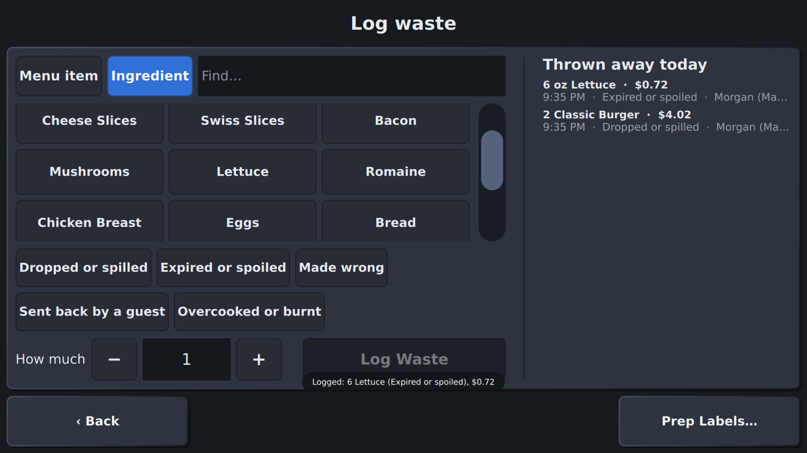
Stock counts then tell the two apart: waste that was logged shows as Thrown away (logged), and only the rest as missing. The Stock report also lists what was thrown away today and what it cost.
Par levels and what to order
Give each ingredient a Keep on hand (par) in Manager → Inventory: the amount you like to have after a delivery. Reports → Stock then lists, for each vendor, everything below its par: what's on hand, the par, how much to order to get back to it, and about what it costs. Print it and call the vendor, or read it to the rep.
Prep labels
Labels… on the kitchen screen (or Prep Labels… on the Log Waste page): touch the ingredient, or type what it is (Pico de gallo), choose how long it keeps, add a note if you like, how many, and Print. Each label says what it is, when it was made, when to use it by, and who made it.
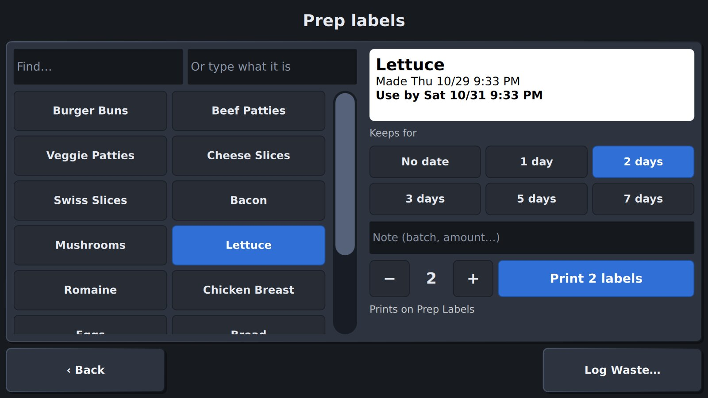
- Keeps for: set it once on each ingredient (Manager → Inventory → Keeps for (hours)) and it's filled in by itself.
- The printer: most label printers work. In Manager → Printers, set its Format to Label printer: ZPL (Zebra and the many that copy it) or Label printer: TSPL (TSC, Xprinter, Munbyn, Rollo and most low-cost ones), and its label size (2 × 1 inch is 51 × 25 mm). Store Settings → Inventory picks it for the store, and each screen can pick its own (Terminals). No label printer? Choose a receipt printer and each label prints as a short slip.
Store Check
Manager → Store Check answers "are we ready to open?": every printer answering (and none not printing, above), a backup in the last day, room on the disk, the standby computer, the clock (not behind the last sale, which a dead clock battery causes), the cash drawers started and the opening checklist. Each line is ✓ or ⚠, and the top says Ready to open or how many to look at.
It also notes what keeps the store safe and within the law, without holding up opening: sample staff still on (their PINs are in this manual for anyone to read), the store's state not chosen, backups not encrypted (set a backup password), a full Stripe secret key where a restricted one (rk_…, only Terminal and refunds) would do, and meal breaks past due. Cash drawer printers lists drawers that won't open (the terminal's printer has no cash drawer, or isn't set up), and Screens not in Terminals lists screens that use the Receipt printer because Terminals has no line for them (chapter 10).
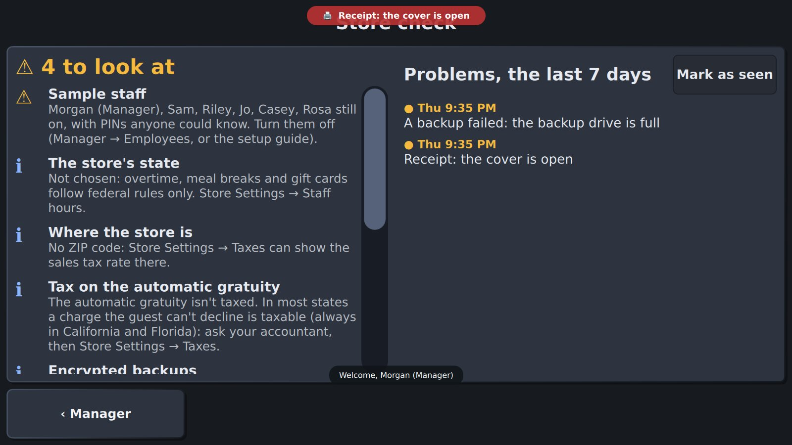
Beside it, Problems, the last 7 days: things that went wrong while nobody was looking. A printer out of paper or not answering, a save to the database or a backup that failed, the standby computer losing touch, and ViewTouch having closed without being told to (a crash, or the power went off). New ones are marked, and the Manager page's button says how many (Store Check ⚠ 2); Mark as seen clears that.
Promotions

- Percent off chosen categories or items, or "buy N, get M at percent off".
- Set the days (Mon-Fri, Tue, Sat, Sun) and the hours. First day and Last day are picked on the calendar (Clear: from now, or no end), From and Until on the time picker.
- They apply by themselves while they run. Demo: Happy Hour (weekdays 3-6 PM, half-price draft beer and wine) and Burger Tuesday (second burger half off).
Subscription promotions
A promotion with Subscription only on comes off only checks that carry a subscription. Look up or scan the guest's subscription card (its number starts with 9) on the open check: the screen says Subscription ..1234 on check #N: subscription discounts apply. The promotion's usual rules still apply: dates, days, hours, categories or items, percent or amount, the minimum and the number of uses. With no categories or items it covers the whole order.
Coupons
- A promotion with a Coupon code (SAVE5) comes off only the checks the code is entered on. With no categories or items, it covers the whole order.
- It can take an Amount off instead of a percent, need Orders of at least an amount, run from a First day to a Last day, and be used a set number of Times. Used so far counts the closed checks it came off; reopening one gives the use back.
- On the Pay screen, touch Coupon… and type the code, or scan it: a barcode scanner types it and presses Enter. The screen says why a code won't work (unknown, ended, used up, under the minimum). Remove takes it off, and so does Undo Payment on it.
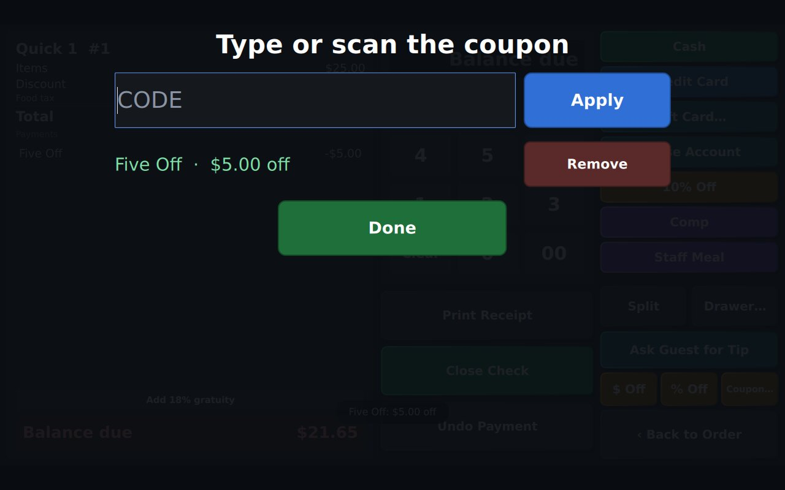
Coupon… on the Pay screen: typed or scanned.
Schedule

- A week at a time (‹ ›), or Go to the day to pick a day on the calendar (two weeks back to eight ahead). Touch a day, pick the person and the times (on the time picker), and touch Add Shift. A shift that ends before it starts runs past midnight.
- Touch a shift to remove it, or Clock Them In.
- Each person's hours for the week are listed below, in red over the overtime line.
Sold out (86)

Touch an item to mark it sold out, or back. Its buttons say SOLD OUT on every screen.
Closed checks


Find a Check: every check from the last year.
Find a Check… (Manager, or Find an Older Check… on the Reopen page) finds any check ever closed. Every check is kept forever, through End of Day, for as long as the store runs: nothing is ever thrown away.
- How far back: Today, Week, Month, Year, 2 Years, 5 Years, 50 Years or All, or Since…: pick a day on the calendar, and the checks since then show (that day too).
- Search: a check number (
#123), an amount (17.62), or part of a name, phone number, table, server, item or gift card number. Show All lists every check in that range instead, newest first; Older › and ‹ Newer go through them a page at a time.
- Touch one to see its items, payments, any refunds, and its History: everything that happened to it, when and by whom (sent, voids, discounts, approvals, payments, reopened, refunds). That's the audit trail. Each line says who rang it and each payment who took it (chapter 5). Reprint Receipt prints a copy.
- Scan a receipt's barcode here (or type its reference in the search) and the check opens, from any day (chapter 29).
- ILSA history opens the old ILSA receipts, read-only (chapter 28, ILSA sales history).
Refunds
On a closed check, today's or from any day before, each payment has Refund…. The bill it paid is filled in; type less to give back part of it. Tips aren't refunded: they stay with the staff who earned them (cash refunds also leave out the change already given back). Choose or type why, then Refund. It needs a manager: anyone else gets the Manager approval PIN pad.
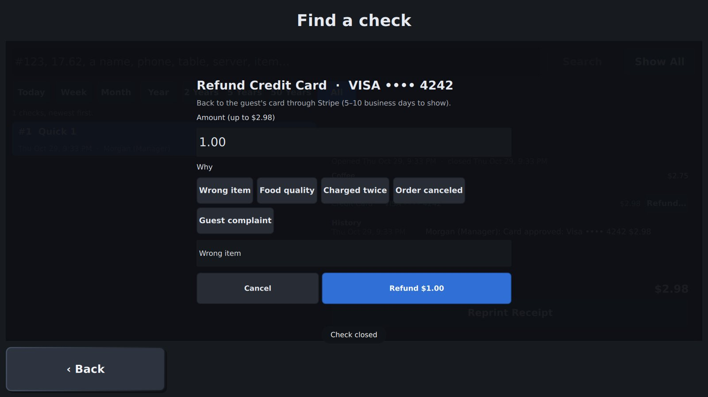
How much, and why |
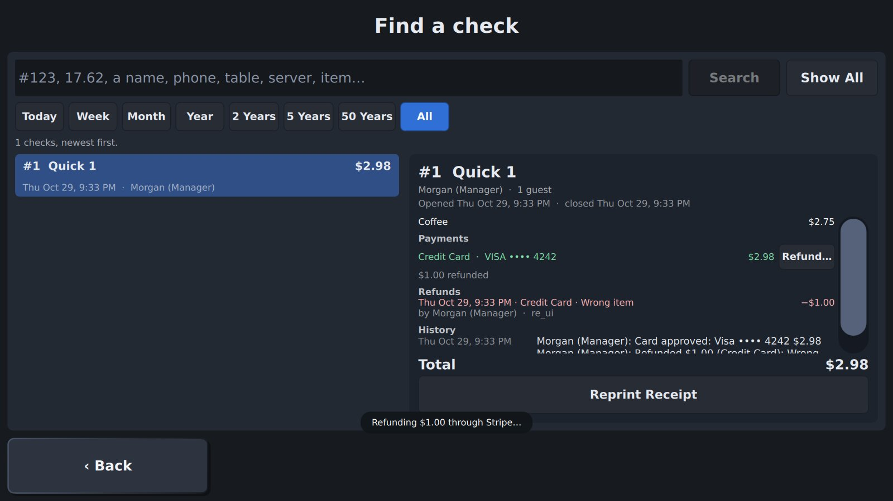
On the check, with who did it |
- A card from a Stripe reader goes back to the guest's card through Stripe right away; their bank shows it in 5–10 business days (often sooner when it's the same day).
- Cash comes out of your drawer (or your bank) as a refund pay-out, so the drawer still counts right.
- A card typed in (taken on another machine) is recorded here; give it back on that machine.
- Every refund goes in the check's history and on today's reports (Sales: a Refunds section and Collected after refunds; Deposit: Card refunds off the card batch), whatever day the check was from. You can't refund more than was paid.
- On a check that's still open, Undo Payment on a Stripe card refunds it, and also needs a manager.
From the order screen: Check… → Reopen a Closed Check…. Checks closed today; touch one to reopen it (managers). A refund is a reopen: void the item or take off the payment, then close again.
12. Reports and End of Day
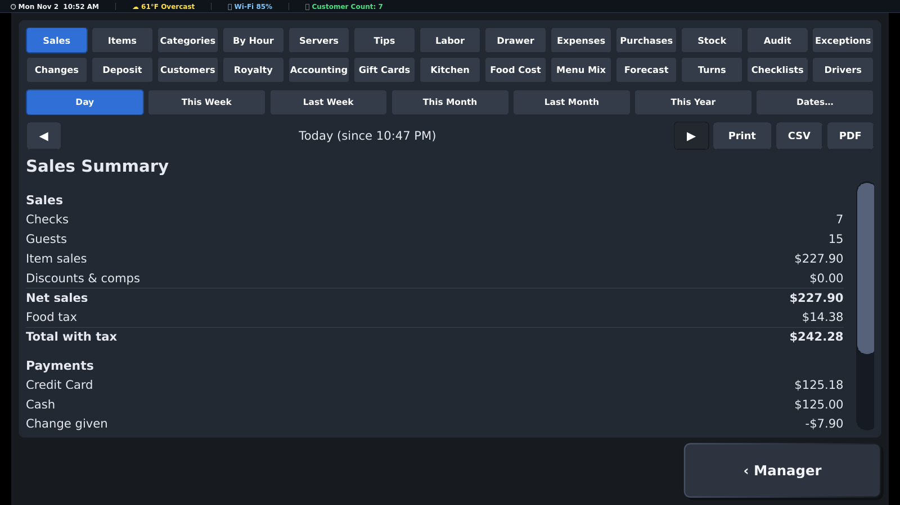
Reports: the report along the top, the period below.
| Report | Shows |
|---|
| Sales | Checks, guests, item sales, discounts, tax, payments by type, card tips, averages. |
| Items / Categories | What sold, how many and for how much. |
| By Hour | Sales by the hour. |
| Servers | Each server's sales. |
| By Employee | Sales by employee and item, for spiffs: for any day or dates, with an optional filter (Item, category or text). For each person, each item's quantity and sales, with a total; voided lines are left out. Lines from before November 7, 2026 count for the check's server, marked (server). A short list shows checks worked by more than one person (the server, who else rang lines, who cashed it out). + ILSA history adds the ILSA years (chapter 28). |
| X Report | Today so far (Sales and Drawer) on the receipt printer; nothing resets (chapter 10). |
| Tips | Card tips, gratuity, tip-outs, pool shares, paid and owed. |
| Labor | Clock in/out, breaks, hours today and this week, regular hours, overtime and double time by the store's state law, late or missed meal breaks, and labor cost: each person's pay, overtime at time and a half, double time at double, and labor % of sales. |
| Time Clock | Each person's punches with their hours, for payroll, laid out like the old ILSA Time Clock report (below). |
| Drawer | Each bank or drawer: start, cash, pay outs, expected, counted, over/short. |
| Expenses | Cash paid out for expenses, by category (produce, ice, repairs…), then each one with who and why. |
| Audit | Every void, discount, reopen, transfer, move and merge, with who and when. |
| Gift Cards | Cards sold and spent, what's still on cards, house accounts. |
| Kitchen | Ticket times by station, late tickets, the slowest. |
| Food Cost | Each item's sales and its cost at the time of sale, and stock. Lines from before November 7, 2026 use today's cost and are marked +, with a note; items with no cost are counted apart. Prices to look at lists every item that costs more than the store's target to make (Store Settings → Inventory → Food cost to stay under, 30% to start) at today's costs, with its price now and one that brings it back ($12.00 → $13.75). When a delivery comes in at higher prices, it says which items just went over. |
| Menu Mix | In each category, every item by how well it sells and what it earns after food cost: Star (keep it), Workhorse (sells well, earns little: raise the price or make it for less), Hidden gem (earns well, sells slowly: show it off) and Weak (change it or take it off). Items not sold count too. It uses each line's cost at the time of sale, like Food Cost. |
| Forecast | A coming day (Today, Tomorrow, or the next five days), from the same weekday in past weeks, with the most recent counting most. It shows the guests, checks and sales to expect, by hour (for the schedule), how many of each item, and the ingredients the kitchen will use beside what's on hand (the prep list). To order lists, by vendor, what that use and the low-stock level need beyond what's on hand. Servers: for each hour, how many servers it needs (the checks expected over Store Settings → Staff hours → Checks a server takes care of in an hour, 4 to start) beside how many are on the schedule then; ⚠ marks an hour that's short. It gets better as weeks of sales add up. |
| Purchases | Deliveries received today: by vendor, then each one's items and costs. |
| ILSA History | The old ILSA sales: daily Z, departments, item movement, gross profit, cashiers and more (chapter 28, ILSA sales history). |
The Labor report's total is exactly the sum of its rows.
Who rang it, and what it cost then
Every line keeps who rang it and when (the kiosk shows as Kiosk), and its cost at the time of sale. Every payment, discount, gift card and card payment keeps who took it. These stay with the line or payment through transfer, move, merge, split, reopen and void. They aren't printed on receipts; they show in Find a Check and feed By Employee, Food Cost and Menu Mix.
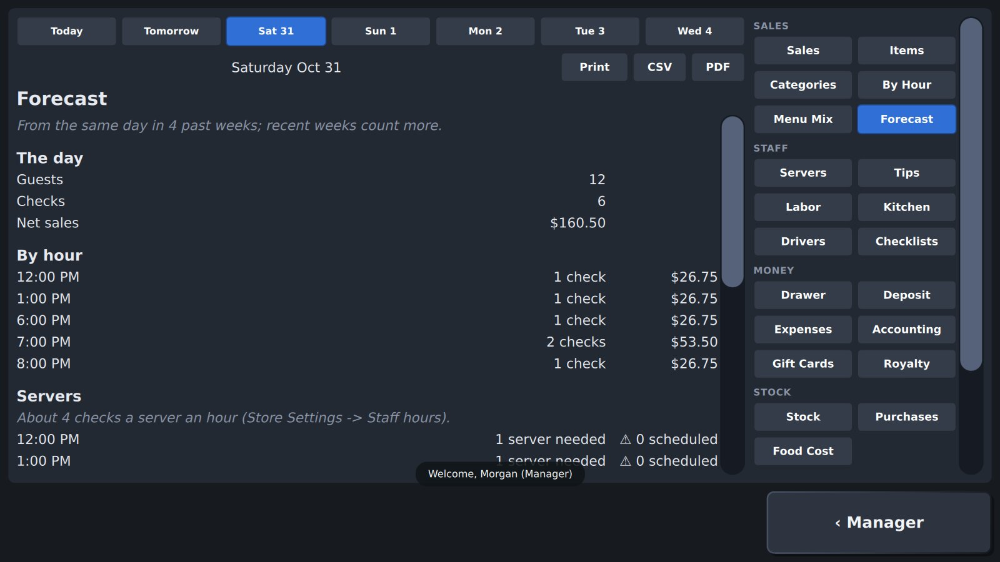
Forecast: Wednesday from the last four Wednesdays.
Periods and last year
Day shows one business day (◀ ▶ for earlier days). This Week, Last Week, This Month, Last Month, This Year and Dates… cover a range. vs Last Year adds the same days a year before and the change.
Your own days: Dates…
- Touch Dates…. From and to start on the days just shown (Last Month's, say), or this month so far, and the calendar opens for From at once (chapter 2, Choosing a date).
- Pick a day and touch OK: the report shows those days right away.
- While the boxes and the report don't agree, the heading says Choose the days, then Show, and no old report is shown. Touch Show.

Items last month against the same month a year before.

Labor |

Tips |

Kitchen times |

Food cost |
Gift cards and accounts |

Expenses |

Purchases |

Exceptions |

Deposit |

Customers |

Royalty |

Accounting |
- Exceptions: by employee, every void of something already sent, every discount and comp, payments and discounts taken back, reopened checks, moved or merged checks, and each time the drawer opened with no sale. Then voids and comps by reason, and the biggest ones. The first report to read when the cash is short.
Unusual sections come first: anyone who did one of these far more than everyone else on the shift (3 times or more, and at least 3 times as often as whoever else did it most), with the most anyone else did beside it. There's often a good reason (a new server, a tough table); it's a place to start, not an accusation.
It also has Cancelled sales (by employee and by reason), No sale: why, and Error corrects (retail, before paying). Coupons and loyalty rewards count as system discounts (promo), not employee discounts.
Tickets (today) saves the day's exception tickets as pictures: one for each check with a void, an error correct, an employee discount or comp, a payment or discount taken back, or a reopen. Each is headed STORE COPY: EXCEPTION and shows the date of birth when an ID was scanned. The No Sale slips are saved too, with one PDF of them all, in the Exceptions folder under ViewTouch Exports (and copied to Reports on the desktop). Nobody needs to staple a second receipt to the paperwork.
- Changes: who changed what, newest first: each setting, employee, payment type or other manager-screen record saved (the field, from what to what; a PIN only as changed), menu prices and names, items added or removed, and pages edited. Kept with each day at End of Day. Price and cost changes made by the ILSA price book show as ILSA sync (chapter 27). The price book cleanup of November 6, 2026 shows as Owner-approved cleanup, area Price book cleanup.
- Customers: who comes back. Each customer's visits, spending, average check, last visit and favorite item, best customers first, for any dates.
- Royalty: for a franchise, the royalty and advertising fund on net sales (Store Settings sets the percents), for any dates.
- Accounting: the sales as a journal, debits and credits by account (Store Settings → Chart of accounts). Touch CSV to save it for QuickBooks or your accountant; the two totals always match.
- Deposit: tonight's trip to the bank. Each drawer's cash (counted, or what should be there), less the starting cash kept for tomorrow, is the deposit. Then the card batch the processor will pay, and the book balance: what was sold against what was collected, and whether the drawers were over or short.
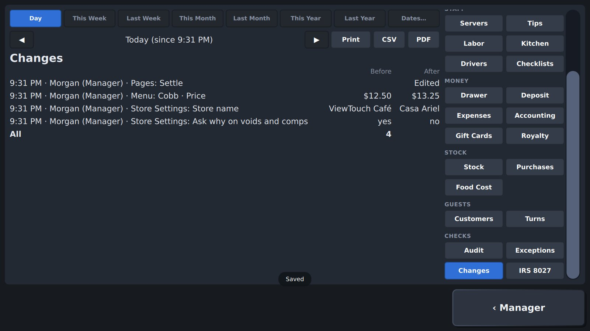
The Changes report.
Print prints a report on the receipt printer. CSV (for spreadsheets) and PDF save it to the exports folder.
Time Clock report (payroll)
Manager → Reports → Time Clock, next to Labor. It is laid out like the old ILSA Time Clock Report.
- It opens on Last Week: the pay week (Store Settings → Pay week starts on). Day is today; Dates… picks other days on the calendar.
- Employee: All employees, or one person.
- Print prints it on the receipt paper, over any days. PDF and CSV save it (the PDF is a full page, sideways).
What it shows:
- At the top: Time Clock Report, the days (11/01/2026 12:00AM thru …), the store's name, address and phone, and when it was printed. The address and phone come from Store Settings → The store → Store address and Store phone; when both are empty, the receipt header's lines are used.
- For each person (employee number and name): one line for each time they clocked in, with the Begin and End date and time, the Hours & Minutes (HH:MM) and the Total Hours as a decimal (3.12). Then a Total for the person, and at the end the Grand Total Hours.
- On paper each punch takes two lines: In, then Out with the hours.
- Rounding: each punch is rounded to the nearest minute, as ILSA did. 8:06:37 am to 11:13:22 am is 3 hours 6 minutes 45 seconds, so it shows 03:07 and 3.12. The totals add the minutes, then turn them into hours.
- Breaks: paid time, the same as the Labor report. An unpaid break is listed under its punch and taken off; a paid one is listed and counted.
- Still clocked in: shows as (still clocked in) and is not in the totals, since it has no end yet. A note at the bottom says so. Clock them out, or fix the punch in Manager → Time Punches, then print again.
- *edited marks a punch a manager changed. Who changed it and why are on the Labor report.
Before running payroll, make sure nobody is still clocked in for the week: those hours aren't counted until the punch has an end.
Reports on the website (from anywhere)
Every report on the Reports screen can also be read on the store's website, behind a password, from a phone or any computer. Each store's Pi sends its reports every 15 minutes (vt-web-reports, chapter 31). One login sees every store.
- Open the reports page (for example https://hatcityale.com/vt-reports/) and log in.
- Pick the store (BHDAN, HCA or All stores), the report, and the days: Today, Yesterday, This week, Last week, This month, Last month, or any days with From and To. ◀ Day before and Day after ▶ step through single days.
- The numbers are the register's own: a closed day shows the reports saved at End of Day; the day still open shows it as of the last update (still open, as of 2:15 PM).
- All stores adds the stores together where that makes sense (Sales, Items, Categories, By Hour, Servers, By Employee, Tips, Expenses, Deposit, Royalty, Accounting) and shows each store's report under it. Several days of those reports are added up the same way. Shares (%) and averages are left blank in a total, since they can't be added. The other reports show each day on its own.
- At the top, each store's last updated time. A store that hasn't sent for over 30 minutes is marked: check that its Pi is on and online.
- Print prints the page plainly; Download CSV saves it for a spreadsheet.
- Gift card PINs and card numbers are never sent (a card shows as ••••1234). The Forecast isn't sent: it looks ahead, so see it at the store.
- A business day is dated by the day its End of Day was pressed: a day closed at 2 AM Saturday is Saturday's. The day still open shows under today's date.
Setting up the website is a one-time job: the steps are in web/vt-reports/README.md in the code.
End of Day

- It lists anything still in the way (open checks, drawers or banks not counted).
- Once everything is settled, Close the Day (touch twice) saves the day's reports and starts a new day.
- It also shows the last backup and a Back Up Now button.
- Paperless summary: closing the day saves EOD Summary <date>.pdf in Daily Reports on the desktop (a folder for each day): Sales, Deposit, Drawer, Servers, Tips, Labor, Categories, Items, Hourly, Expenses and Exceptions (empty ones left out), then the exception ticket pictures. The pictures and their PDF are saved there too.
- Note for the Next Shift… leaves a note for whoever comes in next (Walk-in cooler is making noise; the repair is coming at 10). Each manager sees new notes once, when they log in, and touches Got It. Notes are kept a week.
13. Changing the screens (edit mode)

Edit mode: pages on the left, the page in the middle, settings on the right.
Every screen is a page of buttons you can change. Touch Manager → Edit Pages (or press F1 / Ctrl+E on a keyboard). Changes are a draft until you Save.
- Find a page: the Pages list has a Find a page… box (type a name, id or type) and an A–Z / By type switch. By type groups the pages under headings with how many are in each; the groups start shut and open with a touch.
- Select: click a button; shift-click to add more; drag across empty space to select several.
- Move and resize: drag a button to move it, or a handle to resize it. Buttons snap to the grid and line up with guides.
- Add: + Button, + Text, + Image, + Panel (tables, check lists, keypads and more). A new one goes in free space near the middle. + Panel → Order summary (items and totals, no seat/course) shows the check read-only, with a line for each tax; the starter Pay page uses it.
- Copy, cut, delete, layer order: hold a button for its menu (or right-click with a mouse).
- Change: on the right, its label, colors, shape and font, and what it does when touched: + Add action (go to a page, add an item, a command…). A button can do several things in order; ▲ ▼ reorder them, ✕ removes one.
- Tables: on a floor plan, add a table with + Floor Plan → Table, or Duplicate one (T7 becomes T8). Give each its name (1 to 40 characters) and seats; Show chairs draws a chair for each seat around it. To show a table on another plan too (Main and a room), Copy it and Paste it there: it stays the same table.
- Draw the room: + Floor Plan adds a wall, window, door, bar counter, booth bench, plant, pillar, fence, entrance or an area (a room's floor, with its name). They go under the tables, and touching them during service does nothing. Each has its own color (or the usual).
- Turn anything: drag the round handle above a selected piece (15° at a time; Shift: any angle), or hold it for Turn 90°, Turn 15° and Straighten (also under Arrange), or type Turned (degrees) on the right. A turned table's name stays upright.
- Undo / Redo every step (Ctrl+Z / Ctrl+Y). Done asks whether to save. On a small screen, swipe the tools sideways; Save and Done always stay in view.
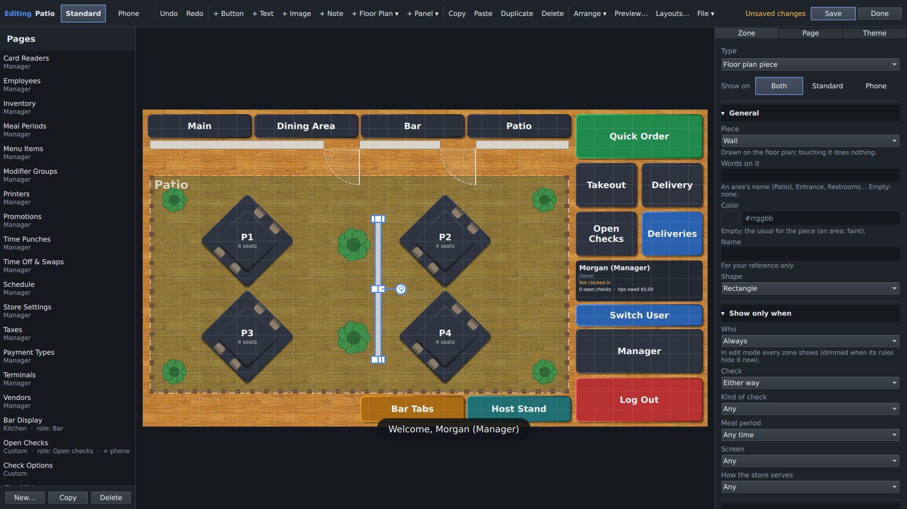
Drawing the Patio: a wall turned with the round handle above it.
Template pages share buttons: the order bar is on one template page, and every menu page uses it. Change it once and it changes everywhere.
When ViewTouch adds a button to your edited pages
Once a store has edited a page, a newer ViewTouch doesn't change it. A few new buttons are the exception: they're added once to the store's edited copy (Hardware Configuration's new buttons, Store Settings → Billboards…, Reports → ILSA History, End of shift → Find a Tablet…, and 🏷️ Retail Mode on the order screen, Tables and Open checks). If the store deletes one, it stays deleted. A Retail Mode button is never put over something the store placed there: then add it in the editor. On the Retail page, the CASHIER DUTY and Reprint Receipt buttons' jumps (Reprint Receipt to Look Up Checks), the blank decimal key, the bigger digits, the new right column with MISC FOOD/BEV, MISC MDSE and VOID ITEM / RESTORE ITEM are also put in once, only where they're still as they came. Any other change to the starter pages doesn't reach a page the store has edited: make it yourself in the editor.
The Customer Display page
The guest screen is a page you can edit too: Edit Pages → Customer Display (managers). Its parts are the guest header, a picture or video panel (between guests), the order (during a sale) and the turning messages. On the right: the picture's Fit and Size % (under 100% always shows the whole picture), a line above each message and the seconds each shows, the rewards box and asking for an email, and the header's color. Buttons placed there don't do anything. Leaving the editor while on Customer Display brings the register back to its own pages. See chapter 24, The guest screen.
Ready-made looks
In edit mode, the Theme tab starts with Looks: touch one and every screen takes its colors. Once your logo is set, two looks are made from its colors. Don't like it? Undo. Like it? Save.


Daylight |

Warm Café |
A menu that lays itself out
On the menu pages, Everything shows the whole menu: touch a family across the top, then an item. Items added in Manager → Menu appear there by themselves, with their price; sold-out ones are grayed.

Everything: Soup of the Day appeared as soon as it was added to the menu.
To put one on any page: edit mode → + Panel → Menu (self-filling), and set its Family (or leave it empty for all), Columns and Show photos.
Your logo and pictures
Make the screens yours. In Manager → Store Settings → Store logo (or the setup guide's logo step), touch Add Picture…: the pictures on the computer show as thumbnails, newest first, from its Pictures, Documents, Downloads and Desktop folders. Touch yours. On a computer only for ViewTouch, copy pictures into the administrator's Pictures or Documents folder, or put them on a USB stick and touch USB Stick; Browse… opens any other folder. On a phone or tablet, Android's photo picker opens instead. It shows on the login page and the screen saver of every screen, tablets included (and on the customer display and kiosk). Turn on Print the logo on receipts to print it at the top of every receipt.

The login page |

The screen saver |

On a receipt |
Every button can have a picture: in edit mode select it, and set its Picture. The same field is on + Image buttons, and on the page's Background (with how the picture fits). Pictures you add are kept by the store, so every screen shows them.

A button's Picture: the store's pictures, a preview, and Add Picture….
Your brand's font works the same way: next to every Font list in edit mode, Add Font… takes a TTF or OTF file. Every screen gets it, and it appears in all the font lists.

Quick Order in the store's own font.
Preview on other screens
In edit mode, Preview… shows the page on a phone, a tablet, a terminal and an upright kiosk, and how big its smallest button comes out on each (about 9 mm is right for a finger). Red means too small to touch reliably there: make the buttons bigger, or give phones a phone version of the page.

Ready-made layouts, and sharing them
Don't want to move buttons one by one? In edit mode, touch Layouts…: the login page, the tables, the order screen, Pay and the kitchen screen each come with five arrangements, with a picture of each. Touch one to try it; Undo takes it back, Save keeps it.

Five layouts for the Tables page.

The Pay screen's five.
The same window shares designs with other stores. Export This Page… or Export Every Page… saves a file; on the other store, Use a Page File for This Page… makes the page you're on look like it (it keeps its name and job), Add a Page from a File… adds it as a new page, and Replace Every Page from a File… brings over a whole restaurant's screens.
The files carry the pictures the pages use and your custom fonts, so the other store gets the whole look in one file. (Each store keeps its own logo.)
Panels and their own buttons
Select a panel (the kitchen screen, the check, the payment panel…) and the right side shows more:
- Settings: what the panel does. Examples: a kitchen screen's station, or expediter mode; whether a check list shows open checks, bar tabs or closed ones; which report the reports panel opens on; how many columns of tables.
- Built-in buttons: hide any of the panel's own buttons, or give it other words ("All Day" → "Everything"). Hide all its buttons hides every one.
- Position (kitchen screen, choices, drawer): which built-in button comes first in its row.
- Built-in button look: color, text color, pressed color, font and corners of the panel's buttons. Set it on the Theme tab to change every panel at once.
Colors that mean something
On the Theme tab, Status colors sets the colors of a table with a check (and with your check, the one you're on, one seated a long time), of kitchen tickets as they get older, of the expediter's ready orders, and of the sold-out badge. Brand colors, or a high-contrast set for a bright kitchen.
Buttons that show only sometimes, and text that changes
Every button has Show only when on the right: who's logged in (a manager only, say), whether a check is open, the kind of check (takeout only), the meal period (lunch only) or the kind of screen (phones only; Show on at the top sets the same). In edit mode you see all of them; the ones hidden right now are dimmed.
A button's text can change by itself: type Pay {check.balance} and it says "Pay $13.53". Others: {check.total}, {check.label}, {check.guests}, {check.items}, {check.due}, {user.name}, {store.name}, {time}, {date}. The text box's hint lists them.
Each panel button has a command, so a regular button can do the same anywhere: hide the kitchen screen's Recall and put a big red Recall kitchen ticket button at the bottom of the page. The commands include next station, All Day, recall, next seat, next course, fire course, done / cancel choosing, one more / fewer guest, no sale, pay out, back up.

The kitchen screen with red buttons, Recall hidden and All Day renamed.
14. Phones and tablets
Tablets show the same screens as the store. Phones get phone pages: big buttons in one column, portrait.
Tables on a phone: the floor plan, with the tabs for Main, Dining Area, Bar and Patio across the top and the usual buttons below. The tables are where they stand, colored as on the big screen; touch one to open it. A wide plan is turned a quarter to fill the phone (so its tables come out bigger), with the names still upright. Spread two fingers to zoom in and drag it around. Someone whose start page is a room (Dining Area) opens on that room. Moving a check to another table (Check… → Move) picks the table on the plan too.
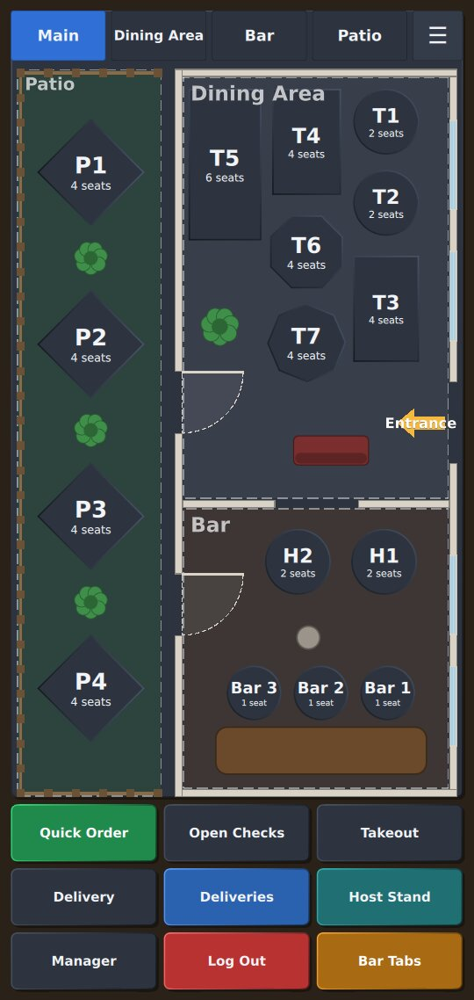
Main, turned to fit |
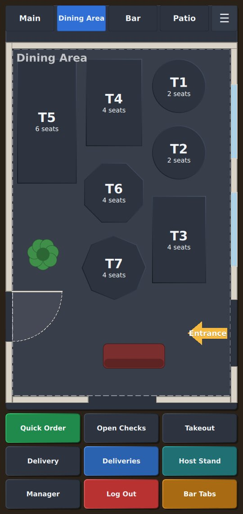
Dining Area |
A phone version of a page
Phones lay every page out by themselves, in rows of big buttons. When you want a page laid out your way on phones, give it a phone version: in edit mode, on the page, touch Phone at the top (next to Standard), then Make phone version. It starts as phones show the page now, so you only move what bothers you. Menu pages stay inside the order screen's phone frame.
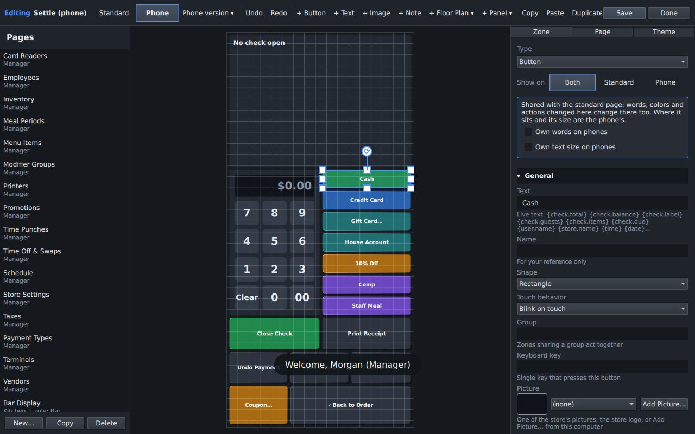
Editing Pay's phone version. Cash is shared with the standard page.
- One button, two places. A button on the phone version is the page's button: change its words, color or what it does on either screen, and both change. Moving or sizing it changes only the screen you're on.
- Different words on phones. Select the button on Phone and tick Own words on phones (or Own text size on phones). Change the words on the standard page later and ViewTouch reminds you the phone still says its own.
- Show on: at the top of a button's settings, Both, Standard or Phone puts it on both kinds of screen, or only one.
- Delete on Phone only takes the button off the phone; it stays on the standard page. Delete it on Standard and it goes from both. A copy made on the phone is the phone's alone.
- New buttons: a button added to the standard page shows as ⚠ 1 not on phone. Touch it, then Put on phone or Leave off.
- Phone version ▾ also lists where the phone differs from the page: own words and text sizes (with what the page says), and buttons only on the phone. Show selects one; Same as page makes it follow the page again.
- Back to automatic… removes the phone version; phones lay the page out by themselves again. (Undo brings it back.)
Phone version ▾: buttons left off the phone, and where it differs from the page.
A page without a phone version can still be steered: select a button on the standard page and use On phones on the right. A row of its own makes it take the whole width; Where puts it first or last.
To add a tablet or phone, install the ViewTouch Android app and pair it (chapter 1). Manager → Terminals → Screen layout can force phone or standard pages for a screen.
Getting the app
The store's tablets get this edition's app from the store's computer: Manager → System Config → Tablets (2x Tap Push), or Site Setup → Send app update (chapter 30). Don't download ViewTouch's general app for them.
Other tablets or phones: download it from github.com/ViewTouch/viewtouch/releases/tag/modern-packages: ViewTouch-android-arm64.apk (most) or ViewTouch-android-armv7.apk (older or budget ones), open it, and allow installing it. Later versions come from the store's computer: a strip on the tablet says one is ready, and a manager touches Update Now. On a Stripe Reader S700 the app is installed and updated through Stripe (Apps on Devices).
A tablet only for ViewTouch
Like the main register, a tablet can be only for ViewTouch: ViewTouch is its home screen and starts when it turns on, it's pinned (no Home, Recents or notifications; the power button's menu still restarts it), there's no lock screen, and staff can't add accounts or install other apps. Set it up once, with a computer and a USB cable, on a tablet just reset to factory settings (no Google account added):
- On the tablet: Settings → About → touch Build number 7 times; then Settings → Developer options → USB debugging on.
- On the computer, with Android's platform tools:
adb install ViewTouch-android-arm64.apk
adb shell dpm set-device-owner org.viewtouch.pos/.KioskAdmin- Open ViewTouch: it pins itself. Pair it as usual.
Manager → Close ViewTouch lets go of the tablet (for a technician: Settings, Wi-Fi) until ViewTouch is opened again or the tablet restarts; a restart always brings ViewTouch back as the home screen. To make it an ordinary tablet for good, close ViewTouch and reset it to factory settings.
Bluetooth scanner: Manager → System Config → Bluetooth scanner. On a tablet it opens Android's Bluetooth settings inside the pinned ViewTouch, to pair a scanner; Back comes back to ViewTouch. On the Pi it says to use the Bluetooth icon on the desktop.
Owner: the store's tablets keep Wi-Fi awake while ViewTouch runs and are left out of battery saving. After a one-time permission and pairing, wireless debugging comes back by itself after a restart. vt-tablets; beep3 on the Pi installs the app over USB first, then over Wi-Fi; each install gives up after 3 minutes.
Scanning with the tablet's camera
- Where: the Retail screen's 📷 SCAN, the Labels screen's 📷 Scan, and the ID check's 📷 Scan ID with camera (chapter 23).
- The keyboard goes away, and a big camera window opens in the middle of the screen with a red line across it. Hold the barcode on the line.
- It closes as soon as it reads the code, or with Cancel. It gives up after 20 seconds for a product, 30 for an ID.
Find a tablet
A tablet left lying around somewhere? Make it beep.
- On any screen: Log Out → Find a Tablet… (phones too). Anyone can use it.
- The list shows the store's tablets, each Connected or Not connected · last seen ….
- Touch Find next to the tablet. It beeps loudly (at full alarm volume, put back after), its screen wakes and flashes Here I am — tap to stop, with the name of the screen looking for it.
- It stops when someone taps the tablet, when you touch Stop, or after about 2 minutes.
- <tablet> is not connected — it may be off, asleep with Wi-Fi off, or out of battery. A tablet whose screen was turned off with its power button can't beep until it's woken.
- Last seen starts over when ViewTouch restarts on the store's computer.
A big price book on a tablet
Tablets don't get the whole retail price book. Find, Item Look Up and Labels ask the main computer, and a scan on a tablet is looked up on the main computer, so they stay quick with 30,000 items.
The on-screen keyboard

On a touch screen, text fields bring up a keyboard (a number pad for numbers).
Touch any text field and the keyboard pops up over the screen: a number pad for phone numbers and amounts. The screen keeps its size; if the keyboard would cover the field, the screen slides up a little so you can see what you type, and back down after. ⏎ (or Done) saves the field, and ⌨▾ puts the keyboard away.
Phones and tablets use their own keyboard, which pops up over the screen the same way. PINs are always typed on ViewTouch's own number pad.
It is on for every screen, since most touch screens have no keyboard. A screen with a real keyboard can turn it off: Manager → Terminals → the screen → On-screen keyboard: Off.
15. Backups, safety and starting over
- Every sale is saved at once, so a power cut loses nothing already on the screen.
- Automatic backups: when ViewTouch starts, every 24 hours and after every End of Day. The newest 30 are kept.
- A second copy on a USB drive or network folder: Store Settings → Also copy backups to.
- Damaged database: if the database is damaged, ViewTouch won't use it. It names the newest good backup and the command to restore it.
- Restore (ViewTouch stopped):
sudo vtmodern --data-dir /var/lib/viewtouch --restore <backup file>. A restore never leaves the store without a database: what it sets aside gets a name of its own, and a move cut short is put back.
Encrypted backups
A USB drive with backups on it holds every sale, customer and phone number. To lock them: Store Settings → Encrypt backups, then a Backup password (8 characters or more), and Save. From then on every backup and its second copy is a .vtbak file that only this password opens. Each one is opened again and checked as it's made.
- Restoring on the same computer needs nothing more. On another computer,
--restore asks for the password.
- Changing the password leaves older backups on the old one.
Write the backup password down and keep it somewhere safe. Without it, nobody can open an encrypted backup, not even ViewTouch's makers.
The live database on the store computer is protected by turning on disk encryption when installing the operating system (Fedora and Ubuntu: Encrypt my data). PINs are never stored, only scrambled (salted hashes).
Factory reset

Manager → Factory Reset…, type RESET. ViewTouch backs up, deletes everything (sales, customers, staff, menu, settings, page changes) and starts again with the starter set. The backup lets you undo it with --restore.
From the command line: vtmodern --factory-reset, and vtmodern --demo-data to fill an empty store with two months of demo history for training.
Clearing the test sales before a store goes live is not a Factory Reset: it keeps the items, settings, staff and pages. The owner does it with a store computer command (chapter 31, Store computer commands).
16. The self-order kiosk
A screen where guests order on their own and pay at the counter, with no help from staff.
Turning it on
- On the spot: log in as a manager, touch Manager → Self-Order Kiosk.
- Always: Manager → Terminals → the screen → Screen layout → Self-order kiosk. It starts as a kiosk every time it connects.
- From the command line:
vtmodern --self-order.
- Turning it off: hold the top-left corner of the kiosk for 3 seconds, then type a manager's PIN.
What the guest does

1. Touch to Order (then For Here or To Go) |

2. The menu and their order |

3. Choices (temperature, side…) |

4. A name to call the order by |

5. The order number, and "please pay at the counter".
- Their slip: as the order is placed, the kiosk's receipt printer (Manager → Terminals → the kiosk → Receipts and cash drawer on) prints a slip: the order number in big type, their name, For here or To go, what they ordered and the total, and "Please pay at the counter". The screen tells them to take it. At the counter they show it, and the cashier finds Kiosk 42 in Open Checks. Turn it off with Store Settings → Self-order kiosk → Print an order slip.
- Categories on the left, dishes with their photo, description and price in the middle, their order and total on the right. × takes an item off; Start Over clears everything.
- Their way: for what comes on an item (a burger's lettuce, tomato, onion, pickles, mayo), the choices sheet lists What's on it, each with No · Light · Regular · Extra · On the side. Add-ons they choose (bacon, a dressing) can be Light, Extra or On the side too. The kitchen ticket says No Onion, Side of Mayo, Extra Bacon. In Manager → Modifier Groups, start an option with * for what comes on the item (
*Onion), and turn on Guests can ask for Light, Extra or On the side for groups like dressings and toppings (not temperatures or sizes). On staff screens, touching something that comes on it asks No, Lite, Extra or Side.
- Sold-out items show SOLD OUT and can't be ordered.
- While nobody is ordering, the kiosk shows the dishes' photos and the customer display's messages and pictures (Store Settings), with a pulsing Touch to Order.
- If nobody touches the screen for 90 seconds in the middle of an order, it asks Are you still there?. With no answer it clears the order and goes back to the welcome screen (Store Settings sets the time).
On a tall kiosk
On a portrait screen, such as a 21.5" floor-standing kiosk, the menu fills the screen with big photo cards. The categories, the order bar and every button sit at the bottom, within reach. Touch the order bar to see the order; choices come up from the bottom.

Attract |

Menu |

Choices |

Easy Reach |
Easy Reach (in the order bar) brings the whole menu down to the lower 60% of the screen for guests in a wheelchair, and children. Full Screen puts it back. It turns off by itself for the next guest.
The kiosk in your colors
Store Settings has a group of Self-order kiosk settings: the background, card, button and text colors (written like #1f8a4c), the font, a bigger or smaller size, and the words on the welcome button. Turn off ask For Here or To Go for a place where everything is for here, and ask for a name to call orders by number only. Easy Reach button hides that button. The accent color, logo and pictures come from the customer display settings.

A light kiosk: welcome |

Its menu |
At the counter
The order waits in Open Checks as Kiosk 42, with the guest's name. The cashier opens it, takes the payment and closes it. Closing sends it to the kitchen. With Store Settings → Self-order kiosk → Send orders to the kitchen at once, it goes to the kitchen as soon as the guest finishes instead.
What guests can order
Every menu item except modifiers (they appear as choices), items marked Not on the self-order kiosk, and alcohol, which never shows there. Give items a Description and a Photo in Manager → Menu Items. A photo is an image file on the store's computer (for example in /var/lib/viewtouch/photos). Kiosks connected over the network get it from there.
Card payments at the kiosk will come with card readers. Until then, guests pay at the counter.
17. Languages
The screens come in English, Spanish (Español), French (Français), Portuguese (Português, as spoken in Brazil) and Simplified Chinese (中文).
Pay, in French |
Taking an order in Chinese |
Receipt and label printers can't print Chinese characters, so a store whose language is Chinese prints its receipts, kitchen tickets, reports and labels in English. (Item names typed in Chinese print as question marks: give them an English kitchen name, chapter 11.) The screens show Chinese wherever a Chinese font is installed: on Android tablets and phones it always is; on a Linux computer, install the Noto CJK fonts.
- Each person's own: Manager → Employees → the person → Language. The screen switches when they log in and back when they log out. On a store with several screens, each speaks its own user's language, messages included.
- The store's: Manager → Store Settings → Language. Used on screens nobody is logged in to, for people without their own, and for everything guests see: the customer display, the self-order kiosk, receipts and kitchen tickets.

Rosa's floor plan |

Taking an order in Spanish |
The newer screens (ID checks, Cancel Sale, No Sale reasons, Billboards, the printer Reprint banner, the standby message, the privacy notice, Labels…) have Spanish wording too.
Menu items, modifier groups and their options stay as you typed them, because the check, the kitchen and receipts use those names. To translate your own buttons or any phrase, put a file translations/es.json (or fr.json, pt.json, zh.json) in ViewTouch's data folder, for example {"Burger of the Day": "Hamburguesa del día"}.
18. Keep running if a computer fails
A second store computer can be the standby. It keeps a live copy of everything and takes over if the main computer stops.
Setting it up
- On any store screen: Manager → Terminals → Pair a Device, and note the code.
- On the second computer:
vtmodern --standby auto --pair <code> (once). From then on, vtmodern --standby auto, best as a service.
May this computer become a standby? (owner)
On the store's Pis this is a setting for each computer: Site Setup → This site → May become a standby: Yes (a backup for this store's server) or No (this computer runs its own store). On the Pi: vt-site set STANDBY_ALLOWED yes; beep3 (or no). New Pis start at No; a computer where it was never set counts as Yes, so pairs already set up keep working. It takes effect the next time ViewTouch starts.
With No, if another computer already runs this store, the screen says Another computer is already running this store at <host>. This computer is set not to become its standby (Hardware Configuration / vt-site). and ViewTouch doesn't start.
A store Pi made as a copy of another (chapter 31) gets its own store identity and never becomes the original's standby.
When the main computer stops
- The screens say The main server isn't answering. The standby computer takes over in a few seconds.
- After 20 seconds the standby becomes the main computer: same store, same screens, same check numbers. The screens find it and reconnect by themselves.
- A manager can touch Take Over Now on a screen and type their PIN to skip the wait. After five wrong PINs it makes you wait.
- When the old main computer comes back, it sees the store running elsewhere and becomes the new standby (if it may become one: above; if not, it shows the message above and closes). It first keeps its own data as a
…-before-standby.db backup.
Manager → Network

Network: this computer, the standby, the screens connected (and who is on them), and how each printer did last.
If the cable between the two computers breaks while both keep running, both may take orders for a few seconds. Orders taken on the old main computer in that time are only in its -before-standby backup.
19. Retail POS Workstation, UPC Barcodes & Parent/Child Costing
The Retail screen
Registers set up for counter sales open straight on the Retail POS Entry screen. It is made for quick cigar, cigarette and convenience checkout: scan or type a UPC or PLU on the keypad in the middle, and the item goes on the sale. To make a register start there, set Manager → Terminals → the register → Start screen.
Retail and Hospitality: 🍽️ Hospitality Mode goes to the restaurant and bar screens with one touch. 🏷️ Retail Mode comes back: it is on the order screen (above the check), Tables, Open checks and Find a Check.
| Button | What it does |
|---|
| 📷 SCAN | Scans with the tablet's camera (chapter 14). On the Pi it says to use the handheld scanner. |
| ALPHA LOOK UP | Opens Item Look Up (below). |
| PRICE CHECK | Turns price check mode on or off (below). |
| 📦 BOX ↔ STICK | Switches the item between the box and a single. |
| VOID ITEM / RESTORE ITEM | Takes off the item touched on the check, as an error correct; on a struck-through item it puts it back (below). |
| CANCEL SALE | Cancels the whole sale, with a reason (below). |
| DISCOUNTS | A percent off one item or the whole sale (below). |
| ITEM RETURN | Opens Find a Check: find the sale, then a manager uses Refund… (chapter 11). Scanning the receipt's barcode opens the check too (chapter 29). |
| NO SALE | Asks why, opens the drawer and prints a slip (chapter 10). |
| CASHIER DUTY | The Cashier Duty screen (below). |
| Reprint Receipt | Opens Look Up Checks, the same as CASHIER DUTY → LOOK UP CHECKS (below). Cancel there comes back to the Retail screen. |
| Gift Cards | The Gift Card screen (chapter 7). |
| Lighter Refill, EMPTY BOX | Ring in the menu items with those names (they must be on the menu). |
| MISC MDSE, MISC FOOD/BEV | Open departments: type the amount on the keypad, then the key. It rings in Misc Merchandise (Merchandise tax) or Misc Food/Bev (Food tax, the meals rate). The rates are in Store Settings → Taxes; with no Food tax set, MISC FOOD/BEV uses the Merchandise rate. The departments are made the first time they are used. |
| SUSPEND / RESUME | Put the sale aside and bring it back. |
| CLEAR | Clears what was typed on the keypad. |
| SUB TOTAL (PAY) | Goes to Pay (chapter 6). |
The right column is SUSPEND, RESUME, CLEAR and SUB TOTAL (PAY), each one key tall, beside the 7-8-9, 4-5-6, 1-2-3 and 0-00 rows. MISC FOOD/BEV is in the top row, next to MISC MDSE.
The keypad's decimal key is blank, and the number keys are big. Staff clock in and out on the login screen's Time Clock (the Retail screen has no TIME CLOCK key; CASHIER DUTY has one). After a time-out or a login, a screen that was in Retail Mode comes back to the Retail screen with the sale still on it, not to the order screen; a terminal's Start screen (Manager → Terminals, where the Retail screen is in the list) comes first. A quick retail sale stays on the Retail screen. (Which mode a screen was in is forgotten when ViewTouch restarts.) Scanning an ID-check item (tobacco, or alcohol when that's on) asks for the buyer's ID first (chapter 23, ID checks for age-restricted sales).
Cashier Duty
CASHIER DUTY on the Retail screen opens a page of the cashier's tasks:
- X REPORT (print, nothing reset): today so far (chapter 10).
- DRAWER count · pay in · pay out: the Drawer page.
- NO SALE: open the drawer, with a reason.
- LOOK UP CHECKS (past receipts, reprint): below.
- OPEN CHECKS mine · all.
- TIME CLOCK.
- ‹ Back goes back to the sale.
Look Up Checks: past receipts
- Open it from the Retail screen's Reprint Receipt, or CASHIER DUTY → LOOK UP CHECKS.
- The receipts are on the right: Today, Week, Month, Year or All, or Since… to pick a day on the calendar, with ‹ Newer / Older › and up and down.
- Touch one: the receipt shows on the left as it printed.
- Reprint… asks which copy: customer copy, gift receipt, or with the date of birth (chapter 5). Look Up Checks stays open after a reprint. Cancel goes back where you came from: the Retail screen, or Cashier Duty.
- ILSA history opens the old ILSA receipts (chapter 28, ILSA sales history).
Item Look Up
ALPHA LOOK UP opens Item Look Up, laid out like the Labels screen:
- Type part of a name, or scan or type a UPC, in the search box at the top. Clear empties it.
- Or go down the tree: department group › department › brand › product group › sub group, each with how many items. Show all N items here lists every item at the level you're on.
- The items show with their prices and UPCs; ▲ PG UP and ▼ PG DN on the right page through them, as on Find. Touch an item to ring it in.
- ‹ Back or ✕ Close goes back to the sale.
A store whose Retail page was changed in the page editor may still have the old buttons. In edit mode, set ALPHA LOOK UP to Jump to page → Item Look Up, ITEM RETURN to Jump to page → Find a Check, and Reprint Receipt to Jump to page → Look Up Checks (chapter 13).
Price check
- Touch PRICE CHECK. *PRICE CHECK* flashes at the top.
- Now a scan (scanner or camera) doesn't ring the item in. A window shows it instead: the item, its price and UPC, No discounts or Sold out, and its box (Parent UPC, Box of N) or its singles. The guest screen shows the same.
- Touch the window to close it. Touch PRICE CHECK again to go back to selling.
Error correct: VOID ITEM, RESTORE ITEM
Touch the item on the check (only that one lights up, with a yellow ring), then VOID ITEM. With nothing touched it says Touch the item on the check first and takes nothing off. The item must not have been sent. It is an error correct: no manager, nothing goes to the kitchen. The cashier's screen shows it struck through with ERR CORR, the customer's receipt leaves it off, and the Exceptions and Audit reports list it. A line already sent is voided as usual (a manager).
Touch a struck-through item and the key says RESTORE ITEM: it puts the item back as it was, while the sale is open and unpaid. The check's history shows both; a void that was restored is not an exception (Exceptions report, exception tickets). Voided again, it counts again.
Cancel Sale
- CANCEL SALE asks Why cancel the sale? (to start: Price, Customer changed mind, No ID). Managers set the reasons in Store Settings → Voids, comps, No Sale and Cancel Sale → Reasons for Cancel Sale.
- The sale is kept as Cancel #1, #2… for the day. It isn't a sale: sent lines go back to stock, the kitchen gets a void, and a held card is let go.
- A sale with payments on it needs them taken back first. An empty sale is just put away, with no number. A sale whose items were all taken off is cancelled and closed like any other, not left open.
- It counts as an exception (chapter 12).
Discounts
DISCOUNTS asks Discount: which?
- ITEM DISCOUNT: the last item rung, or the one touched.
- SUBTOTAL DISCOUNT: everything in the sale.
Each opens 5%, 10%, 15%, 20%, 25%, 30%, 35%, COMP 100% and VARIABLE % (type the percent, then Apply). Items marked No discounts (cigarettes) are never discounted. ‹ Back to the sale goes back.
3-Way Menu Builder & Full-Screen Retail Item Workstation
Opening Manager → Menu Builder presents a 3-way mode chooser—Hospitality (F&B), Retail Inventory, and Events & Admissions—with per-category visibility toggles so retail merchandise categories stay separate from restaurant and bar screens (🏷 Retail screen only, chapter 11). The Retail screen's 🔍 Item / UPC Builder opens it too.
Manager screen with direct access to Menu Builder, Label Utility, Customers, Gift Cards, and Reports.
- Alpha (A–Z) vs. UPC Numeric Sort: Toggle the item browser between alphabetical sorting and numeric UPC/PLU sorting, and filter by All, Retail Only, or F&B Only.
- Parent box to child single cost: Link a child item (a single cigar or a pack) to its parent box or carton UPC and give how many are in it. Whenever the box's cost changes, ViewTouch works out the single's cost, Profit ($), Gross Margin % and Markup % again.
- Prices and costs follow the ILSA price book by themselves (chapter 27, ILSA price book sync).
Primary UPC and Alt UPCs
Each item has a Primary UPC and any number of Alternate / Promo UPCs, separated by commas.
- Barcodes are saved exactly as typed or scanned. No check digit is added, and none is tested. Only a barcode that isn't 4 to 40 letters and digits, or that another item already has, is refused.
- A scanned 11-digit code finds the 12-digit item, and a 13-digit EAN with a 0 in front finds the 12-digit UPC (chapter 2).
- Items that came from ILSA also carry the 12-digit form of codes ILSA kept without their leading 0.
If a cashier scans a barcode that does not match any item, coupon, gift card or rewards card, ViewTouch shows the centered Item Not on File — Yes (Y) / No (N) window so a manager can add the item on the spot. Rapid repeat scans are ignored.
20. ViewTouch Label Utility v1.2 & ZPL Barcode Printing
Read-Only Database Connection & Bitmap Rendering
Touch Manager → Label Utility on the Pi to open ViewTouch Label Utility v1.2. It reads the store's database read-only: it never writes to or changes it. Every label (text and barcodes) is drawn at 203 DPI as a single 1-bit picture with whole-dot UPC-A/Code-128 bars, so ZPL label printers never get fonts or barcode widths wrong.
- The main window and the label designer fill the screen; small windows stay small. The person logged in isn't logged out for being idle while the utility is open. It runs for any user on the Pi.
- Prices come from ViewTouch in dollars ($150.00 prints as $150.00). Once ViewTouch has the imported price book (1,000 or more items with a UPC), the utility and the Labels screen use ViewTouch's own price book.
- Labels can also be printed from tablets and any other screen, on the Labels screen, and the Pi's label utility prints them (chapter 26, Labels from any screen).
- A separate operator manual for the utility comes as a PDF (ViewTouch Label Utility User Manual); its screen 1 and designer pictures still show the buttons from before v1.2.
Who can change templates
Only managers change templates. For anyone else these buttons say (manager) and open a Manager needed box, where a manager types their ViewTouch PIN to allow that one change:
- Lookup Template (import), Rename Template, Delete Template, Restore Standard Labels
- ✏️ Edit Report, ➕ Create Report
Five wrong PINs mean a one-minute wait. Picking a template and printing work for everyone, and so does ⚙️ Printer Offset.
Step 1: Data Filter & 4 Standard Templates |
Step 2: 5-Level Merchandise Tree Filter |
Step 3: Select Items, In-Memory Print UPC & Qty |
Step 4: Live WYSIWYG Preview & Print Queue |
4-Step Label Printing Workflow
- Step 1 — Data Filter & Template List: Choose how to browse items (Tree View, Retail Items, Receiving Orders, or All Catalog) and pick from your 4 standard label templates: RECEIVING LABEL, 2X1 VINYL UPC_PRICE, 2X1 VINYL UPC_DESC, or CIGAR STICK LABEL UPC_DESC. Rename Template (next to Delete) gives a template a new name; it refuses an empty name or one already used, and the template keeps its place. Use Delete Template to remove a custom template (the last template can't be deleted) or Restore Standard Labels to bring back the 4 standard templates. Lookup Template also imports ILSA ReportBuilder
.rtm label layouts (size, positions, fonts, alignment, barcode type, bar width, digits under the bars) as templates; it asks before replacing one.
- Step 2 — Tree View: It starts at the department groups, all folded: Department groups › Categories › Manufacturers › Product groups › Sub groups. The header reads Department > Category > Manufacturer > Product group > Sub group (Next >> prints the level chosen).
- The left list goes down one level with each touch, with item counts and a ‹ Back row. The tree on the right follows.
- Rows are big enough for a finger; touching a row opens or closes it.
- An A–Z letter pad (# for digits) jumps to the first entry with that letter; letters with nothing are grayed.
- << Previous from the item list comes back to the same level of the tree.
- Step 3 — Choose the Items & Barcodes: Tick items to print and set label quantities.
- Six columns: Selected, Print Qty, UPC on Label, Other UPCs, Description, Price. Rows are big enough for a finger, and the list keeps its place when you touch one.
- Sort: A–Z or UPC, and a full-width # A–Z letter row. Touching the Description or UPC on Label heading sorts by it (again: the other way round). Labels print in the list's order.
- Quick Search: finds by description, any UPC, manufacturer or category (it needs a keyboard).
- Print UPC: (Primary, Alt UPC 1–3 or Carton UPC) or ↻ Next UPC picks which of an item's UPCs prints, for this print job only. The print screen has a UPC list too.
- Step 4 — Preview, Visual Label Designer & Print: Review the live preview, open the Print Window to print to a network ZPL printer, USB printer, CUPS queue, or PDF preview, or open the 8-handle Visual Label Designer to resize boxes, edit properties (Data Field, Custom/Static Text, Left/Top inches, Rotation degrees), and choose between Arial, Arial Black, and Courier New fonts. In the designer, Save As… (next to Save) makes a new template under a new name and leaves the original as it was, and Test Print… prints one label of what's on the screen, unsaved changes included, on the printer you pick (or PDF Preview); nothing is saved. Cigar labels can use cigar_size, length, ring_gauge and ring_gauge2 (chapter 11). ➕ Create Report refuses a name already used.
Quick Label
The orange Quick Label button on screen 1 (for everyone) prints a label of your own words, like a label for an unmarked box: Quick Label — type up to 3 lines, then Print (or press Enter).
- Type up to 3 lines.
- Choose the Label roll:, the printer (PDF Preview too) and how many.
- Check the preview, then Print.
The text prints centered, bold and as big as fits. Only the last roll and printer are remembered; the text is never kept.
Barcodes print exactly as stored
A label's barcode is the item's code exactly as it is in ViewTouch. It prints as UPC-A, EAN-13 or UPC-E only when the code already is a correct one of those. Anything else (11 digits, a wrong last digit, 14 digits, letters) prints as Code 128 of the exact code. No digit is ever added, dropped or changed.
Visual Label Designer (Arial, Arial Black, Courier New) |
Print Dialog & Printer Routing |
Standard Label Samples
2X1 VINYL UPC_PRICE |
2X1 VINYL UPC_DESC |
CIGAR STICK LABEL UPC_DESC |
RECEIVING LABEL |
21. Custom Hardware, USB Receipt Printer, Top Status Ribbon, DIRECTV & Tablet Fleet
Top Status & Live ZIP Weather Ribbon
A status bar can run across the top of every screen with the Store Name, Live Local Weather & Temperature, the Customer count, Wi-Fi Signal Strength, Tablet Battery % and the 12-Hour Clock. It has its own section, Manager → Store Settings → Top status ribbon:
- Show top status ribbon turns it on.
- Then pick what it shows: Ribbon: Current time, Ribbon: Battery status (tablets), Ribbon: Wi-Fi strength, Ribbon: Customer count (checks closed today) and Ribbon: Weather & temperature.
- The weather is for Store Settings → The store → Store ZIP code (for weather).
The ribbon's icons draw on the Pi too (they used to show as boxes).
ESC/POS Font B Thermal Receipt Formatting
Guest checks and receipts printed to Epson TM-T88 thermal printers include these readability improvements:
- Free Modifiers Printed: Zero-priced modifier choices (such as cooking temperatures, side choices, or ice/garnish instructions) print on the guest receipt, unless Store Settings → Receipts → Free choices on receipts is turned off (chapter 11).
- Compact Font B Sub-Lines & Timestamps: Indented modifier sub-lines, the UPC above each item, the short privacy notice, and the
Opened <time> - closed <time> check footer automatically switch the Epson printer to Font B (9×17 dots, 56 characters per line vs. 42 characters in Font A) so item descriptions and right-aligned prices stay visually distinct.
A USB receipt printer on the store's Pi (owner)
A receipt printer can plug straight into the Pi's USB. The Rongta RP850 (USB, serial and network built in; ESC/POS) prints ViewTouch's whole receipt over USB: the logo, the barcode and the privacy notice.
- Plug the printer into the Pi's USB. It shows up as
/dev/usb/lp0 (a second one is /dev/usb/lp1).
- Manager → Printers → + Add: Connection Text file, File or queue
/dev/usb/lp0, Format ESC/POS (thermal).
- Characters per line: 48 for the RP850 on 80 mm paper. Touch Test Print: the row of digits should exactly fill one line.
- Turn on Cut paper after each ticket and, if the drawer's cable is plugged into this printer, Cash drawer is connected to this printer.
- Manager → Terminals → the register → Receipts (and cash drawer) print on: this printer (chapter 10, Which printer opens the drawer).
- Fonts: items and totals print in the printer's regular font (Font A, 48 to a line). The UPC above each item, choices, the privacy notice and the Opened … closed … line print in the small font (Font B, about a third more to a line).
- A USB printer gets up to a minute to take each ticket, one ticket at a time. One in error shows the red not printing banner with Reprint (chapter 11, When a printer needs someone).
The old Epson TM-T88IV with its 2003 USB card (UB-U09) doesn't work over USB on a Raspberry Pi: it errors when it feeds or cuts. Use it on the network, or use a newer printer for USB.
DIRECTV Multi-Receiver Tuning Screens
Touching the blue DIRECTV button on the floor plan opens the receiver selector for the bar and lounge boxes (BAR 1, BAR 2, BAR FRONT, BOX .72, VIP, or ALL 5 BOXES). Each tuning page has a Frequently Used column on the left, a 20-network sports/news center grid, and direct remote keys on the right. The Frequently Used column stays as it is set; change it in the page editor (chapter 13). Tune counts are still kept.
Tuning happens in the background: the screen doesn't freeze when a box is off, and it gives up on a box after 10 seconds.
Owner: Site Setup → TVs and DIRECTV → Scan the network for TVs finds the DIRECTV receivers and smart TVs on the Pi's own network. Roku TVs can be worked from ViewTouch; others are listed. A DIRECTV receiver needs External Device access allowed in its own settings. The receivers are listed for each site (chapter 30).
Lenovo Android Tablet Kiosk Fleet & System Controls
The store's Raspberry Pi server manages the store's 64-bit Lenovo Android tablets. Each store's tablets are listed in Site Setup → Tablets: + Tablet adds one with its name and fixed address, Check tablets sees that they answer, and Send app update puts the newest app on them (chapter 30).
- Top-Left Yellow Terminal Badge & Auto-Start Kiosk: Each tablet displays its assigned terminal name in bold yellow text at the top-left of the Login screen and starts straight into ViewTouch when it turns on.
- Dimming & Touch to Wake: The screen dims after no touches for the time set in Store Settings (Dim the screen after (minutes)); the first touch only wakes it and doesn't press anything. It shows the store's logo (chapter 2).
- Camera Barcode Scanner & Manager-PIN Reboot: Tablets can scan barcodes with their built-in camera: the Retail screen's 📷 SCAN, the Labels screen's 📷 Scan and the ID check's 📷 Scan ID with camera (chapter 14). Managers can reboot or exit a tablet from the Login screen's Reboot button using a valid Manager PIN.
- System Health & Fleet Buttons: Manager → System Config (Hardware Configuration) has Status, Server, Check Tablets, Tablets (2x Tap Push) and Android OS Update (2x Tap) to check the server, check that the tablets answer, and send them the newest app. The same work can be done on the Pi with the store computer commands (chapter 31).
Two touchscreens: the register and the guest screen (owner)
- Manager → System Config → Learn guest touchscreen (2x Tap): then touch the guest screen within 20 seconds. Each touchscreen is now tied to its own monitor.
- They stay tied when a cable is unplugged and plugged back in, and they work through a USB hub.
- No mouse pointer shows on the guest screen.
- Which monitor is the register, and whether each touchscreen's touches land in the right place: Screen check (chapter 30, Site Setup, Hardware Configuration and Screen check).
22. Quick reference
Where things are
| To… | Go to |
|---|
| Rush a check | Order screen → Check… → Rush |
| Mark an item sold out | Check… → Sold Out (86)…, or Manager → Sold Out |
| Find a customer / use rewards | Check… → Customer… |
| Sell a gift card | Check… → Sell / Check a Gift Card… |
| Find an old check, reprint a receipt | Manager → Find a Check… |
| Refund a closed check (any day) | Manager → Find a Check… → the check → Refund…, or scan the receipt's barcode |
| Refund | Check… → Reopen a Closed Check… (manager) → void / undo payment → close |
| Ask for a tip on the guest screen | Pay → Ask Guest for Tip |
| Check out your cash | Log Out → My Bank… |
| Seat a waiting party | Tables → Host Stand → the party → their table(s) → Seat |
| Mark a table clean | Tables → Host Stand → the table → Mark Available |
| Change a price | Manager → Menu → the item → Price → Save |
| Add a person | Manager → Employees → + Add |
| Pair a tablet | Manager → Terminals → Pair a Device |
| Close the day | Manager → End of Day |
| Close ViewTouch on a screen | Manager → Close ViewTouch (twice) |
| Make a screen a self-order kiosk | Manager → Self-Order Kiosk |
| Leave the self-order kiosk | Hold the top-left corner 3 seconds → manager PIN |
| Someone's screens in Spanish | Manager → Employees → Language |
| Is the standby in sync? Are printers OK? | Manager → Network… |
| Encrypt backups | Manager → Settings → Encrypt backups + Backup password |
Retail and store edition
| To… | Go to |
|---|
| Print an X report (nothing resets) | Retail → CASHIER DUTY → X REPORT, or Reports → X Report |
| Look up / reprint a past receipt | Retail → Reprint Receipt (or CASHIER DUTY → LOOK UP CHECKS) → the receipt → Reprint…; Cancel goes back |
| Gift receipt (no prices) | Look Up Checks → Reprint… → Gift receipt |
| Reprint with date of birth | Look Up Checks → Reprint… → With date of birth (manager) |
| Cancel a retail sale | Retail → CANCEL SALE → the reason |
| Error-correct an item | Retail → touch it → VOID ITEM (touch it again → RESTORE ITEM) |
| Ring an amount with no item | Retail → type the amount → MISC MDSE or MISC FOOD/BEV |
| Back to the Retail screen | 🏷️ Retail Mode (order screen, Tables, Open checks) |
| Item or subtotal % discount | Retail → DISCOUNTS → ITEM DISCOUNT / SUBTOTAL DISCOUNT |
| Find an item by name or department | Retail → ALPHA LOOK UP |
| A return | Retail → ITEM RETURN → the check → Refund… (manager), or scan the receipt's barcode |
| Price check | Retail → PRICE CHECK, scan; PRICE CHECK again to stop |
| Scan with the tablet camera | Retail → 📷 SCAN |
| Print shelf / price / cigar labels on a tablet | Log Out → Labels… |
| Find a lost tablet | Log Out → Find a Tablet… → Find |
| Hours for payroll | Reports → Time Clock (Last Week) → Print or PDF |
| Pick a date | Touch the date box: month, day, year, OK |
| The cash drawer doesn't open | Terminals → Receipts (and cash drawer) print on, and that printer's Cash drawer is connected to this printer |
| Move a gift card balance / replace a lost card | Gift Card → Transfer / Replace Card… (manager) |
| Open a check from a receipt | Scan the receipt's barcode |
| Old ILSA receipts | Look Up Checks (or Find a Check) → ILSA history |
| ILSA reports | Reports → ILSA History |
| Sales by employee and item (spiffs) | Reports → By Employee |
| Printer stuck "not printing" | Fix the printer, then Reprint on the red banner |
| Billboard TVs | Store Settings → Billboards… (or System Config → Billboards) |
| This Pi's hardware | Manager → System Config → Site Setup |
| Which monitor is the register | Manager → System Config → Screen check |
| ILSA price sync now | Site Setup → ILSA price book → Sync now |
Keys (with a keyboard)
| Key | Does |
|---|
| Esc | Back a page |
| Home | Home page |
| F1 or Ctrl+E | Edit pages (managers) |
| F11 or Ctrl+Shift+F | Full screen / window (not on kiosk screens) |
23. ID checks for age-restricted sales
Ringing in tobacco, or (when it's on) anything taxed as alcohol, asks for the buyer's ID first. Once the ID is checked, the check remembers it: more restricted items on the same check go straight in.
Setting it up (owner or admin)
On the store's main computer: Manager → System Config → Site Setup, the box ID checks (tobacco and alcohol). These settings are for the whole store.
- Tick Tobacco, age and set the age beside it (21 to start).
- Tick Alcohol, age to check IDs for alcohol too, and set its age. Alcohol means items taxed as alcohol.
- Under Tobacco: items in the categories ticked here, tick each tobacco category (cigars, cigarettes, papers…). Departments that came from ILSA with an age flag on their items are ticked by themselves (chapter 27).
- Tick A date of birth typed by hand needs a manager's PIN if you want a manager to approve every ID typed by hand.
- Touch Save ID checks. Until you do, the box says ID check changes not saved yet. Cancel puts the saved settings back.
The ages are also in Manager → Store Settings → Age-restricted sales: Minimum age for alcohol and Minimum age for tobacco. Changing them in either place changes both.
What the cashier does
Ring in the item as usual (scan it, or touch its button). If it needs an ID, the ID check: 21+ window opens with the item's name.
- Ask for the ID. The window says Scan the barcode on the back of the ID. Look at the photo: is it them?
- Scan the big square barcode on the back of the license with the register's scanner. On a tablet, use a Bluetooth 2D scanner paired to it, or touch 📷 Scan ID with camera and hold the back of the ID up to the tablet's camera.
- Look at the photo on the ID. Is it the person in front of you?
- Old enough: the item goes on the check. The check's history says ID scanned: 21+.
- Too young: the screen says Under 21: <item> can't be sold. The item is not added, and the refusal is noted on the check.
- Expired ID: it is accepted, and noted: Expired ID accepted: noted on the receipt. The receipt and the cashier's screen say ID expired.
- The buyer changes their mind: touch Not sold. Nothing is added.
After a good scan the order screen shows a green line under the check, for the cashier only, such as 🪪 ID checked 21+ · DOB 04/12/1990.
An ID that won't scan
- Touch Won't scan: type date.
- Type the date of birth from the ID as month, day, year (8 digits, such as
04121990) on the keypad. ⌫ takes back a digit.
- Touch OK.
- If the store asks for it, a manager types their PIN.
A date typed by hand is logged as an exception: the check's history says ID checked by hand (date of birth typed), with who did it and when. The window reminds you: Typed by hand: logged as an exception.
Scan the ID whenever you can. Typing it is the exception, and it is logged on the check every time.
Messages you may see
| Message | What to do |
|---|
| That isn't the barcode on the back of a license. Scan the back of the ID. | Turn the ID over and scan the big square barcode. |
| Type the date of birth as MM DD YYYY. | Type all 8 digits: 2 for the month, 2 for the day, 4 for the year. |
| That date of birth isn't a real date. | Check the digits and type it again. |
The scanner and cigar labels
Many licenses also have a small, thin barcode beside the big one. While an ID check is waiting, and for 3 seconds after a license is scanned, ViewTouch ignores that small barcode. You never get an "Item not on file" from it. So the scanner can keep reading every kind of barcode, as the cigar labels need.
Two scanners on one register work too: one for products and one for IDs, on USB (keyboard mode) or on any port of a USB-serial adapter. Nothing is set in ViewTouch for which is which: a license is known by what it says, whichever scanner reads it. On a Honeywell scanner, Code 128 can be turned off on the ID scanner (so it reads only the license's big barcode) and left on for the product scanner (for cigars with only a Code 128 label); that is done with the scanner maker's setup barcodes, not in ViewTouch (chapter 30, Site Setup → Scanner).
What is kept
- On the check: that the ID was checked, the age passed, how (scanned or typed), who checked it and when, and the last 4 characters of the ID number.
- The date of birth, from a scanned ID. It shows on the cashier's screen and on the store's copies (the exception copies, and Reprint Receipt → With date of birth (store's copy), chapter 29). The customer's receipt never shows it: it says only ID checked 21+ (and ID expired when it was).
- Nothing else from the license (name, address) is kept.
Store Settings → Reprint with date of birth: manager only makes a reprint with the date of birth ask for a manager.
Testing the scanner (owner)
- Site Setup → Scanner: scan a license, and the test shows only A driver's license / ID (read OK), never what is on it.
- On the main computer,
vt-id-test shows what the scanner reads from a license. It stops ViewTouch for 20 seconds, so run it when no one is ringing. vt-id-test --short shows only which parts were found, nothing personal. See chapter 31.
24. The guest screen (customer display)
A second monitor facing the guest shows their order as you ring it, the total, tip choices, rewards sign-up and a thank-you. Between guests it shows your messages, pictures and videos. (Tips and the receipt choice are in chapter 6.)
Turning it on
The guest monitor plugs into the register's second HDMI port (on a Raspberry Pi register).
- Touch Manager → Terminals and choose the register.
- Set Customer display to On: the second monitor faces the guest.
- Save. ViewTouch restarts on that register in a moment.
To turn it off, set Customer display back to Off (the second monitor mirrors the first).
On the main computer, Site Setup has the same switch: the box Guest display (customer screen) with Turn on and Turn off (both restart ViewTouch). Its other buttons:
- Learn guest touchscreen: if the guest monitor is a touch screen too, touch this and then tap a blank spot on the guest screen within 20 seconds. The Pi then knows which touch screen is which. The box says which USB port it learned.
- Messages and pictures (Store Settings) opens Store Settings at Customer display.
(Owner: vt-guest-display on HDMI-2 says which HDMI port is the register's own monitor; vt-guest-display off mirrors again. See chapter 31. Site Setup is in chapter 30.)
During a sale
The order shows in the left third of the guest screen:
- the rewards box (see below);
- each item with its choices, and voided items marked void;
- Subtotal, Discounts & promotions, each tax, Gratuity, Tip, Total, Paid and Change.
Your messages and pictures keep turning on the right.
The order shows only while the cashier is on a selling screen: Retail, the order screen, Pay, Split, or a gift card. When the cashier goes to the tables, Manager or Reports, the order leaves the guest screen. A Price Check shows on the guest screen too (chapter 19).
Between guests
The guest screen shows your messages and pictures in turn: each message for 7 seconds, each picture for 10, and each video until it ends. Running promotions (Happy Hour…) are added by themselves.
In Store Settings → Customer display you can also set:
- Customer display: color: the accent color of the screen.
- Customer display: left side between guests: a picture or animated GIF for the left third while there's no sale. Empty: the messages use the whole screen.
- Customer display: video there instead: an MP4 file on the Pi, played muted and over and over in the left third between guests.
Adding messages, pictures and videos
- From a computer or the iPhone, put the pictures (JPEG, PNG or WebP) and videos (MP4 or MOV) in Dropbox → POS project → Guest Screen.
- On a register: Manager → Store Settings → Customer display, the list Customer display: between guests.
- Touch + Add a picture or video. The window Pictures and videos in Dropbox > POS project > Guest Screen opens and copies them from Dropbox. Videos have a ▶ on their tile.
- Touch the one you want. It is added to the list.
- Touch + Add a message to add a line of words instead.
- Save.
- Just added a file to Dropbox? Touch Look again. Cancel closes the window.
- Pictures are turned upright and made to fit the screen.
- Videos from a phone are converted on the Pi so they play smoothly. This can take a while for a long video. An upright (portrait) video fills the wide screen with a soft, blurred copy of itself on the sides. The file in Dropbox is never changed.
- Each video row has a Sound switch. With Sound on, it plays out of the guest monitor's speakers. While a check is open, the sound is turned down to nothing (the video keeps playing) and comes back after.
- Videos play only on the Pi's guest screen. Tablets skip them.
- To take one out of the list, touch its ✕.
Owner: if the video sound comes out of the wrong place, run vt-guest-audio on the register (chapter 31). It sends the sound to the guest monitor's HDMI speakers. After that, all of that Pi's sound plays there.
Rewards and email
During a sale the guest can join rewards themselves.
- They touch Earn rewards: touch to add your phone.
- The Your privacy notice comes first. They touch Accept or No Thanks. It is asked once per check.
- They type their phone number on the keypad.
- Then ✉ Touch to add your email for offers appears. They touch it and type their email on the on-screen keyboard. It is saved with their rewards. (Not on practice checks.)
Once they're on the check, the box says Hi Pat! (or the last four digits of the phone) and their points. The phone number itself is never shown. Rewards are in chapter 7.
Changing how it looks
The guest screen is a page like any other: Manager → Edit Pages → Customer Display (chapter 13). Its parts are the logo and check bar, the guest's order and totals, the messages and pictures in turn, and a picture, GIF or video.
The billboards on TVs around the store show the same messages, pictures and videos (chapter 25).
25. Billboards
A billboard is a TV with a Fire TV (or a Fire TV Stick) showing the guest screen's messages, pictures and videos, full screen. It is signage only: it never shows a check, a customer, a sale or staff. Across the top it shows the store's ribbon and logo. The TV can be in this store or at another store, over the VPN.
The Billboards page
Managers only. Open it either way:
- Manager → Store Settings → Billboards…
- Manager → System Config → Billboards
It is laid out like Terminals. The list on the left starts with Billboard defaults (the usual hours, volume and mute), then a row for each billboard: its address, Online or Offline, on or dark (or asleep, waking), and muted or its sound level. Touch a row to see its form on the right.
Adding a billboard
Touch + Add billboard. It goes a step at a time: Add a billboard: step 1 of 3. Next › goes on; ‹ Back goes back.
- Name and address. Type a Name (Bar TV, Front window) and its IP address. To find it on the Fire TV: Settings → Network, highlight its network, and press Play/Pause on the remote.
- ADB debugging. On the Fire TV (once): Settings → My Fire TV (or Device & Software) → Developer Options → ADB debugging: ON. No Developer Options? Go to Settings → My Fire TV → About, click the device's name 7 times, then go back. When the TV asks to allow this computer, choose Always allow.
- Deploy. Touch Deploy. It puts the ViewTouch app on the TV and pairs it with the store. It takes a minute or two, and the steps show as it goes. If it fails, fix what it says and touch Try again. When it says Done: Bar TV is a billboard, touch Done.
Not a Fire TV (a Google TV or another Android TV)? In step 3 touch This TV isn't a Fire TV. On the TV, turn on Developer options → Wireless debugging, then Pair device with pairing code, and type what it shows in Pairing port, Pairing code and ADB port.
A billboard's settings
| Setting | What it does |
|---|
| Name, IP address | What it's called here, and where the store's computer finds it. |
| Now | How it is right now (online, on or dark, sound). |
| On (shown at all) | Off: dark, whatever its hours say. |
| On or off now | Follow its hours, On now or Off now. For now only: it goes back to its hours at their next change. |
| Mute all videos | No sound from any video. |
| Volume (percent) | How loud its videos with sound play. |
| Power the TV off outside its hours | The TV goes to standby when its hours end, and wakes when they start. Off: the screen only goes black. On for Fire TVs to start. |
| Monday … Sunday | Its hours each day, by the store's clock, like 9:00 AM-9:00 PM, or closed. Empty: all day. |
| Its own messages, pictures and videos | Off: it shows the guest screen's (chapter 24), and changes when they change. On: Content, in turn appears, with + Add a message and + Add a picture or video (from Dropbox → POS project → Guest Screen, as in chapter 24). |
The Billboard defaults row holds the usual hours, volume, mute and power setting. A billboard uses them unless you change them on its own form.
The buttons
- Deploy (once paired: Update app): puts the newest ViewTouch app on the TV.
- Off now / On now: dark or showing until its hours next change.
- Restart app: starts the app on the TV again.
- Identify: the TV shows its name for 10 seconds, so you know which TV is which.
- Preview: plays its messages, pictures and videos here, as the TV would.
- Apply to…: copies this billboard's messages, pictures and videos to the others you tick (or to the guest screen). Touch Copy to.
- Remove: asks for a manager's PIN. It unpairs the TV for good; to use it again, add and deploy it anew.
Sleeping and waking
With Power the TV off outside its hours on, the store's computer puts the TV to sleep at closing and wakes it at opening.
- If a TV doesn't wake, its row says Didn't come back: check the TV's Wake on Wi-Fi setting. Turn that on in the TV's settings.
- A TV turned on by hand outside its hours goes back to sleep within minutes. To show it after hours, use On now.
Leaving the billboard on the TV
Tap the top-left corner of the screen 5 times, or press the remote's Back or OK 5 times within 4 seconds. Then type a manager's PIN (the remote's arrows and OK, or its number keys).
Manager → Terminals → a screen → Screen layout → Billboard also makes any screen a billboard. Its form then has a Billboards page… button.
26. Labels from any screen (the Labels screen)
Shelf, price and cigar labels can be printed from any screen, such as a tablet in the stock room. The labels print on the main computer's label printers, drawn by its Label Utility (chapter 20), exactly as from its own screen.
Opening it
- Log Out → Labels… (anyone who can ring sales).
- Prep Labels → Shelf & Price Labels…
- On a tablet: Manager → Label Utility opens this screen too.
The red ✕ Close at the top right leaves it. Each step is its own screen; ‹ Back steps back one.
Printing labels, step by step
- Choose a label. The label styles are across the top (RECEIVING LABEL, 2X1 VINYL UPC_PRICE, 2X1 VINYL UPC_DESC, CIGAR STICK LABEL UPC_DESC, and any you made). Touch one. A label with no item on it, such as RECEIVING LABEL, goes straight to How many: set the number and touch Print.
- Narrow it down. The items are in a tree, one level per screen: department groups, categories, manufacturers, product groups and sub groups. Each button shows how many items it has. Long levels have an A–Z letter row. Show Items (N) on every level shows the items at that level.
- Touch items to add them. Each touch adds one label; the item shows ✓ and how many. Add All N adds every item shown. Sort: A–Z or UPC.
- Check the list. Touch To Print (N) ›. For each item:
- the barcode button shows which code prints (Primary UPC, Alt UPC 1, Carton UPC); touch it for the next one;
- − and + set how many;
- Preview shows the label as it will print;
- ✕ takes it off the list.
Print order sets the order they print in: As added, Description or UPC. Clear List empties the list.
- Touch Print N Label(s).
Finding an item fast
From any step, type part of a name in Find or scan…, or scan the item's barcode. On a tablet, 📷 Scan beside it uses the camera. A scan with one match adds it to the list at once.
If the screen says No labels yet: open the Label Utility on the main computer once, a manager opens Manager → Label Utility on the main computer one time. Then the styles show here.
27. ILSA price book sync and the price book cleanup
For the owner and managers. The store's ILSA computer sends its price book to Dropbox. ViewTouch picks it up and keeps its own items in step, by itself.
What happens by itself
On the store's main computer, every 15 minutes (the first time a minute after ViewTouch starts), ViewTouch looks for a new price book. When there is one:
- New ILSA items are added, in their department.
- Existing items get ILSA's price and cost, and any new ILSA barcodes for them.
- Nothing else of an existing item changes: its name, sizes, category, tax and anything else set in ViewTouch stay as they are. If ILSA differs, that is only written in the log.
- Nothing is merged or deleted. Items gone from ILSA are only noted.
- Open checks keep their prices.
- Each sale keeps the cost it was rung with, so a cost change never changes past sales or reports.
- Every change shows in the Changes report (chapter 12) as made by ILSA sync.
Nobody has to be logged in for it to run.
Site Setup → ILSA price book
On the main computer: Manager → System Config → Site Setup, the box ILSA price book.
- The switch: On: syncs by itself, or Off. Admins only.
- The last run: Last run Sat 2:15 PM: 3 added, 12 prices changed, or No new price book. While it runs it says what it is doing (Getting the price book from Dropbox…, Updating the items…).
- Sync now: runs it right away, even when the switch is off.
- Show log: the last runs and changes. Close closes it.
The full logs are in the ilsa-sync folder on the main computer:
| File | What's in it |
|---|
sync-log.csv | Each change (time, item, UPC, what, before, after), and each difference once. |
runs.log | A line for each run. |
price-changes-*.csv | Each run's price changes: handy for printing new shelf labels (chapter 26). |
What the last-run line can say
| Words | Means |
|---|
| added | New ILSA items put in. |
| prices changed / costs changed | Existing items given ILSA's price or cost. |
| barcodes added | New ILSA barcodes put on existing items. |
| names differ / departments differ / taxes differ | ILSA has something else. Nothing was changed; look at it and change it by hand if you want. |
| gone from ILSA | No longer in ILSA. Still in ViewTouch. |
| with ILSA prices that disagree | ILSA has more than one price for it. Check it. |
| not added (no barcode) | A new ILSA item without a barcode of its own. |
Departments
- ILSA's departments come in as categories marked 🏷 Retail screen only in Menu Builder, with their manufacturers and product groups. They are sold on the Retail screen (scanned or looked up) and left off the bar and restaurant menus.
- Lottery and vapor are not brought in for sale. They are only in the ILSA sales history (chapter 28).
- Departments with age-flagged items in ILSA are ticked for ID checks by themselves (chapter 23).
The price book cleanup
On 2026-11-06 the price book was cleaned up once, with the owner's approval:
- 745 item names were fixed. ILSA had no ⅛, so a + was typed for an eighth: 6+ became 6⅛, and written-out fractions like 6 1/2 became 6½.
- 17,969 cigar sizes (length and ring gauge) that were empty were filled in from the names.
Every change is in the Changes report, under Price book cleanup. Because the sync never changes names or sizes, the cleanup stays.
You no longer need Menu Builder's Import… to bring in the ILSA price book. The sync does it.
28. ILSA sales history: old receipts and reports
The sales from the old ILSA system are kept in ViewTouch as a history: every receipt and every day, back to December 2006 at Danbury. You can look at it, reprint from it and run reports on it. You can't change it.
- It is read-only. Nothing you do in ViewTouch changes it.
- It is kept apart from today's sales. It never shows in drawers, X or Z reports, or End of Day.
- Each old receipt keeps its ILSA number with its store's letters in front, like BHDAN-836100 (Danbury) or BHNM-412345 (New Milford). See chapter 29.
Finding an old receipt
Old receipts open from the same screens as ViewTouch's own checks:
- Look Up Checks (on the Retail screen: CASHIER DUTY → LOOK UP CHECKS) → ILSA history.
- Manager → Find a Check… → ILSA history.
The screen says ILSA history (read-only) at the top. To find a receipt:
- Pick the store under Stores, if more than one is listed (below).
- Type in the search box, or touch Day… beside it to pick a day on the calendar. You can type:
- a day:
2026-10-28 (every receipt that day);
- a receipt number:
BHDAN-836100, bhdan836100 or just 836100;
- a UPC (8 digits or more): every receipt that sold it;
- a total:
12.34;
- a word from an item's name.
- Touch Find (or Enter). The newest receipts come first. ‹ Newer and Older › page through the list; ▲ and ▼ scroll.
- Touch a receipt to see it. It is marked ILSA, with its number, its total and Cashier <number> <name> under the store's receipt header. A cancelled sale or a No Sale shows (not a sale) after its total.
‹ ViewTouch checks goes back to ViewTouch's own checks.
Reprinting an old receipt
- Find the receipt and touch it.
- Touch Reprint…. It asks Reprint ILSA receipt <number>:
- Without date of birth: the customer's copy.
- As ILSA printed it (with date of birth): only shows when ILSA kept the buyer's date of birth on that receipt. When Store Settings → Receipts → Reprint with date of birth: manager only is on (it is to start), it asks for a manager's PIN, the same as for ViewTouch's own checks (chapter 5).
- Cancel.
It prints on this screen's receipt printer and says Printing ILSA receipt <number>.
ILSA History reports
Manager → Reports → ILSA History. ‹ Reports goes back.
Pick a report, then the days: Yesterday, This Month, Last Month, This Year, Last Year, All, or your own From … to (on the calendar, chapter 2) and Show.
| Report | What it shows |
|---|
| Daily Z | Each day's Z, as ILSA counted it. Days that also have ViewTouch sales show ViewTouch's own checks for the same days under it. |
| Departments | Sales by department. Choose Department when sold, or As ILSA: item's current department (the way ILSA's own printouts do it). |
| Item Movement | What sold, by Item, UPC, Brand or Department. |
| GP by Month, GP by Year | Units, retail, cost and gross profit for each month or year. |
| ILSA vs ViewTouch | ILSA's own Z next to the receipts brought in, with the difference; and ViewTouch's totals beside them on days with ViewTouch sales. |
| ILSA Differences | The days where ILSA's Z and the receipts don't agree, and by how much. |
| By Employee | What each cashier sold. Type an item, UPC, brand or department to narrow it (empty: all items), and touch Show. + ViewTouch sales adds what the same person sold in ViewTouch. |
| Cashiers | Every ILSA cashier, with receipts, sales and first and last day. Here you tie each one to a ViewTouch employee (below). |
Every report has Print (the receipt printer), CSV (for a spreadsheet) and PDF. Both are saved in the ViewTouch Exports folder; a PDF is also copied to Desktop → Reports and opens on the screen.
Gross profit is shown two ways. ILSA counted open rings with no cost as if their cost equaled their price. GP% as ILSA matches ILSA's printouts. GP% w/o no-cost leaves those lines out: the true margin. No-cost retail shows how much was left out.
Which stores
Every ILSA report and the old-receipt list has a Stores picker. Each store with history (BHDAN, BHNM…) has a box.
- Tick one store, or several. All ticks every one; None clears them.
- With more than one ticked: By store shows each store on its own; Corp roll-up adds them into one total.
- It starts on this store's own history: Store Settings → The store → ILSA history store (BHDAN at Danbury, BHNM at Gaylordsville).
Tying ILSA cashiers to employees
ILSA knew cashiers by number. To see their old sales under their ViewTouch name (in By Employee):
- Reports → ILSA History → Cashiers.
- Touch a cashier. It asks Who is <number> in ViewTouch?
- Touch the employee, or Former employee (not in ViewTouch).
- Tie the same cashier in all stores is on to start: the same number is tied at every store. Turn it off if that number was a different person at another store.
Tying a cashier needs a manager. It says ILSA cashier <number> is <name>.
Bringing the ILSA history in, and checking it again, is done on the store computer by the owner (vt-ilsa-history, chapter 31). If the list says No ILSA cashiers yet (import the history first), it hasn't been brought in at this store.
29. Receipts, receipt barcodes and check numbers
This chapter covers the barcode at the bottom of a receipt, the store letters (check prefix) on it, and how checks are numbered. Everything else on receipts is in chapter 11.
Store letters (check prefix)
Each store has its own letters. They go on the receipt barcode, so a receipt from one store is never mixed up with another's.
| Letters | Store | Used for |
|---|
| HCA | Hat City Ale House | New ViewTouch checks |
| BHD | Buttheads, Danbury | New ViewTouch checks |
| BHG | Buttheads, Gaylordsville | New ViewTouch checks |
| BHDAN | Danbury, in ILSA | Old ILSA receipts only (chapter 28) |
| BHNM | New Milford (now Gaylordsville), in ILSA | Old ILSA receipts only (chapter 28) |
BHDAN and BHNM are kept so old ILSA receipts can still be found by their number. New checks never use them.
To set this store's letters: Manager → Store Settings → Receipts → Check prefix. Type the letters (letters and digits only, up to 8; small letters become capitals) and Save. Empty means none.
For now the letters go only on the barcode. The receipt itself still says Check #100001.
The receipt barcode
To turn it on: Manager → Store Settings → Receipts → Print a barcode on receipts (off to start), and Save.
From then on every receipt, reprint and gift receipt ends with a barcode. Under it is the check's reference: R, the store letters, a dash and the check number, like RHCA-100245. A store with no letters prints R-100245.
Using it: returns and reprints
- Scan the barcode on the guest's receipt. It works on the order screen, the Retail screen, Pay, Find a Check, Reprint Receipt and Look Up Checks.
- Find a Check opens with that check picked, from any day.
- Reprint it, or (a manager) touch Refund… for a return (chapter 11).
No scanner, or a smudged barcode? Type the reference (RHCA-100245) in Find a Check's search box.
What the messages mean
| Message | What to do |
|---|
| That receipt is from <letters>; look it up there. | The receipt is from another store. Look it up at that store. |
| No check #<number> here. | This store has no check with that number. Check the store's name on the receipt. |
| That receipt has no store prefix: check the store's name on it, then type #<number> here. | The receipt was printed before the store had letters. If the store's name on it is this store, type # and the number in the search box. |
| That isn't a receipt's barcode. | Scan the barcode at the bottom of the receipt, not an item's. |
A receipt barcode starts with R and has a dash, so it is never mistaken for an item's UPC.
Check numbers
- When a store starts for real, its next check is set to 100001 (chapter 31,
vt-wipe-transactions). Checks count up from there: 6 digits, then 7 after 999999.
- Each store counts its own checks. That's why the store letters matter on the barcode.
- A cancelled sale gets its own number for the day: Cancel #1, Cancel #2… It starts at 1 again each business day.
- Old ILSA receipts keep their ILSA numbers (BHDAN-836100). They are found in ILSA history (chapter 28), not in Find a Check.
Looking up or reprinting another store's receipts isn't possible yet. Look them up at the store they came from.
30. Site Setup, Hardware Configuration and Screen check
These screens set up this store's computer (the Pi) and what is plugged into it. They are for the owner and admins, and they work only on the Pi itself, not on a tablet.
Hardware Configuration
Manager → System Config opens Hardware Configuration.
| Button | What it does |
|---|
| Terminals | The screens and tablets (Manager → Terminals, chapter 11). |
| Printers | The printers and cash drawer. |
| Status | The server's version and each tablet's app version, on the status line. |
| Server | Rebuilds ViewTouch and starts it again (vt-server). The screens go dark for a moment. |
| Check Tablets | Are the tablets on the server's version? It says Tablets up to date, or UPDATE READY. |
| Tablets (2x Tap Push) | Sends the newest app to every tablet. Touch it twice. |
| Android OS Update (2x Tap) | Opens Android's system update screen on every tablet. Touch it twice. |
| Learn guest touchscreen (2x Tap) | Touch it twice, then touch the guest screen within 20 seconds. Each touchscreen is then tied to its own monitor. |
| Site Setup | This Pi's own hardware (below). |
| Bluetooth scanner | Pairs a Bluetooth barcode scanner. |
| Screen check | The monitors and touchscreens (below). |
| Billboards | The TVs around the store (chapter 25). |
| < Back | Back to the Manager screen. |
Each button's answer shows on the status line at the bottom.
Site Setup
Manager → System Config → Site Setup. The screen says Site Setup: this Pi's hardware. It is for admins.
Change what you need in the boxes below, then touch Save at the bottom (Cancel throws the changes away). Until then it says Changes not saved yet. These settings are kept on this Pi only (~/.config/viewtouch), so each store's Pi has its own. ‹ Hardware goes back.
This site
- Store name: from Store Settings. Change in Store Settings opens it there.
- This Pi's address: the Pi's address on the store network.
- Server address for pairing tablets and Server port: leave the address empty to use this Pi.
- May become a standby: Yes (a backup for this store's server) or No (this computer runs its own store). A new store Pi starts at No. It takes effect the next time ViewTouch starts. See chapter 18.
With No, if another computer is already running this store, ViewTouch here says Another computer is already running this store at <address>. This computer is set not to become its standby and doesn't start. That keeps a copied Pi (chapter 31) from taking over the store it was copied from.
Scanner
USB scanners need no setup: they type into the POS screen, and so does a second one just for IDs. Scanners on a USB-serial adapter need none either: ViewTouch listens on every USB-serial port (a port a printer prints to is left alone) and finds a scanner plugged in later by itself. Under the box's title, each port shows as Listening: … (open) or Waiting for: …. A driver's license is known by what it says, whichever scanner reads it.
- Serial scanner port: Auto: every serial port (any number of scanners), Off, or one port from the list (only that one). Several chosen ports:
vt-site set SERIAL_SCANNER "/dev/ttyUSB0, /dev/ttyUSB1@19200" (each with its own speed if wanted).
- Speed (baud).
- Test: scan anything with this screen showing. The last scan shows with its time. A driver's license shows only that it read OK, never what's on it.
- Restart ViewTouch (new port or speed) after changing the port or speed.
Guest display (customer screen)
- Turn on: the second monitor shows the guest's order (chapter 24). Turn off: the second monitor copies the register. Either one restarts ViewTouch.
- Learn guest touchscreen: when the guest monitor is a touchscreen too (below, Screen check).
- Messages and pictures (Store Settings) opens the customer display settings.
ILSA price book
The price book sync from ILSA: on or off, Last run, Sync now and Show log. See chapter 27.
Printers and receipts
Shortcuts to the screens that set these for the whole store: Printers and cash drawer, Receipt header, footer, privacy notice, and Terminals (screens and tablets). Label printers are in Manager → Label Utility (chapter 20).
Tablets
Each tablet's name and fixed address (reserve the address in the router). This list is what the tablet buttons use.
- Touch + Tablet, type its name (Bar 1) and its address.
- ✕ takes a tablet off the list.
- Touch Save.
- Then Check tablets (are they on the newest app?) or Send app update. Both wait until the list is saved.
See chapter 21 for the tablets themselves.
TVs and DIRECTV
The TVs and DIRECTV receivers this Pi knows, each with its kind and address. Scan the network for TVs looks for DIRECTV receivers and smart TVs on this Pi's own network. Roku TVs can be worked from ViewTouch; others are only listed. A DIRECTV receiver must allow it first: on the receiver, Menu → Settings → Whole-Home → External Device access. See chapter 21.
ID checks (tobacco and alcohol)
Which sales ask for the buyer's ID, the ages, the tobacco categories, and A date of birth typed by hand needs a manager's PIN. This box has its own Save ID checks. See chapter 23.
Coming later
A list of hardware that isn't supported yet.
Screen check
Manager → System Config → Screen check. The screen says Screen check: monitors and touchscreens. Use it when the register shows on the wrong monitor, a touch lands on the wrong screen, or a monitor flickers.
What it shows
- The answer at the top: All good: register on <port>, guest screen on <port>, or <n> thing(s) to fix: and a list.
- Monitors: each one marked REGISTER or GUEST SCREEN, with its size and refresh rate, what it is showing, and which HDMI port it's plugged into, in plain words: the HDMI port next to the USB-C power plug or the other HDMI port (farther from the power plug).
- Touchscreens: each one with its USB port and where its touches land. A check mark means right; otherwise it says where they should land.
- Show each monitor's name on it puts the name on each monitor, so you can see which is which. Look again checks once more.
Fixing it
- Touch Show each monitor's name on it to see which port is which.
- On the monitor that should be the register, touch Make this the register. The guest screen goes on the other one. It is kept after a restart, and ViewTouch starts again.
- If a touch lands on the wrong screen, touch Tie touchscreens again. Still wrong? Touch Learn guest touchscreen, then touch the guest's screen within 20 seconds when asked. Both touchscreens report the same name, so the Pi tells them apart by USB port: keep each touch cable in the same USB port afterwards.
- If a monitor flickers, looks blurry or doesn't fill the screen, touch its Best mode. Or touch Change… and pick a size and refresh rate (the monitor's own best is marked (its best), the one in use ← now). 60 Hz is steady; under 55 Hz can flicker. The choice is kept after a restart.
ViewTouch checks the screens by itself 20 seconds after it starts and every 10 minutes after that. When something new needs fixing, the status line says so once: Screen check: <n> thing(s) to fix (Manager > Hardware Configuration > Screen check).
The register window stays on the register monitor, and fits itself again after a monitor is swapped or its size changes. The mouse pointer never shows on the guest screen.
From the Pi's terminal the same tools are vt-screens, vt-guest-display, vt-screen-mode and vt-touch-map (chapter 31).
31. Store computer commands (for the owner)
These commands run on a store's Pi, in its Terminal. Most daily work is done by touch, so you'll seldom need them. Each entry says what the command does, when to use it, and what to type.
- Open the Pi's Terminal, paste the command and press Enter.
- Every command can end with
; beep3. The Pi then plays three long beeps when it's done, so you can walk away from a long one. beep3 is added by vt-install and works after you log out and back in once.
- Commands that change things stop ViewTouch first (it saves), and start it again after.
- Words in italics below are yours to fill in.
Setting up and starting
vt-install: set up a new store Pi
Use it once on a fresh Raspberry Pi. It installs everything ViewTouch needs, the vt- commands and beep3, makes ViewTouch start at every boot (with a ViewTouch shortcut on the desktop), and starts this site's settings. It's safe to run again: it skips what's done.
git clone https://github.com/paigeent1/viewtouch.git ~/viewtouch-main
bash ~/viewtouch-main/scripts/bin/vt-install "Store name"
Then, as it says:
- Log out and back in (or restart the Pi).
- Build and start ViewTouch (the first build takes 20 to 40 minutes):
vt-server; beep3
- Log in to GitHub for tablet app downloads:
gh auth login
- Then Store Settings, Site Setup (chapter 30) and the devices.
vt-server: rebuild and restart
Use it after an update, or when ViewTouch needs a fresh start. It builds ViewTouch from the newest code and starts it again with the guest screen and the scanner. It always says how it went: Server rebuilt and restarted, or ViewTouch didn't start: <reason> with the last lines of its log. If the build fails, the ViewTouch already running is left alone. The Server button (chapter 30) does the same.
vt-server; beep3
vt-start: start without rebuilding
Starts the ViewTouch already built, with the guest screen and the scanner. The Pi uses it at boot and for the desktop shortcut. Use it if ViewTouch was closed and you just want it back.
vt-start; beep3
Its messages are kept in ~/.vt-run.log (the run before in ~/.vt-run.log.1).
vt-status: versions
The server's version and each tablet's app version. Same as the Status button.
vt-status; beep3
This site's settings
vt-site: this Pi's hardware settings
The same settings as Site Setup (chapter 30), from the terminal. They stay on this Pi only.
| Command | Does |
|---|
vt-site | Shows them. |
vt-site init "Store name" | Starts them for a new site (keeps what's there). |
vt-site set SETTING value | Changes one: SITE_NAME, SERVER_ADDR, SERVER_PORT, SERIAL_SCANNER, SERIAL_SCANNER_BAUD, STANDBY_ALLOWED. SERIAL_SCANNER: empty or all = every USB-serial port (the default), off, or a list of ports. |
vt-site tablet add "Bar 1" address | Adds a tablet to this site's list. |
vt-site tablet remove "Bar 1" | Takes it off. |
vt-site edit | Opens the settings file to edit by hand. |
The standby setting
Can this Pi become another Pi's standby (chapter 18)? A new store Pi is set to no: it runs its own store. Only a backup machine should say yes. It takes effect the next time ViewTouch starts. Site Setup → This site → May become a standby does the same.
vt-site set STANDBY_ALLOWED no; vt-server; beep3
vt-site set STANDBY_ALLOWED yes; vt-server; beep3
Opening a new store: copy, then wipe
vt-copy-store: start as a copy of another store
Use it on a new Pi to start from another store's setup (for example a new store starting from Danbury). It copies the items, prices, staff, pages, settings, pictures and the ILSA history file. The other Pi keeps running the whole time.
vt-copy-store other-Pi's-address; beep3
- It asks for the other Pi's password.
- This Pi's own data is moved aside first, to
~/vt-data-before-copy-<time>. Nothing is deleted.
- The copy becomes its own store, with its own identity. It never becomes the other Pi's standby.
- Not copied: the other Pi's paired tablets, billboards, standby link, and printer and standby alerts. This Pi's own Site Setup stays as it was.
- Kept: printers, and screens set up by name only.
When it's done it says This Pi is now a copy of <address>. Then change what is different here: Store Settings → store name, Check prefix (chapter 29) and taxes, and Manager → Printers.
vt-wipe-transactions: clear the test sales (cutover)
Use it once, just before a store starts selling for real. It empties every test sale, and new checks then start at 100001 (chapter 29).
It empties: checks and their payments, tips, voids, comps and discounts; refunds; business days (End of Day and Z reports); drawers and their counts; paid outs and paid ins; No Sales; time clock punches and breaks; the waitlist and reservations; customers' visits, spending, points and house account charges; and the test gift card activity.
It keeps: items and prices, departments, choices, pages, staff and PINs, customers (names, phones, emails), settings, taxes, pictures, the schedule, inventory, label templates and the ILSA history.
- Look first. This shows what would go and what stays, and changes nothing:
vt-wipe-transactions --dry-run; beep3
If any checks are still open, it lists them. Close or cancel them in ViewTouch first.
- Wipe. It asks you to type
WIPE. Before anything goes, it backs up everything to ~/vt-backups/before-wipe-<time>/. Then it wipes and starts ViewTouch again.
vt-wipe-transactions; beep3
| Add | To |
|---|
--next-check N | Start new checks at N instead of 100001. |
--force | Go on even with open checks (they are wiped too). |
--keep-gift-balances no | Put gift cards back as they were before the test. Without it, every card keeps the balance it has now. |
--remove-gift-cards | Remove every gift card (they are listed in the backup). Hat City only, which started as a copy of Danbury and has no gift cards of its own. |
--wipe-inventory-log | Also remove deliveries, stock counts and the waste log (kept without it). |
--no-start | Leave ViewTouch stopped afterwards. |
Never use --remove-gift-cards at Danbury: Danbury's gift cards are the real ones.
Screens
vt-screens: what the Pi sees
A report of each monitor and touchscreen, which is the register and which the guest's. It changes nothing. Screen check (chapter 30) shows the same.
vt-screens; beep3
vt-guest-display: the guest screen
Turns the second monitor into the guest screen (chapter 24), and says which HDMI port is the register's. Kept after a restart; ViewTouch starts again.
vt-guest-display on | The second monitor is the guest screen. |
vt-guest-display on HDMI-1 (or HDMI-2) | The same, and that port is the register's monitor. |
vt-guest-display off | The second monitor copies the register again. |
vt-guest-display touch | The guest monitor is a touchscreen too: touch it once so the Pi learns which is which. |
vt-guest-display layout | Set the monitors up again without restarting ViewTouch. |
vt-guest-audio: sound for the guest screen's videos
Sends the Pi's sound to the guest monitor's own speakers. test also plays a short tone: it should come from the guest monitor.
vt-guest-audio test; beep3
vt-screen-mode: a monitor's size and refresh rate
Same as Screen check's Best mode and Change…. Kept after a restart.
vt-screen-mode HDMI-1 best; beep3
vt-screen-mode HDMI-1 1920x1080 60; beep3
vt-touch-map: tie touchscreens to their monitors
Same as Screen check's Tie touchscreens again. --verbose says where each one went. The Pi runs it by itself after a restart.
vt-touch-map --verbose; beep3
vt-touch-map --watch keeps watching and ties them again whenever a touchscreen comes back (a reboot, a USB hiccup, a printer unplugged from the same hub) or the monitors change, even when the touchscreen comes back under the same name with its tie lost. The guest display starts it by itself (vt-guest-display); only one runs at a time. Start it by hand if the register's touches land in the wrong place after unplugging something:
(setsid vt-touch-map --watch >/dev/null 2>&1 &); beep3
vt-mirror: the same picture on both monitors
For a Pi with no guest screen: the second monitor copies the first. vt-mirror off undoes it (after a restart).
vt-mirror; beep3
Tablets
| Command | What it does and when |
|---|
vt-add-tablet "Bar 4" address | A new tablet, plugged into the Pi by USB with USB debugging on: installs the app, locks it to ViewTouch, pairs it and adds it to this site's tablets. |
vt-check-tablets | Are the tablets on the server's version? (The Check Tablets button.) |
vt-tablets | Sends the newest app to every tablet. A tablet asleep or off Wi-Fi is skipped after 3 minutes: run it again later. (The Tablets button.) |
vt-os-update | Opens Android's system update screen on every tablet. (The Android OS Update button.) |
vt-adb-ensure | Keeps the Pi's connection to each tablet. ViewTouch runs it by itself about once a minute; you don't need to. |
TVs and billboards
| Command | What it does and when |
|---|
vt-add-billboard "Front TV" address | Puts the billboard app on a Fire TV. Usually done from Store Settings → Billboards → + Add (chapter 25). Run it again to update the app on that TV. |
vt-directv scan --save | Finds DIRECTV receivers and smart TVs on the store network and adds them to this site's list (Site Setup's Scan the network for TVs). vt-directv list shows the list. |
Scanners and labels
| Command | What it does and when |
|---|
vt-id-test | Tests the scanner on the back of a driver's license (chapter 23). It stops ViewTouch for 20 seconds, shows what the scanner read on this screen only (nothing is saved), and starts it again. --short shows only which fields were found, nothing personal. |
vt-label-utility | Opens the Label Utility (chapter 20), the same as Manager → Label Utility. |
ILSA
vt-ilsa-export: an ILSA database to files
The first step before bringing in ILSA's sales history. It turns an ILSA database copy (a .mdb file) into files in ~/ilsa-export on this Pi. The store's data stays on this Pi.
vt-ilsa-export ~/Downloads/ilsa.mdb; beep3
vt-ilsa-history: bring in the ILSA sales history
Brings ILSA's receipts into ViewTouch's history (chapter 28) and checks every day against ILSA's own Z. Days already brought in are skipped, so it's safe to run again, and you can stop it any time. Always do a dry run first: it tries everything on a scratch copy and throws it away.
vt-ilsa-history ~/ilsa-export/"copy name" --dry-run; beep3
vt-ilsa-history ~/ilsa-export/"copy name"; beep3
--from 2026-10-01 --to 2026-10-28: only those days.--prefix BHNM: a New Milford copy (Danbury, BHDAN, is the default). It refuses a copy that belongs to another store.--replace: bring in again days that are already in.--recheck: check the history again against ILSA's Z, with no copy needed. --store BHDAN,BHNM picks the stores.
Days that don't agree are printed and saved in ~/ilsa-history. They show in Reports → ILSA History → ILSA Differences.
The ILSA price book
The price book now syncs by itself every 15 minutes (chapter 27). On the ILSA computer, the ViewTouch ILSA Sync installer (Install_ViewTouch_ILSA_Sync.bat, from the tools/ilsa-windows folder) sets up the sending side once: it reads the ILSA database without changing it and sends the price book to Dropbox every 15 minutes, only when something changed.
| Command | What it does and when |
|---|
vt-pricebook-cleanup | Lists item names with ILSA's "+" eighths or written-out fractions and what each would become (6+ → 6⅛), plus the cigar sizes the names spell out. Changes nothing. --apply makes the changes; it was run once on 2026-11-06. |
vt-changes-import-cleanup | Put that 2026-11-06 cleanup into the Changes report. Already done; running it again adds nothing. |
vt-ilsa-pricebook, vt-ilsa-items, vt-ilsa-tree | Older review tools for the price book: fetch the newest one ILSA sent, turn it into a menu file, and list ILSA's item tree with what looks off. The automatic sync replaced them. |
vt-ilsa-compare, vt-ilsa-costcheck, vt-ilsa-profile, vt-ilsa-profile2, vt-ilsa-range, vt-ilsa-receipt, vt-ilsa-tieout to vt-ilsa-tieout4 | Read-only checks of an ILSA export, used when the history import was built: counts, dates and totals; which store a copy is; one old receipt as a preview. You don't need them day to day. |
Sharing results and pictures
vt-manual-shots: pictures of every page for this manual
Takes a picture of every ViewTouch page, from this store's own setup (its pages, menu, departments and settings), for this manual. Run it on the store's Pi whenever the screens change.
vt-manual-shots; beep3
- It works on a scrubbed copy of the store. The running ViewTouch is never touched: nothing prints, and no tablet, terminal or billboard is contacted.
- In the copy, customers, gift cards, sales, time punches, reports and the change history are removed, and staff are renamed Staff 1, Staff 2… so no real people or numbers end up in the manual. A Manual Shots manager logs in to the copy.
- The pictures go to
~/vt-manual-shots/<date>/ on the Pi and to Google Drive, POS project tmp → manual-shots → <date>, where they are picked up for the manual.
--size 1366x768: another screen size (1280x800 to start). --pages "login,manager": only those pages.
vt-share: share a command's output
Runs a command and also saves what it printed to Google Drive (POS project tmp → pi-output), so you don't have to copy and paste results. It only sends; it never downloads or runs anything.
vt-share vt-screens; beep3
- Each file's name has the date and time, this computer's name and the command, like
2026-11-10_093015-computer-vt-screens.txt, so the output of two store Pis is never mixed up. The newest is also saved as latest.txt.
- A copy stays on the Pi in
~/vt-output/ (the last 200).
- Several commands at once:
vt-share sh -c "git pull myfork main && vt-server".
Don't share output that shows card numbers, IDs or customer details.
vt-pi-updates: what Pi updates are waiting
Lists the Raspberry Pi OS updates waiting, and which could change how ViewTouch runs. It never installs anything. The list also goes to Google Drive. --daily runs it every day at 4:50 AM; --no-daily stops that.
vt-pi-updates; beep3
Install updates that could touch ViewTouch only after checking them, and never during business hours.
vt-web-reports: the reports on the website
Sends this store's reports to the reports page on the website (chapter 12, Reports on the website) every 15 minutes. Set it up once on each store's Pi, with the address and the store's own token from the website's token page:
vt-web-reports --setup https://hatcityale.com/vt-reports/upload.php token; beep3
- The first time, it sends the last 60 days; then today's and the last two days' every 15 minutes, and the last 60 days again once a night (so a day closed late, or changed, is always right on the website).
- It reads a copy of the database, so it's safe while ViewTouch runs: nothing prints and no screen is touched.
- If the website can't be reached, it simply tries again 15 minutes later.
vt-web-reports --status: when it last worked, and the last problem. --now sends right away. --off stops it (--setup starts it again). --add address token also sends to a second website.- The address and token stay on this Pi only, in a file only you can read (
~/.config/viewtouch/web-reports.conf). Its log is ~/.vt-web-reports.log.
Run by ViewTouch itself
These run when you touch a button. You don't need to type them.
| Command | Run by |
|---|
vt-guest-pictures | Store Settings → Customer display → + Add a picture or video: lists the pictures and videos in Dropbox → POS project → Guest Screen. |
vt-guest-video-prep | The same: makes a video ready to play smoothly on the guest screen. The original is never changed. |
vt-sync | The Hardware Configuration buttons (it runs the matching vt- command). |
vt-site-lib | Used by the other commands to read this site's settings. |
For the technician
| Command | What it does |
|---|
vt-fast | A quick rebuild and restart, without the extras vt-server checks (guest screen, scanner, standby setting). Use vt-server at the store. |
vt-upstream | Compares this store's ViewTouch with the official ViewTouch: list, mydiff, show, check, apply. |
vt-usb-variants, vt-usb-readback | USB receipt printer tests: send a saved receipt (~/receipt-dump.bin) to /dev/usb/lp0 with one kind of printer command left out each time, or read what the printer sends back while it prints. Only for tracking down a slow or stuck USB printer. |